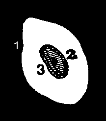
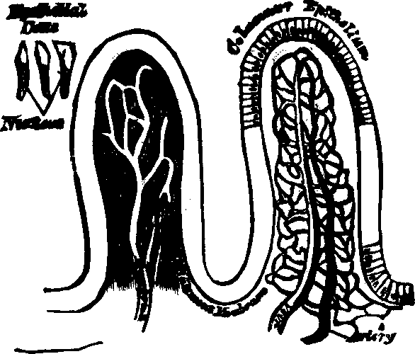
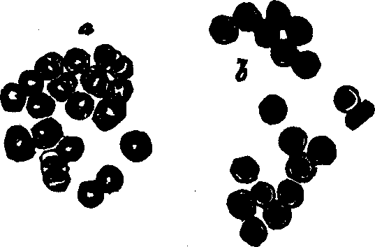
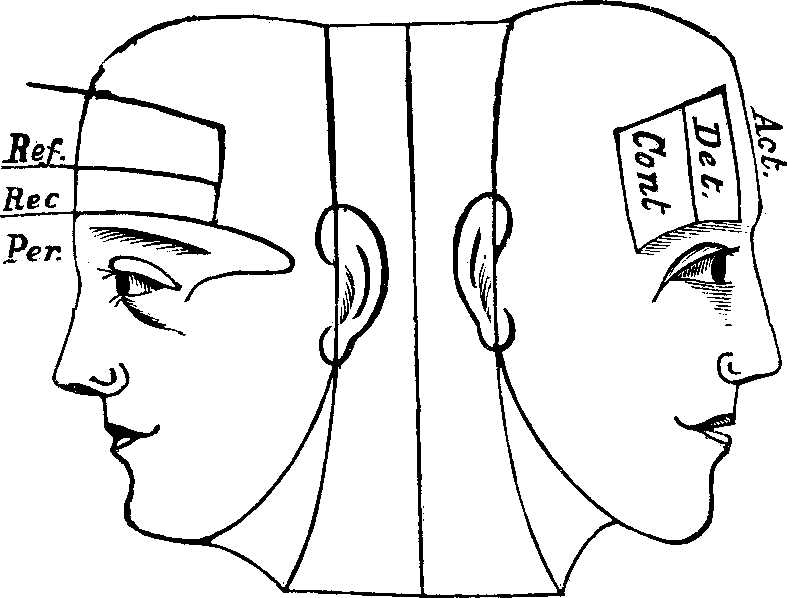
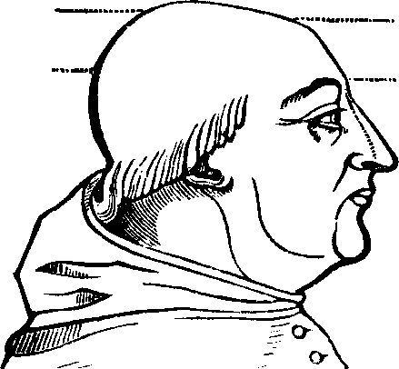

PART I.
PHYSIOLOGY.
CHAPTER I.
BIOLOGY.
In this chapter we propose to consider Life in its primitive
manifestations. Biology is the science of living bodies, or the
science of life. Every organ of a living body has a function to perform,
and Physiology treats of these functions.
Function means the peculiar action of some particular organ or
part. There can be no vital action without change, and no change without
organs. Every living thing has a structure, and Anatomy treats of
the structures of organized bodies. Several chapters of this work are
devoted to Physiological Anatomy, which treats of the human organism
and its functions.
The beginning of life is called generation; its perpetuation,
reproduction. By the former function, individual life is insured; by
the latter, it is maintained. Since nutrition sustains life, it has been
pertinently termed perpetual reproduction.
Latent Life is contained in a small globule, a mere atom of
matter, in the sperm-cell. This element is something which, under certain
conditions, develops into a living organism. The entire realm of nature
teems with these interesting phenomena, thus manifesting that admirable
adjustment of internal to external relations, which claims our profound
attention. We [pg
12]are simply humble scholars, waiting on the threshold of nature's
glorious sanctuary, to receive the interpretation of her divine
mysteries.
Some have conjectured that chemical and physical forces account for all
the phenomena of life, and that organization is not the result of vital
forces. Physical science cannot inform us what the beginning was, or how
vitality is the result of chemical forces; nor can it tell us what
transmutations will occur at the end of organized existence. This
mysterious life-principle eludes the grasp of the profoundest scientists,
and its presence in the world will ever continue to be an astonishing and
indubitable testimony of Divine Power.
The physical act of generation is accomplished by the union of two
cells; and as this conjugation is known to be so generally indispensable to
the organization of life, we may fairly infer that it is a universal
necessity. Investigations with the microscope have destroyed the hypothesis
of "spontaneous generation." These show us that even the minutest living
forms are derived from a parent organization.
Generation. So long as the vital principle remains in the
sperm-cell, it lies dormant. That part of the cell which contains this
principle is called the spermatozoön, which consists of a
flattened body, having a long appendage tapering to the finest point. If it
be remembered that a line is the one-twelfth part of an inch in length,
some idea may be formed of the extreme minuteness of the body of a human
spermatozoön, when we state that it is from 1/800 to 1/600 part of a
line, and the filiform tail 1/50 of a line, in length. This life-atom,
which can be discerned only with a powerful magnifying glass, is perfectly
transparent, and moves about by executing a vibratile motion with its long
appendage. Within this speck of matter are hidden the multifarious forces
which, under certain favorable conditions, result in organization. Magnify
this infinitesimal atom a thousand times, and no congeries of formative
powers is perceived wherewith to work out the wonders of its existence. Yet
it contains the principle, which is the contribution on the part of the
male toward the generation of a new being.
The ovum or germ-cell, is the special contribution on the [pg 13]part of
the female for the production of another being. The human ovum, though
larger than the spermatozoön, is also extremely small, measuring not
more than from 1/20 to 1/10 of a line, or from 1/240 to 1/120 of an inch,
in diameter.
Fig. 1. A. Human
Spermatozoön magnified about 3,800 diameters. B. Vertical and
lateral views of spermatozoa of man. C, D, E, F. Development of
spermatozoa within the vesicles of evolution. G. Cell of the sponge
resembling a spermatozoön. H. Vesicles of evolution from the
seminal fluid of the dog in the parent cell I. Single vesicles of
different sizes. J. Human spermatozoön forming in its cell.
K. Rupture of the cell and escape of the spermatozoön.
The sperm and the germ-cells contain the primary elements of all organic
structures, and both possess the special qualities and conditions by which
they may evolve organic beings. Every cell is composed of minute grains,
within which vital action takes [pg 14]place. The interior of a cell consists of
growing matter; the exterior, of matter which has assumed its form and is
less active.
When the vital principle is communicated to it, the cell undergoes a
rapid transformation. While this alteration takes place within the cell,
deteriorating changes occur in the cell-wall. Although vital operations
build up these structures, yet the animal and nervous functions are
continually disintegrating, or wasting, them.
Throughout the animal kingdom, germ-cells present the same external
aspect when carefully examined with the microscope. No difference can be
observed between the cells of the flowers of the oak and those of the
apple, but the cells of the one always produce oak trees, while those of
the other always produce apple trees. The same is true of the germs of
animals, there being not the slightest apparent difference. We are unable
to perceive how one cell should give origin to a dog, while another exactly
like it becomes a man. For aught we know, the ultimate atoms of these cells
are identical in physical character; at least we have no means of detecting
any difference.
Species. The term species is generally used merely as a
convenient name to designate certain assemblages of individuals having
various striking points of resemblance. Scientific writers, as a rule, no
longer hold that what are usually called species are constantly
unvarying and unchangeable quantities. Recent researches point to the
conclusion that all species vary more or less, and, in some
instances, that the variation is so great that the limits of general
specific distinctness are sometimes exceeded.
Our space will not permit us to do more than merely indicate the two
great fundamental ideas upon which the leading theories of the time
respecting the origin of species are based. These are usually termed the
doctrine of Special Creation and the doctrine of Evolution.
According to the doctrine of Special Creation, it is thought that species
are practically immutable productions, each species having a specific
centre where it was originally created, and from which it spread over a
certain area until its further progress was obstructed by unfavorable
conditions. The advocates of the doctrine of Evolution hold, on the
contrary, that species are not permanent and immutable, but that they are
subject to modification, and that "the existing forms of life are [pg
15]descendants by true generation of pre-existing forms."[1] Most naturalists are now inclined to
admit the general truth of the theory of evolution, but they differ widely
respecting the mode in which it occurred.
THE PROCESS OF GENERATION.
The vital principle, represented in the sperm-cell by a
spermatozoön, must be imparted to a germ-cell in order to
effect impregnation. After touching each other, separate them immediately,
and observe the result. If, with the aid of a powerful lens, we directly
examine the spermatozoön, it will be perceived that, for a short time,
it preserves its dimensions and retains all its material aspects. But it
does not long withstand the siege of decay, and, having fulfilled its
destiny, loses its organic characteristics, and begins to shrink.
If we examine the fertilized germ, we discover unusual activity, the
result of impregnation. Organic processes succeed one another with
wonderful regularity, as if wrought out by inexplicable intelligence. Here
begin the functions which constitute human physiology.
Generation requires that a spermatozoön be brought into actual
contact with a germ that fecundation may follow. If a spermatic cell, or
spermatozoön, together with several unimpregnated ova, no matter how
near to one another, if not actually touching, be placed on the concave
surface of a watch-crystal, and covered with another crystal, keeping them
warm, and even though the vapor of the ova envelops it, no impregnation
will occur. Place the spermatozoön in contact with an ovum, and
impregnation is instantly and perfectly accomplished. Should this
vitalizing power be termed nerve-force, electricity, heat, or motion? It is
known that these forces may be metamorphosed; for instance, nervous force
may be converted into electricity, electricity into heat, and heat into
motion, thus illustrating their affiliation and capability of
transformation. But nothing is explained respecting the real nature of the
vital principle, if we assert its identity with any of these forces; for
who can reveal the true nature of any of these, or even of matter?
[pg
16]ALTERNATE GENERATION.
In several insect families, the species is not wholly represented in the
adult individuals of both sexes, or in their development, but, to complete
this series, supplementary individuals, as it were, of one or of several
preceding generations, are required. The son may not resemble the father,
but the grandfather, and in some instances, the likeness re-appears only in
latter generations. Agassiz states: "Alternate generation was first
observed among the Salpæ. These are marine mollusks, without shells,
belonging to the family Tunicata. They are distinguished by the curious
peculiarity of being united together in considerable numbers so as to form
long chains, which float in the sea, the mouth(m) however being free in
each.
Fig. 2.
Fig. 3.
"Fig. 2. The individuals thus joined in floating colonies produce eggs;
but in each animal there is generally but one egg formed, which is
developed in the body of the parent, and from which is hatched a little
mollusk.
"Fig. 3, which remains solitary, and differs in many respects from the
parent. This little animal, on the other hand, does not produce eggs, but
propagates, by a kind of budding, which gives rise to chains already seen
in the body of their parent(a), and these again bring forth solitary
individuals, etc."
It therefore follows that generation in some animals require? two
different bodies with intermediate ones, by means of which and their
different modes of reproduction, a return to the original stock is
effected.
Universality of Animalcular Life.—Living organisms are
universally diffused over every part of the globe. The gentle zephyr wafts
from flower to flower invisible, fructifying atoms, which quicken beauty
and fragrance, giving the promise of a golden fruitage, to gladden and
nourish a dependent world. Nature's own sweet cunning invests all living
things [pg
17]constraining into her service chemical affinities, arranging the
elements and disposing them for her own benefit, in such numberless ways
that we involuntarily exclaim,
"The course of Nature is the art of God."
The microscope reveals the fact that matter measuring only 1/120000 of
an inch diameter may be endowed with vitality, and that countless numbers
of animalcules often inhabit a single drop of stagnant water. These monads
do not vary in form, whether in motion or at rest. The life of one, even,
is an inexplicable mystery to the philosopher. Ehrenberg writes: "Not only
in the polar regions is there an uninterrupted development of active
microscopic life, where larger animals cannot exist, but we find that those
minute beings collected in the Antarctic expedition of Captain James Ross
exhibit a remarkable abundance of unknown, and often most beautiful
forms."
Even the interior of animal bodies is inhabited by animalcules. They
have been found in the blood of the frog and the salmon, and in the optic
fluid of fishes. Organic beings are found in the interior of the earth,
into which the industry of the miner has made extensive excavations, sunk
deep shafts, and thus revealed their forms; likewise, the smallest fossil
organisms form subterranean strata many fathoms deep. Not only do lakes and
inland seas abound with life, but also, from unknown depths, in volcanic
districts, arise thermal springs which contain living insects. Were we
endowed with a microscopic eye, we might see myriads of ethereal voyagers
wafted by on every breeze, as we now behold drifting clouds of aqueous
vapor. While the continents of earth furnishes evidences of the
universality of organic beings, recent observations prove that "animal life
predominates amid the eternal night of the depths of the liquid ocean."
THE ORIGIN OF LIFE.
The ancients, rude in many of their ideas, referred the origin of life
to divine determination. The thought was crudely expressed, but well
represented, in the following verse:
"Then God smites his hands together,
And strikes out a soul as a spark,
Into the organized glory of things.
From the deeps of the dark."
[pg
18]According to a Greek myth, Prometheus formed a human image from
the dust of the ground, and then, by fire stolen from heaven, animated it
with a living soul. Spontaneous generation once held its sway, and now the
idea of natural evolution is popular. Some believe that the inpenetrable
mystery of life is evolved from the endowments of nature, and build their
imperfect theory on observations of her concrete forms and their
manifestations, to which all our investigations are restricted. But every
function indicates purpose, every organism evinces intelligent design, and
all proclaim a Divine Power. Something cannot come out of nothing.
With reason and philosophy, chance is an impossibility. We,
therefore, accept the display of wisdom in nature as indicative of the
designs of God. Thus "has He written His claims for our profoundest
admiration and homage all over every object that He has made." If you ask:
Is there any advantage in considering the phenomena of nature as the result
of DIVINE VOLITION? we answer, that this belief corresponds with the
universally acknowledged ideas of accountability; for, with a wise, and
efficient Cause, we infer there is an intelligent creation, and the desire
to communicate, guide and bless, is responded to by man, who loves, obeys,
and enjoys. Nothing is gained by attributing to nature vicegerent forces.
Is it not preferable to say that she responds to intelligent, loving
Omnipotence? Our finiteness is illustrated by our initiation into organized
being. Emerging from a rayless atom, too diminutive for the sight, we
gradually develop and advance to the maturity of those conscious
powers, the exercise of which furnishes indubitable evidence of our
immortality. We are pervaded with invisible influences, which, like the
needle of the compass trembling on its pivot, point us to immortality as
our ultimate goal, where in the sunny clime of Love, even in a spiritual
realm of joy and happiness, we may eternally reign with Him who is all in
all.
[pg 19]
CHAPTER II.
PHYSIOLOGICAL ANATOMY.
THE BONES.
All living bodies are made up of tissues. There is no part, no organ,
however soft and yielding, or hard and resisting, which has not this
peculiarity of structure. The bones of animals, as well as their
flesh and fat, are composed of tissues, and all alike made up of cells.
When viewed under a microscope, each cell is seen to consist of three
distinct parts, a nucleolus, or dark spot, in the center of the
cell, around which lies a mass of granules, called the nucleus; and
this, in turn, is surrounded with a delicate, transparent membrane, termed
the envelope. Each of the granules composing the nucleus assimilates
nourishment, thereby growing into an independent cell, which possesses a
triple organization similar to that of its parent, and in like manner
reproduces other cells.

Fig. 4. Nucleated cell.
From Goeber. 1. Periphery of the cell, or cell-wall. 2. Nucleus. 3.
Nucleolus in the center.
A variety of tissues enters into the composition of an animal structure,
yet their differences are not always distinctly marked, since the
characteristics of some are not unlike those of others. We shall notice,
however, only the more important of the tissues.
The Areolar, or Connective Tissue, is a complete network
of delicate fibers, spread over the body, and serves to bind the various
organs and parts together. The fibrous and serous tissues are modifications
of the areolar.
[pg
20]The Nervous Tissue is of two kinds: The gray, which is
pulpy and granulated, and the white fibrous tissue. The Adipose
Tissue is an extremely thin membrane, composed of closed cells which
contain fat. It is found principally just beneath the skin, giving it a
smooth, plump appearance.
Fig. 5. Arrangement of
fibers in the Areolar Tissue. Magnified 135 diameters.
The Cartilaginous Tissue consists of nucleated cells, and, with
the exception of bone, is the hardest part of the animal frame. The
Osseous Tissue, or bone, is more compact and solid than the
cartilaginous, for it contains a greater quantity of lime. The Muscular
Tissue is composed of bundles of fibers, which are enclosed in a
cellular membrane.
Fig. 6. Human Adipose
Tissue.
Various opinions have been entertained in regard to the formation, or
growth, of bone. Some anatomists have supposed that all bone is formed in
cartilage. But this is not true, for there is an intra-membranous,
as well as an intra-cartilaginous, formation of bone, as may be seen
in the development of the cranial bones, where the gradual calcification
takes place upon the inner layers of the fibrous coverings.
Intra-cartilaginous deposit is found in the vicinity of the blood-vessels,
within the cartilaginous canals; also, there are certain points first
observed in the shafts of long bones, called centers of
ossification. These points are no sooner formed than the cartilage
corpuscles arrange themselves in concentric zones, and, lying in contact
with one another, become very compact. As ossification proceeds, the
cup-shaped cavities are converted into closed interstices of bone, with
extremely thin lamellæ, or layers. These, however, soon increase
[pg 21]in
density, and no blood-vessels can be observed within them.

Fig. 7. Vertical section of
cartilage near the surface of ossification. 1. Ordinary appearance
of the temporary cartilage. 1'. Portion of the same more highly
magnified. 2. The cells beginning to form into concentric zones.
2'. Portion more magnified. 3. The ossification is extending
in the inter-cellular spaces, and the rows of cells are seen resting in the
cavities so formed, the nuclei being more separated than above. 3'.
Portion of the same more highly magnified.
Fig. 8. Thigh-bone, sawn open lengthwise.
Fig. 9. Lower end of the
thigh-bone sawn across, showing its central cavity.
The bony plates form the boundaries of the Haversian, or
nutritive canals of the bones. In the second stage of ossification,
the cartilage corpuscles are converted into bone. Becoming flattened
against the osseous lamellæ already formed, they crowd upon one
another so as to entirely obliterate the lines that distinguish them; and,
simultaneously with these changes, a calcareous deposit takes place upon
their interior. Bones grow by additions to their ends and surfaces. In the
child, their extremities are [pg 22]separated from the body of the bone by layer
of cartilage, and the cancellated, or cellular structure, which remains for
a time in the interior, represents the early condition of the ossifying
substances.
The bones contain more earthy matter in their composition than any other
part of the human body, being firm, hard, and of a lime color. They compose
the skeleton or frame work, and, when united by natural ligaments, form
what is known as the natural skeleton; when they are wired together,
they are called an artificial skeleton. The number of bones in the
human body is variously estimated; for those regarded as single by some
anatomists are considered by others to consist of several distinct pieces.
There are two hundred distinct bones in the human skeleton besides the
teeth. These may be divided into those of the Head, Trunk, Upper
Extremities, and Lower Extremities.
Fig. 10. The bones of the skull separated. 1. Frontal,
only half is seen. 2. Parietal. 3. Occipital, only half is
seen. 4. Temporal. 5. Nasal. 6. Malar. 7.
Superior maxillary (upper jaw). 8. Lachrymal. 9. Inferior
maxillary (lower jaw). Between 4 and 6 a part of the sphenoid
or wedge-shaped bone, is seen. Another bone assisting to form the skull,
but not here seen, is called the ethmoid (sieve-like, from being
full of holes), and is situated between the sockets of the eyes, forming
the roof of the nose.
The Bones of the Head are classed as follows: eight belonging to
the Cranium, and fourteen to the Face. The bones of the Cranium are the
occipital, two parietal, two temporal, frontal,
sphenoid, and ethmoid. Those composing the face are, the two
nasal, two superior maxillary, two lachrymal, two
malar two palate, two inferior turbinated, vomer, and
inferior maxillary. The cranial bones are composed of two dense
plates, between which there is, in most places a cancellated or cellular
tissue. The external [pg 23]plate is fibrous, the internal, compact and
vitreous. The skull is nearly oval in form, convex externally, the bone
being much thicker at the base than elsewhere, and it is, in every respect
admirably adapted to resist any injury to which it may be exposed, thus
affording ample protection to the brain substance which it envelops. The
internal surface of the cranium presents eminences and depressions for
lodging the convolutions of the brain, and numerous furrows for the
ramifications of the blood-vessels. The bones of the cranium are united to
one another by ragged edges called sutures, which are quite distinct
in the child but which in old age are nearly effaced. Some authorities
suppose that by this arrangement the cranium is less liable to be fractured
by blows; others think that the sutures allow the growth of these bones,
which takes place by a gradual osseous enlargement at the margins. The
bones of the Face are joined at the lower part and in front of the
cranium, and serve for the attachment of powerful muscles which assist in
the process of mastication. Although the soft parts of the face cover the
bony structure, yet they do not conceal its principal features, or
materially change its proportions. The form of the head and face presents
some remarkable dissimilarities in different races.
Fig. 11. 1. The
first bone of the sternum (breast-bone). 2. The second bone of the
sternum. 3. The cartilage of the sternum. 4. The first dorsal
vertebra (a bone of the spinal column). 5. The last dorsal vertebra.
6. The first rib. 7. Its head. 8. Its neck. 9.
Its tubercle. 10. The seventh or last true rib. 11. The
cartilage of the third rib. 12. The floating ribs.
Fig. 12. A vertebra of the
neck. 1. The body of the vertebra. 2. The spinal canal.
4. The spinous process cleft at its extremity. 5. The
transverse process. 7. The interior articular process. 8. The
superior articular process.
The Trunk has fifty-four bones, which are as follows: The Os
Hyoides, the Sternum, twenty-four Ribs, twenty-four
vertebræ or bones of the Spinal Column, the Sacrum, the
Coccyx, and two Ossa Innominata. The Os Hyoides,
situated at the base of the tongue, is the most isolated bone of the
skeleton, and serves for the attachment of [pg 24]muscles. The Sternum,
or breast-bone, in a child is composed of six pieces, in the adult of
three, which in old age are consolidated into one bone. The Ribs are
thin, curved bones, being convex externally. There are twelve on each side,
and all are attached to the spinal column. The seven upper ribs, which are
united in front of the sternum, are termed true ribs; the next
three, which are not attached to the sternum, but to one another are called
false ribs; and the last two, which are joined only to the
vertebræ, are designated as floating ribs. The first rib is
the shortest, and they increase in length as far as the eighth, after which
this order is reversed.
Fig. 13. 1. The
cartilaginous substance which connects the bodies of the vertebræ.
2. The body of the vertebra. 3. The spinous process.
4,4. The transverse processes. 5,5. The articular processes.
6,6. A portion of the bony bridge which assists in forming the
spinal canal (7).
Fig. 14. Backbone, spinal
column, or vertebral column. All animals possessing such a row of bones are
called vertebrates. Above b are the cervical (neck)
vertebræ; b to c, dorsal (back) or chest
vertebræ; c to d, lumbar (loins) vertebræ;
d to e, sacrum; e to f, coccyx.
The Spinal Column or backbone, when viewed from the front
presents a perpendicular appearance, but a side view shows four distinct
curves. The bones composing it are called vertebræ. The body
part of a vertebra is light and spongy in texture, having seven projections
called processes, four of which are the articular processes,
which furnish surfaces to join the different vertebræ of the spinal
column. Two are called transverse, and the remaining one is termed
the spinous. The transverse [pg 25]and spinous processes serve for the
attachment of the muscles belonging to the back. All these processes are
more compact than the body of the vertebra, and, when naturally connected,
are so arranged as to form a tube which contains the medulla
spinalis, or spinal cord. Between the vertebræ is a
highly-elastic, cartilaginous and cushion-like substance, which freely
admits of motion, and allows the spine to bend as occasion requires. The
natural curvatures of the spinal column diminish the shock produced by
falling, running or leaping, which would otherwise be more directly
transmitted to the brain. The ribs at the sides, the sternum in front, and
the twelve dorsal bones of the spinal column behind, bound the thoracic
cavity, which contains the lungs, heart, and large blood-vessels.
Fig. 15. A representation of the pelvic bones. e. The
lumbo-sacral joint. 2. The sacrum. 3. Coccyx. 1, 1. The
innominata. 4,4. Acetabula.
The Pelvis is an open bony structure, consisting of the Os
Innominata, one on either side, and the Sacrum and Coccyx behind. The
Sacrum, during childhood, consists of five bones, which in later
years unite to form one bone. It is light and spongy in texture, and the
upper surface articulates with the lowest vertebra, while it is united at
its inferior margin to the coccyx. The Coccyx is the terminal bone
of the spinal column. In infancy it is cartilaginous and composed of
several pieces, but in the adult these unite and form one bone. The
Innominata, or nameless bones, during youth, consist of three
separate pieces on each side; but as age advances they coalesce and form
one bone. A deep socket, called the acetabulum, is found near their
junction, which serves for the reception of the head of the thigh-bone.
Fig. 16. 1. Portions of
the backbone. 2. Cranial bones. 4. Breast-bone. 5. Ribs.
7. Collar-bone. 8. Arm-bone (humerus). 9.
Shoulder-joint. 10, 11. Bones of the fore-arm (ulna and radius).
12. Elbow-joint. 13. Wrist-joint. 14. Bones of the
hand. 15, 16. Pelvic bones. 17. Hip-joint. 18. Femur.
19, 20. Bones of the knee-joint. 21, 22. Fibula and tibia.
23. Ankle bone. 24. Bones of the foot.
The Bones of the Upper Extremities are sixty-four in number, and
are classified as follows: The Scapula, [pg 26]Clavicle, Humerus, Ulna,
Radius, Carpus, Metacarpus, and Phalanges. The Scapula, or
shoulder-blade, is an irregular, thin, triangular bone, situated at the
posterior part of the shoulder, and attached to the upper and back part of
the chest. The Clavicle, or collar-bone, is located at the upper
part of the chest, between the sternum and scapula, and connects with both.
Its form resembles that of the italic letter f, and it prevents the
arms from sliding forward. The Humerus, the first bone of the arm,
is long, cylindrical, and situated between the scapula and fore-arm. The
Ulna is nearly parallel with the radius, and situated on the inner
side of the fore-arm. It is the longer and larger of the two bones, and in
its articulation with the humerus, forms a perfect hinge-joint. The
Radius, so called from its resemblance to a spoke, is on the outer
side of the fore-arm, and articulates with the bones of the wrist, forming
a joint. The ulna and radius also articulate with each other at their
extremities. The Carpus, or wrist, consists of eight bones, arranged
in two rows. The Metacarpus, or palm of the hand, is composed of
five bones [pg
27]situated between the carpus and fingers. The Phalanges,
fourteen in number, are the bones of the fingers and thumb, the fingers
each having three and the thumb two.
The Bones of the Lower Extremities, sixty in number, are classed
as follows: The Femur, Patella, Tibia, Fibula, Tarsus, Metatarsus, and
Phalanges. The Femur, or thigh-bone, is the longest bone in the
body. It has a large round head, which is received into the acetabulum,
thus affording a good illustration of a ball and socket joint. The
Patella, or knee-pan, is the most complicated articulation of the
body. It is of a round form, connects with the tibia by means of a strong
ligament, and serves to protect the front of the joint, and to increase the
leverage of the muscles attached to it, by causing them to act at a greater
angle. The Tibia, or shin bone, is enlarged at each extremity and
articulates with the femur above and the astragalus, the upper bone of the
tarsus, below. The Fibula, the small bone of the leg, is situated on
the outer side of the tibia, and is firmly bound to it at each extremity.
The Tarsus, or instep, is composed of seven bones, and corresponds
to the carpus of the upper extremities. The Metatarsus, the middle
of the foot, bears a dose resemblance to the metacarpus, and consists of
five bones situated between the tarsus and the phalanges. The tarsal and
the metatarsal bones are so united as to give an arched appearance to the
foot, thus imparting elasticity. The Phalanges, the toes, consist of
fourteen bones, arranged in a manner similar to that of the fingers.
We are not less interested in tracing the formation of bone through its
several stages, than in considering other parts of the human system. The
formation of the Haversian canals for the passage of blood-vessels to
nourish the bones, the earlier construction of bony tissue by a
metamorphosis of cartilaginous substance, and also the commencement of
ossification at distinct points, called centers of ossification, are
all important subjects, requiring the student's careful attention. The
bones are protected by an external membranous envelope, which, from its
situation is called the periosteum. The bones are divided into four
classes, long, short, flat and irregular, being thus adapted
to subserve a variety of purposes.
The Long Bones are found in the limbs, where they act as [pg 28]levers to
sustain the body and aid in locomotion. Eachlong bone is composed of
a cylinder, known as the shaft, and two extremities. The
shaft is hollow, its wails being thickest in the middle and
growing thinner toward the extremities. The extremities are usually
considerably enlarged, for convenience of connection with other bones, and
to afford a broad surface for the attachment of muscles. The clavical,
humerus, radius, ulna, femur, tibia, fibula, the bones of the metacarpus,
metatarsus and the phalanges, are classed as long bones.
Where the principal object to be attained is strength, and the motion of
the skeleton is limited, the individual bones are short and compressed, as
the bones of the carpus and tarsus. The structure of these bones is spongy,
except at the surface, where there is a thin crust of compact matter.
Fig.
17. Anatomy of a joint, 1, 1. Bones of a joint. 2, 2. Cartilage. 3, 3, 3, 3. Synovial
membrane.
Fig. 18. Anatomy of knee joint. 1. Lower
end of thigh-bone. 3. Knee-pan. 2, 4 Ligaments of the
knee-pan. 5. Upper end of the tibia, or shin-bone. 6, 12.
Cartilages.
When protection is required for the organs of the body, or a broad flat
surface for the attachment of the muscles, the bones are expanded into
plates, as in the cranium and shoulder-blades.
The irregular or mixed bones are those which, from their
peculiar shape, cannot be classed among any of the foregoing divisions.
Their structure is similar to the others, consisting of cancellar tissue,
surrounded by a crust of compact matter.
The vertebræ, sacrum, coccyx, temporal, sphenoid, ethmoid, malar,
two maxillary, palate, inferior turbinated, and hyoid are known as
irregular bones.
The formation of the joints requires not only bones, but also [pg
29]cartilages, ligaments, and the synovial membrane, to complete the
articulation. Cartilage is a smooth, elastic substance, softer than
bone, and invested with a thin membrane, called perichondrium. When
cartilage is placed upon convex surfaces, the reverse is true. The
Ligaments are white, inelastic, tendinous substances, softer than
cartilage, but harder than membrane. Their function is to bind together the
bones. The Synovial Membrane covers the cartilages, and is then
reflected upon the ligaments, thus forming a thin, closed sac, called the
synovial capsule.
All the synovial membranes secrete a lubricating fluid, termed
synovia, which enables the surfaces of the bones and ligaments to
move freely upon one another. When this fluid is secreted in excessive
quantities, it produces a disease known as "dropsy of the joints." There
are numerous smaller sacs besides the synovial, called bursæ
mucosæ, which in structure are analogous to them, and secrete a
similar fluid. Some joints permit motion in every direction, as the
shoulders, some in two directions only, as the elbows, while others do not
admit of any movement. The bones, ligaments, cartilages, and synovial
membrane, are supplied with nerves, arteries, and veins.
When an animal is provided with an internal bony structure, it indicates
a high rank in the scale of organization. An elaborate texture of bone is
found in no class below the vertebrates. Even in the lower order of this
sub-kingdom, which is the highest of animals, bone does not exist, as is
the case in some tribes of fishes, such as sharks, etc., and in all classes
below that of the cartilaginous fishes, the inflexible substance which
sustains the soft parts is either shell or some modification of bone, and
is usually found on the outside of the body. True bone, on the contrary, is
found in the interior, and, therefore, in higher animals, the skeleton is
always internal, while the soft parts are placed external to the bony
frame. While many animals of the lowest species, being composed of soft
gelatinous matter, are buoyant in water, the highest type of animals
requires not only a bony skeleton, but also a flexible, muscular system,
for locomotion in the water or upon the land. Each species of the animal
kingdom is thus organically adapted to its condition and sphere of
life.
[pg 30]
CHAPTER III.
PHYSIOLOGICAL ANATOMY.
THE MUSCLES.
Fig. 19. Muscular fillers highly magnified.
The Muscles are those organs of the body by which motion is
produced, and are commonly known as flesh. A muscle is composed of
fascieuli, or bundles of fibers, parallel to one another. They are
soft, varying in size, of a reddish color, and inclosed in a cellular,
membranous sheath. Each fasciculus contains a number of small
fibers, which, when subjected to a microscopic examination, are found to
consist of fibrillæ, or little fibers; each of these fibrillæ in
turn being invested with a delicate sheath. The fibers terminate in a
glistening, white tendon, or hard cord, which is attached to the
bone. So firmly are they united, that the bone will break before the tendon
can be released. When the tendon is spread out, so as to resemble a
membrane, it is called fascia. Being of various extent and
thickness, it is distributed over the body, as a covering and protection
for the more delicate parts, and aids also in motion, by firmly uniting the
muscular fibers. The spaces between the muscles are frequently filled with
fat, which gives roundness and beauty to the limbs. The muscles are of
various forms; some are longitudinal, each extremity terminating in a
tendon, which gives them a fusiform or spindle-shaped appearance;
others are either fan-shaped, flat, or cylindrical.
[pg 31]
Fig. 20. 1. A
spindle-shaped muscle, with tendinous terminations. 2. Fan-shaped muscle.
3. Penniform muscle. 4. Bipenniform muscle.
Fig. 21. Striped muscular fibre
showing cleavage in opposite directions. 1. Longitudinal cleavage. 2.
Transverse cleavage. 3. Transverse section of disc. 4. Disc nearly
detached. 5. Detached disc, showing the sarcous elements. 6.
Fibrillæ. 7, 8. Separated fibrillæ highly magnified.
Every muscle has an origin and an insertion. The term
origin is applied to the more fixed or central attachment of a
muscle, and the term insertion to the movable point to which the
force of the muscle is directed; but the origin is not absolutely fixed,
except in a small number of muscles, as those of the face, which are
attached at one extremity to the bone, and at the other to the movable
integument, or skin. In most instances, the muscles may act from either
extremity. The muscles are divided into the Voluntary, or muscles of animal
life, and the Involuntary, or muscles of organic life. There are, however,
some muscles which cannot properly be classified with either, termed
Intermediate. The Voluntary Muscles are chiefly controlled by the
will, relaxing and contracting at its pleasure, as in the motion of the
eyes, mouth, and limbs. The fibers are of a dark red color, and possess
great strength. These fibers are parallel, seldom interlacing, but
presenting a striped or striated appearance; and a microscopic examination
of them shows that even the most minute consist of parallel filaments
marked by longitudinal and transverse striæ, or minute channels.
The fibers are nearly the same length as the muscles to which they belong.
Each muscular fiber is capable of [pg 32]contraction; it may act singly, though
usually it acts in unison with others. By a close inspection, it has been
found that fibers may be drawn apart longitudinally, in which case they are
termed fibrillæ, or they may be separated transversely, forming a
series of discs. The Sarcolemma, or investing sheath of the muscles,
appears to be formed even before there are any visible traces of the muscle
itself. It is a transparent and delicate membrane, but very elastic. The
Involuntary Muscles are influenced by the sympathetic nervous
system, and their action pertains to the nutritive functions of the body.
They differ from the voluntary muscles in not being striated, having no
tendons, and in the net-work arrangements of their fibers. The
Intermediate Muscles are composed of striated and unstriated fibers;
they are, therefore, both voluntary and involuntary in their functions. The
muscles employed in respiration are of this class, for we can breathe
rapidly or slowly, and, for a short time, even suspend their action; but
soon, however, the organic muscles assert their instinctive control, and
respiration is resumed.
Fig. 22. Unstriated muscular fiber; at b, in its natural state; at
a, showing the nuclei after the action of acetic acid.
Fig. 23. A view of the under side
of the diaphragm.
The Diaphragm, or midriff, is the muscular division between the
thorax and the abdomen. It has been compared to an inverted basin, the
concavity of which is [pg 33][pg 34]directed toward the abdomen. The muscles
receive their nourishment from the numerous blood-vessels which penetrate
their tissues. The voluntary muscles are abundantly supplied with nerves,
while the involuntary are not so numerously furnished. The color of the
muscles is chiefly due to the blood which they contain. They vary in size
according to their respective functions. For example, the functions of the
heart require large and powerful muscles, and those of the eye, small and
delicate ones. There are between four hundred and sixty and five hundred
muscles in the human body.
Fig.
24. A representation of the superficial layer of muscles on the anterior
portion of the body.
Fig.
25. A representation of the superficial layer of muscles on the posterior
portion of the body.
Very rarely is motion produced by the action of a single muscle, but by
the harmonious action of several. There is infinite variety in the
arrangement of the muscles, each being adapted to its purpose, in strength,
tenacity, or elasticity. While some involuntarily respond to the wants of
organic life, others obey, with mechanical precision, the edicts of the
will. The peculiar characteristic of the muscles is their contractility;
for example, when the tip of the finger is placed in the ear, an incessant
vibration, due to the contraction of the muscles of the ear, can be heard.
When the muscles contract, they become shorter; but what is lost in length
is gained in breadth and thickness, so that their actual volume remains the
same. Muscles alternately contract and relax, and thus act upon the bones.
The economy of muscular power thus displayed is truly remarkable. In easy
and graceful walking, the forward motion of the limbs is not altogether due
to the exercise of muscular power, but partly to the force of gravity, and
only a slight assistance of the muscles is required to elevate the leg
sufficiently to allow it to oscillate.
Motion is a characteristic of living bodies. This is true, not only in
animals, but also in plants. The oyster, although not possessing the power
of locomotion, opens and closes its shell at pleasure. The coral insect
appears at the door of its cell, and retreats at will. All the varied
motions of animals are due to a peculiar property of the muscles, termed
contractility. Although plants are influenced by external agents, as
light, heat, electricity, etc., yet it is supposed that they may move in
response to inward impulses. The sensitive stamens of the barberry, when
touched at their base on the inner side, resent the intrusion, by making a
sudden jerk forward. Venus's [pg 35][pg 36]fly-trap, a plant found in North Carolina,
is remarkable for the sensitiveness of its leaves; which close suddenly and
capture insects which chance to alight upon them. The muscles of the
articulates are situated within the solid framework, unlike the
vertebrates, whose muscles are external to the bony skeleton. All animals
have the power of motion, from the lowest radiate to the highest
vertebrate, from the most repulsive polyp to that type of organized life
made in the very image of God.
The muscles, then, subserve an endless variety of purposes. By their aid
the farmer employs his implements of husbandry, the mechanic deftly wields
his tools, the artist plies his brush, while the fervid orator gives
utterance to thoughts glowing with heavenly emotions. It is by their agency
that the sublimest spiritual conceptions can be brought to the sphere of
the senses, and the noblest, loftiest aims of to-day can be made glorious
realizations of the future.
[pg 37]
CHAPTER IV.
PHYSIOLOGICAL ANATOMY.
THE DIGESTIVE ORGANS.
Digestion signifies the act of separating or distributing, hence
its application to the process by which food is made available for
nutritive purposes. The organs of digestion are the Mouth, Teeth, Tongue,
Salivary Glands, Pharynx, Esophagus, the Stomach and the Intestines, with
their glands, the Liver, Pancreas, Lacteals, and the Thoracic Duct.
Fig. 26. A view of the lower jaw. 1. The body. 2, 2. Rami,
or branches. 3, 3. Processes of the lower jaw. m. Molar
teeth. b. Bicuspids, c. Cuspids. i. Incisors.
The Mouth is an irregular cavity, situated between the upper and
the lower jaw, and contains the organs of mastication. It is bounded by the
lips in front, by the cheeks at the sides, by the roof of the mouth and
teeth of the upper jaw above, and behind and beneath by the teeth of the
lower jaw, soft parts, and palate. The soft palate is a sort of pendulum
attached only at one of its extremities, while the other involuntarily
opens and closes the passage from the mouth to the pharynx. The interior of
the mouth, as well as other portions of the alimentary canal, is lined with
a delicate tissue, called mucous membrane.
The Teeth are firmly inserted in the alveoli or sockets, of the
upper and the lower jaw. The first set, twenty in number, are temporary,
and appear during infancy. They are replaced [pg 38]by permanent teeth, of which
there are sixteen in each jaw; four incisors, or front teeth, four cuspids,
or eye teeth, four bicuspids, or grinders, and four molars, or large
grinders. Each tooth is divided into the crown, body, and root. The
crown is the grinding surface; the body, the part projecting
from the jaw, is the seat of sensation and nutrition; the root is
that portion of the tooth which is inserted in the alveolus. The teeth are
composed of dentine, or ivory, and enamel. The ivory forms the greater
portion of the body and root, while the enamel covers the exposed surface.
The small white cords communicating with the teeth are the nerves.
The Tongue is a flat oval organ, the base of which is attached to
the os hyoides, while the apex, the most sensitive part of the body, is
free. Its surface is covered with a membrane, which, at the sides and lower
part, is continuous with the lining of the mouth. On the lower surface of
the tongue, this membrane is thin and smooth, but on the upper side it is
covered with numerous papillæ, which, in structure, are similar to the
sensitive papillæ of the skin.
Fig.
27. The salivary glands. The largest one, near the ear, is the parotid
gland. The next below it is the submaxillary gland. The one under the
tongue is the sublingual gland.
The Salivary Glands are six in number, three on each side of the
mouth. Their function is to secrete a fluid called saliva, which
aids in mastication. The largest of these glands, the Parotid, is
situated in front and below the ear; its structure, like that of all the
salivary glands, is cellular. The Submaxillary gland is circular in
form, and situated midway between the [pg 39]angle of the lower jaw and
the middle of the chin. The Sublingual is a long flattened gland,
and, as its name indicates, is located below the tongue, which when
elevated, discloses the saliva issuing from its porous openings.
The Pharynx is nearly four inches in length, formed of muscular
and membranous cells, and situated between the base of the cranium and the
esophagus, in front of the spinal column. It is narrow at the upper part,
distended in the middle, contracting again at its junction with the
esophagus. The pharynx communicates with the nose, mouth, larynx, and
esophagus.
The Esophagus, a cylindrical organ, is a continuation of the
pharynx, and extends through the diaphragm to the stomach. It has three
coats: first, the muscular, consisting of an exterior layer of fibers
running longitudinally, and an interior layer of transverse fibers; second,
the cellular, which is interposed between the muscular and the mucous coat;
third, the mucous membrane, or internal coat, which is continuous with the
mucous lining of the pharynx.
Fig. 28. A representation of the
interior of the stomach. 1. The esophagus. 2. Cardiac orifice
opening into the stomach. 6. The middle or muscular coat. 7.
The interior or mucous coat. 10. The beginning of the duodenum.
11. The pyloric orifice.
The Stomach is a musculo-membranous, conoidal sac, communicating
with the esophagus by means of the cardiac orifice (see Fig. 28). It is
situated obliquely with reference to the body, its base lying at the left
side, while the apex is directed toward the right side. The stomach is
between the liver and spleen, subjacent to the diaphragm, and communicates
with the intestinal canal by the pyloric orifice. It has three coats. The
peritoneal, or external coat is composed of compact, cellular tissue, woven
into a thin, serous membrane, and assists in keeping the stomach in place.
The middle coat is formed of three layers of muscular fibers: in the first,
the fibres run [pg
40]longitudinally; in the second, in a circular direction; and in
the third, they are placed obliquely to the others. The interior, or mucous
coat, lines this organ. The stomach has a soft, spongy appearance, and,
when not distended, lies in folds. During life, it is ordinarily of a
pinkish color. It is provided with numerous small glands, which secrete the
gastric fluid necessary for the digestion of food. The lining membrane,
when divested of mucus, has a wrinkled appearance. The arteries, veins, and
lymphatics, of the stomach are numerous.
Fig. 29. Small and large intestines. 1, 1, 2, 2. Small intestine.
3. Its termination in the large intestine. 4. Appendix
vermiformis. 5. Cæcum. 6. Ascending colon. 7.
Transverse colon. 8. Descending colon. 9. Sigmoid flexure of
colon. 10. Rectum.
The Intestines are those convoluted portions of the alimentary
canal into which the food is received after being partially digested, and
in which the separation and absorption of the nutritive materials and the
removal of the residue take place. The coats of the intestines are
analogous to those of the stomach, and are, in fact, only extensions of
them. For convenience of description, the intestines may be divided into
the small and the large. The small intestine is from twenty
to twenty-five feet in length, and consists of the Duodenum, Jejunum, and
Ileum. The Duodenum, so called because its length is equal to the
breadth of twelve fingers, is the first division of the small intestine. If
the mucous membrane of the duodenum be examined, it will be found thrown
into numerous folds, which are called valvulæ conniventes, the
chief function of which appears to be to retard the course of the
alimentary matter, and afford a larger surface for the accommodation of the
absorbent vessels. Numerous villi, minute thread-like projections,
will be [pg
41]found scattered over the surface of these folds, set side by
side, like the pile of velvet. Each villus contains a net-work of
blood-vessels, and a lacteal tube, into which the ducts from the liver and
pancreas open, and pour their secretions to assist in the conversion of the
chyme into chyle. The Jejunum, so named because it is usually found
empty after death, is a continuation of the duodenum, and is that portion
of the alimentary canal in which the absorption of nutritive matter is
chiefly effected. The Ileum, which signifies something rolled up, is
the longest division of the small intestine. Although somewhat thinner in
texture than the jejunum, yet the difference is scarcely perceptible. The
large intestine is about five feet in length, and is divided into the
Cæcum, Colon, and Rectum. The Cæcum is about three inches in
length. Between the large and the small intestine is a valve, which
prevents the return of excrementitious matter that has passed into the
large intestine. There is attached to the cæcum an appendage about
the size of a goose-quill, and three inches in length, termed the
appendix vermiformis. The Colon is that part of the large
intestine which extends from the cæcum to the rectum, and which is
divided into three parts, distinguished as the ascending, the transverse,
and the descending.

Fig. 30. Villi of the small
intestine greatly magnified.
Fig. 31. A section of the Ileum,
turned inside out, so as to show the appearance and arrangement of the
villi on an extended surface.
[pg
42]The Rectum is the terminus of the large intestine. The
intestines are abundantly supplied with blood-vessels. The arteries of the
small intestine are from fifteen to twenty in number. The large intestine
is furnished with three arteries, called the colic arteries. The
ileo-colic artery sends branches to the lower part of the ileum, the
head of the colon, and the appendix vermiformis. The right colic
artery forms arches, from which branches are distributed to the
ascending colon. The colica media separates into two branches, one
of which is sent to the right portion of the transverse colon, the other to
the left. In its course, the superior hemorrhoidal artery divides
into two branches, which enter the intestine from behind, and embrace it on
all sides, almost to the anus.
The Thoracic Duct is the principal trunk of the absorbent system,
and the canal through which much of the chyle and lymph is conveyed to the
blood. It begins by a convergence and union of the lymphatics on the lumbar
vertebræ, in front of the spinal column, then passes upward through
the diaphragm to the lower part of the neck, thence curves forward and
downward, opening into the subclavian vein near its junction with the left
jugular vein, which leads to the heart.
Fig. 32. c, c.
Right and left subclavian veins. b. Inferior vena cava. a.
Intestines. d. Entrance of the thoracic duct into the left
subclavian vein. 4. Mesenteric glands, through which the lacteals
pass to the thoracic duct.
Fig. 33. The inferior surface of the liver. 1. Right lobe. 2.
Left lobe. 3. Gall-bladder.
The Liver, which is the largest gland in the body, weighs [pg 43]about four
pounds in the adult, and is located chiefly on the right side, immediately
below the diaphragm. It is a single organ, of a dark red color, its upper
surface being convex, while the lower is concave. It has two large lobes,
the right being nearly four times as large as the left. The liver has two
coats, the serous, which is a complete investment, with the
exception of the diaphragmatic border, and the depression for the
gall-bladder, and which helps to suspend and retain the organ in position;
and the fibrous, which is the inner coat of the liver, and forms
sheaths for the blood-vessels and excretory ducts. The liver is abundantly
supplied with arteries, veins, nerves, and lymphatics. Unlike the other
glands of the human body, it receives two kinds of blood; the arterial for
its nourishment, and the venous, from which it secretes the bile. In the
lower surface of the liver is lodged the gall-bladder, a membranous sac, or
reservoir, for the bile. This fluid is not absolutely necessary to the
digestion of food, since this process is effected by other secretions, nor
does bile exert any special action upon, starchy or oleaginous substances,
when mixed with them at a temperature of 100° F. Experiments also show
that in some animals there is a constant flow of bile, even when no food
has been taken, and there is consequently no digestion to be performed.
Since the bile is formed from the venous blood, and taken from the waste
and disintegration of animal tissue, it would appear that it is chiefly an
excrementitious fluid. It does not seem to have accomplished its function
when discharged from the liver and poured into the intestine, for there it
undergoes various alterations previous to re-absorption, produced by its
contact with the intestinal juices. Thus the bile, after being [pg
44]transformed in the intestines, re-enters the blood under a new
form, and is carried to some other part of the system to perform its
mission.
The Spleen is oval, smooth, convex on its external, and
irregularly concave on its internal, surface. It is situated on the left
side, in contact with the diaphragm and stomach. It is of a dark red color,
slightly tinged with blue at its edges. Some physiologists affirm that no
organ receives a greater quantity of blood, according to its size, than the
spleen. The structure of the spleen and that of the mesenteric glands are
similar, although the former is provided with a scanty supply of lymphatic
vessels, and the chyle does not pass through it, as through the mesenteric
glands. The Pancreas lies behind the stomach, and extends
transversely across the spinal column to the right of the spleen. It is of
a pale, pinkish color, and its secretion is analogous to that of the
salivary glands; hence it has been called the Abdominal Salivary
Gland.
Fig.
34. Digestive organs. 3. The tongue. 7. Parotid gland.
8. Sublingual gland. 5. Esophagus. 9. Stomach.
10. Liver. 11. Gall-bladder, 14. Pancreas. 13,
13. The duodenum. The small and large intestines are represented below
the stomach.
Digestion is effected in those cavities which we have described [pg 45]as parts
of the alimentary canal. The food is first received into the mouth, where
it is masticated by the teeth, and, after being mixed with mucus and
saliva, is reduced to a mere pulp; it is then collected by the tongue,
which, aided by the voluntary muscles of the throat, carries the food
backward into the pharynx, and, by the action of the involuntary muscles of
the pharynx and esophagus, is conveyed to the stomach. Here the food is
subjected to a peculiar, churning movement, by the alternate relaxation and
contraction of the fibers which compose the muscular wall of the stomach.
As soon as the food comes in contact with the stomach, its pinkish color
changes to a bright red; and from the numerous tubes upon its inner surface
is discharged a colorless fluid, called the gastric juice, which
mingles with the food and dissolves it. When the food is reduced to a
liquid condition, it accumulates in the pyloric portion of the stomach.
Some distinguished physiologists believe that the food is kept in a gentle,
unceasing, but peculiar motion, called peristaltic, since the
stomach contracts in successive circles. In the stomach the food is
arranged in a methodical manner. The undigested portion is detained in the
upper, or cardiac extremity, near the entrance of the esophagus, by
contraction of the circular fibers of the muscular coat. Here it is
gradually dissolved, and then carried into the pyloric portion of the
stomach. From this, then, it appears, that the dissolved and undissolved
portions of food occupy different parts of the stomach. After the food has
been dissolved by the gastric fluid, it is converted into a homogeneous,
semi-fluid mass, called chyme. This substance passes from the
stomach through the pyloric orifice into the duodenum, in which, by mixing
with the bile and pancreatic fluid, its chemical properties are again
modified, and it is then termed chyle, which has been found to be
composed of three distinct parts, a reddish-brown sediment at the bottom, a
whey-colored fluid in the middle, and a creamy film at the top. Chyle is
different from chyme in two respects: First, the alkali of the digestive
fluids, poured into the duodenum, or upper part of the small intestine,
neutralizes the acid of the chyme; secondly, both the bile and the
pancreatic fluid seem to exert an influence over the fatty substances
contained in the chyme, which assists the subdivision of these [pg 46]fats into
minute particles. While the chyle is propelled along the small intestine by
the peristaltic action, the matter which it contains in solution is
absorbed in the usual manner into the vessels of the villi by the process
called osmosis. The fatty matters being subdivided into very minute
particles, but not dissolved, and consequently incapable of being thus
absorbed by osmosis, pass bodily through the epithelial lining of the
intestine into the commencement of the lacteal tubes in the villi. The
digested substances, as they are thrust along the small intestines,
gradually lose their albuminoid, fatty, and soluble starchy and saccharine
matters, and pass through the ileo-cæcal valve into the cæcum and
large intestine. An acid reaction takes place here, and they acquire the
usual fæcal smell and color, which increases as they approach the
rectum. Some physiologists have supposed that a second digestion takes
place in the upper portion of the large intestine. The lacteals, filled
with chyle, pass into the mesenteric glands with which they freely unite,
and afterward enter the receptaculum chyli, which is the
commencement of the thoracic duct, a tube of the size of a goose-quill,
which lies in front of the backbone. The lymphatics, the function of which
is to secrete and elaborate lymph, also terminate in the receptaculum
chyli, or receptacle for the chyle. From this reservoir the chyle and
lymph flow into the thoracic duct, through which they are conveyed to the
left subclavian vein, there to be mingled with venous blood. The blood,
chyle, and lymph, are then transmitted directly to the lungs.
The process of nutrition aids in the development and growth of the body;
hence it has been aptly designated a "perpetual reproduction." It is the
process by which every part of the body assimilates portions of the blood
distributed to it. In return, the tissues yield a portion of the material
which was once a component part of their organization. The body is
constantly undergoing waste as well as repair. One of the most interesting
facts in regard to the process of nutrition in animals and plants is, that
all tissues originate in cells. In the higher types of animals, the blood
is the source from which the cells derive their constituents. Although the
alimentary canal is more or less complicated in different [pg 47]classes of
animals, yet there is no species, however low in the scale of organization,
which does not possess it in some form.[2] The little polyp has only one digestive cavity,
which is a pouch in the interior of the body. In some animals circulation
is not distinct from digestion, in others respiration and digestion are
performed by the same organs; but as we rise in the scale of animal life,
digestion and circulation are accomplished in separate cavities, and the
functions of nutrition become more complex and distinct.
[pg 48]
CHAPTER V.
PHYSIOLOGICAL ANATOMY.
ABSORPTION.
Fig. 35. Villi of the small
intestine greatly magnified.
Absorption is the vital function by which nutritive materials are
selected and imbibed for the sustenance of the body. Absorption, like all
other functional processes, employs agents to effect its purposes, and the
villi of the small intestine, with their numberless projecting
organs, are specially employed to imbibe fluid substances; this they do
with a celerity commensurate to the importance and extent of their duties.
They are little vascular prominences of the mucous membrane, arising from
the interior surface of the small intestine. Each villus has two sets of
vessels. (1.) The blood-vessels, which, by their frequent blending, form a
complete net-work beneath the external epithelium; they unite at the base
of the villus, forming a minute vein, which is one of the sources of the
portal vein. (2.) In the center of the villus is another vessel, with
thinner and more transparent walls, which is the commencement of a
lacteal.
The Lacteals originate in the walls of the alimentary canal,
[pg 49]are
very numerous in the small intestine, and, passing between the laminæ of
the mesentery, they terminate in the receptaculum chyli, or
reservoir for the chyle. The mesentery consists of a double layer of
cellular and adipose tissue. It incloses the blood-vessels, lacteals, and
nerves of the small intestine, together with its accessory glands. It is
joined to the posterior abdominal wall by a narrow root; anteriorly,
it is attached to the whole length of the small intestine. The lacteals are
known as the absorbents of the intestinal walls, and after digestion is
accomplished, are found to contain a white, milky fluid, called
chyle. The chyle does not represent the entire product of digestion,
but only the fatty substances suspended in a serous fluid.
Formerly, it was supposed that the lacteals were the only agents
employed in absorption, but more recent investigations have shown that the
blood-vessels participate equally in the process, and are frequently the
more active and important of the two. Experiments upon living animals have
proved that absorption of poisonous substances occurs, even when all
communication by way of the lacteals and lymphatics is obstructed, the
passage by the blood-vessels alone remaining. The absorbent power which the
blood-vessels of the alimentary canal possess, is not limited to alimentary
substances, but through them, soluble matters of almost every description
are received into the circulation.
The Lymphatics are not less important organs in the process of
absorption. Nearly every part of the body is permeated by a second series
of capillaries, closely interlaced with the blood-vessels, collectively
termed the Lymphatic System. Their origin is not known, but they
appear to form a plexus in the tissues, from which their converging
trunks arise. They are composed of minute tubes of delicate membrane, and
from their net-work arrangement they successively unite and finally
terminate in two main trunks, called the great lymphatic veins. The
lymphatics, instead of commencing on the intestinal walls, as do the
lacteals, are distributed through most of the vascular tissues as well as
the skin. The lymphatic circulation is not unlike that of the blood; its
circulatory apparatus is, however, more delicate, and its functions are not
so well understood.
[pg 50]
Fig. 36. A general view of the
Lymphatic System.
[pg
51]The lymph which circulates through the lymphatic vessels
is an alkaline fluid composed of a plasma and corpuscles. It may be
considered as blood deprived of its red corpuscles and, diluted with water.
Nothing very definite is known respecting the functions of this fluid. A
large proportion of its constituents is derived from the blood, and the
exact connection of these substances to nutrition is not properly
understood. Some excrementitious matters are supposed to be taken from the
tissues by the lymph and discharged into the blood, to be ultimately
removed from the system. The lymph accordingly exerts an important function
by removing a portion of the decayed tissues from the body.

Fig. 37. 1. A
representation of a lymphatic vessel highly magnified. 2. Lymphatic valves.
3. A lymphatic gland and its vessels.
In all animals which possess a lacteal system there is also a lymphatic
system, the one being the complement of the other. The fact that lymph and
chyle are both conveyed into the general current of circulation, leads to
the inference that the lymph, as well as the chyle, aids in the process of
nutrition. The body is continually undergoing change, and vital action
implies waste of tissues, as well as their growth. Those organs which are
the instruments of motion, as the muscles, cannot be employed without wear
and waste of their component parts. Renovated tissues must replace those
which are worn out, and it is a part of the function of the absorbents to
convey nutritive material into the general circulation. Researches in
microscopical anatomy have shown that the skin contains multitudes of
lymphatic vessels and that it is a powerful absorbent.
Absorption is one of the earliest and most essential functions of animal
and vegetables tissues. The simpler plants consist of only a few cells, all
of which are employed in absorption; but [pg 52]in the flowering plants this
function is performed by the roots. It is accomplished on the same general
principles in animals, yet it presents more modifications and a greater
number of organs than in vegetables. While animals receive their food into
a sac, or bag called the stomach, and are provided with absorbent
vessels such as nowhere exist in vegetables, plants plunge their absorbent
organs into the earth, whence they derive nourishing substances. In the
lower order of animals, as in sponges, this function is performed by
contiguous cells, in a manner almost as elementary as in plants. In none of
the invertebrate animals is there any special absorbent system.
Internal absorption is classified by some authors as follows:
interstitial, recrementitial, and excrementitial; by
others as accidental, venous, and cutaneous. The
general cutaneous and mucous surfaces exhale, as well as absorb; thus the
skin, by means of its sudoriferous glands, exhales moisture, and is at the
same time as before stated, a powerful absorbent. The mucous surface of the
lungs is continually throwing off carbonic acid and absorbing oxygen; and
through their surface poisons are sometimes taken into the blood. The
continual wear and waste to which living tissues are subject, makes
necessary the provision of such a system of vessels for conveying away the
worn-out materials and supplying the body with new.
[pg 53]
CHAPTER VI.
PHYSICAL AND VITAL PROPERTIES OF THE BLOOD.

Fig. 38. Red corpuscles of human blood, represented at
a, as they are seen when rather beyond the focus of the
microscope; and at b as they appear when, within the focus.
Magnified 400 diameters.
Fig. 39.
Development of human lymph and chyle-corpuscles into red corpuscles of
blood. A. A lymph, or white blood-corpuscle. B. The same in
process of conversion into a red corpuscle. C. A lymph-corpuscle
with the cell-wall raised up around it by the action of water. D. A
lymph-corpuscle, from which the granules have almost disappeared. E.
A lymph-corpuscle, acquiring color; a single granule, like a nucleus,
remains. F. A red corpuscle fully developed.
Blood is the animal fluid by which the tissues of the body are
nourished. This pre-eminently vital fluid permeates every organ,
distributes nutritive material to every texture, is essentially modified by
respiration, and, finally, is the source of every secretion and excretion.
Blood has four constituents: Fibrin, Albumen, Salts (which elements, in
solution, form the liquor sanguinis), and the Corpuscles.
Microscopical examination shows that the corpuscles are of two kinds, known
as the red and the white, the former being by far the more
abundant. They are circular in form and have a smooth exterior, and are on
an average 1/3200 part of an inch in diameter, and are about one-fourth of
that in thickness. Hence more than ten millions of them may lie on a space
an inch square. If spread out in thin layers and subjected to transmitted
light, they present a slightly yellowish color, but when crowded together
and viewed by refracted light, exhibit a deep red color. These
blood-corpuscles have been termed discs, and are not, as some have
supposed, solid material, but are very nearly fluid. The red corpuscles
although [pg
54]subjected to continual movement, have a tendency to approach one
another, and when their flattened surfaces come in contact, so firmly do
they adhere that they change their shape rather than submit to a
separation. If separated, however, they return to their usual form. The
colorless corpuscles are larger than the red and differ from them in being
extremely irregular in their shape, and in their tendency to adhere to a
smooth surface, while the red corpuscles float about and tumble over one
another. They are chiefly remarkable for their continual variation in form.
The shape of the red corpuscles is only altered by external influences, but
the white are constantly undergoing alterations, the result of changes
taking place within their own substance. When diluted with water and placed
under the microscope they are found to consist of a spheroidal sac,
containing a clear or granular fluid and a spheroidal vesicle, which is
termed the nucleus. They have been regarded by some physiologists as
identical with those of the lymph and chyle. Dr. Carpenter believes that
the function of these cells is to convert albumen into fibrin, by the
simple process of cell-growth. It is generally believed that the red
corpuscles are derived in some way from the colorless. It is supposed that
the red corpuscle is merely the nucleus of a colorless corpuscle enlarged,
flattened, colored and liberated by the bursting of the wall of its cell.
When blood is taken from an artery and allowed to remain at rest, it
separates into two parts: a solid mass, called the clot, largely composed
of fibrin; and a fluid known as the serum, in which [pg 55]the clot
is suspended. This process is termed coagulation. The serum, mostly
composed of albumen, is a transparent, straw-colored fluid, having
the odor and taste of blood. The whole quantity of blood in the body is
estimated on an average to be about one-ninth of its entire weight. The
distinctions between the arterial and the venous blood are marked, since in
the arterial system the blood is uniformly bright red, and in the venous of
a very dark red color The blood-corpuscles contain both oxygen and carbonic
acid in solution. When carbonic acid predominates, the blood is dark red;
when oxygen, scarlet. In the lungs, the corpuscles give up carbonic acid,
and absorb a fresh supply of oxygen, while in the general circulation the
oxygen disappears in the process of tissue transformation, and is replaced,
in the venous blood, by carbonic acid. The nutritive portions of food are
converted into a homogeneous fluid, which pervades every part of the body,
is the basis of every tissue, and which is termed the blood. This
varies in color and composition in different animals. In the polyp the
nutritive fluid is known as chyme, in many mollusks, as well as
articulates, it is called chyle, but in vertebrates, it is more
highly organized and is called blood. In all the higher animal types it is
of a red color, although redness is not one of its essential qualities.
Some tribes of animals possess true blood, which is not red; thus the blood
of the insect is colorless and transparent; that of the reptile yellowish;
in the fish the principle part is without color, but the blood of the bird
is deep red. The blood of the mammalia is of a bright scarlet hue. The
temperature of the blood varies in different species, as well as in animals
of the same species under different physiological conditions; for this
reason, some animals are called cold-blooded. Disease also modifies
the temperature of the blood; thus in fevers it is generally increased, but
in cholera greatly diminished. The blood has been aptly termed the
"vital fluid," since there is a constant flow from the heart to the tissues
and organs of the body, and a continual return after it has circulated
through these parts. Its presence in every part of the body is one of the
essential conditions of animal life, and is effected by a special set of
organs, called the circulatory organs.
[pg 56]
CHAPTER VII.
PHYSIOLOGICAL ANATOMY.
CIRCULATORY ORGANS.
Having considered the formation of chyle, traced it through the
digestive process, seen its transmission into the vena cava, and,
finally, its conversion into blood, we shall now describe how it is
distributed to every part of the system. This is accomplished through
organs which, from the round of duties they perform, are called
circulatory. These are the Heart, Arteries, Veins, and Capillaries,
which constitute the vascular system.
Within the thorax or chest of the human body, and enclosed within a
membranous sac, called the pericardium, is the great force-pump of
the system, the heart. This organ, to which all the arteries and veins of
the body may be either directly or indirectly traced, is roughly estimated
to be equal in size to the closed fist of the individual to whom it
belongs.
It has a broad end turned upwards, and a little to the right side,
termed its base; and a pointed end called its apex, turned
downwards, forwards, and to the left side, and lying beneath a point about
an inch to the right of, and below, the left nipple, or just below the
fifth rib. Attached to the rest of the body only by the great blood-vessels
which issue from and enter it at its base, the heart is the most mobile
organ in the economy, being free to move in different directions.
The heart is divided into two great cavities by a fixed partition, which
extends from the base to the apex of the organ, and which prevents any
direct communication between them. Each of these great cavities is further
subdivided transversely [pg 57]by a movable partition, the cavity above
each transverse partition being called the auricle, and the cavity
below, the ventricle, right or left, as the case may be.
Fig. 40. General view of the heart and lungs, t.
Trachea, or windpipe, a. Aorta, p. Pulmonary artery, 1,2.
Branches of the pulmonary artery, one going to the right, the other to the
left lung. h. The heart.
The walls of the auricles are much thinner than those of the ventricles,
and the wall of the right ventricle is much thinner than that of the left,
from the fact that the ventricles have more work to perform than the
auricles, and the left ventricle more than the right.
In structure, the heart is composed almost entirely of muscular fibers,
which are arranged in a very complex and wonderful manner. The outer
surface of the heart is covered with the pericardium, which closely adheres
to the muscular substance. Inside, the cavities are lined with a thin
membrane, called the endocardium. At the junction between the
auricles and ventricles, the apertures of communication between their
cavities are strengthened by fibrous rings. Attached to these
fibrous rings are the movable partitions or valves, between the auricles
and the ventricles, the one on the right side of the heart being called the
tricuspid valve, and the one on the left side the mitral
valve. A number of fine, but strong, tendinous chords, called
chordæ tendineæ, connect the edges and apices of these valves with
column-like elevations of the fleshy substance of the walls of the
ventricles, called columnæ carneæ.
[pg 58]
Fig. 41. 1. The descending
vena cava. 2. The ascending vena cava. 3. The right auricle. 4. The opening
between the right auricle and the right ventricle. 5. The right ventricle.
6. The tricuspid valves. 7. The pulmonary artery. 8, 8. The branches of the
pulmonary artery which pass to the right and the left lung. 9. The
semilunar valves of the pulmonary artery. 10. The septum between the two
ventricles of the heart. 11, 11. The pulmonary veins. 12. The left auricle.
13. The opening between the left auricle and ventricle. 14. The left
ventricle. 15. The mitral valves. 16, 16. The aorta. 17. The semilunar
valves of the aorta.
The valves are so arranged that they present no obstacle to the free
flow of blood from the auricles into the ventricles, but if any is forced
the other way, it gets between the valve and the wall of the heart, and
drives the valve backwards and upwards, thus forming a transverse partition
between the auricle and ventricle, through which no fluid can pass.
At the base of the heart are given off two large arteries, one on the
right side, which conveys the blood to the lungs, called the pulmonary
artery, and one on the left side, which conveys the blood to the system
in general, called the aorta. At the junction of each of these great
vessels with its corresponding ventricle, is another valvular apparatus,
consisting of three pouch-like valves, called the semilunar valves,
from their resemblance, in shape, to a half-moon. Being placed on a level
and meeting in the middle line, they entirely prevent the passage of any
fluid which may be forced along the artery towards the heart, but, flapping
back, they offer no obstruction to the free flow of blood from the
ventricles into the arteries.
Fig. 42. A representation of
the venous and arterial circulation of the blood.
The Arteries, being always found empty after death, were supposed
by the ancients, who were ignorant of the circulation of the blood, to be
tubes containing air; hence their name, which is derived from a Greek word
and signifies an air-tube. Arteries are the cylindrical tubes which
carry blood to every part of the system. All the arteries, except the
coronary [pg
59]which supply the substance of the heart, arise from the two main
trunks, the pulmonary artery and the aorta. They are of a yellowish-white
color, and their inner surface is smooth. The arteries have three coats.
(1.) The external coat, which is destitute of fat, and composed chiefly of
cellular tissue, is very firm and elastic, and can readily be dissected
from the middle coat. (2.) The middle, or fibrous coat, is thicker than the
external, and composed of yellowish fibers, its chief property is
contractility. (3.) The internal coat consists of a colorless, thin,
transparent membrane, yet so strong that it can, it is thought, better
resist a powerful pressure than either of the others. Arteries are very
elastic as well as extensible, and their chief extensibility is in length.
If an artery of a dead body be divided, although empty, its cylindrical
form will be preserved.
The Veins are the vessels through which the venous blood returns
to the auricles of the heart. They are more numerous than the arteries, and
originate from numerous capillary tubes, while the arteries are given off
from main trunks. In some parts of the body, the veins correspond in number
to the arteries; while in [pg 60]others, there are two veins to every artery.
The veins commence by minute roots in the capillaries, which are everywhere
distributed through the body, and gradually increase in size, until they
unite and become large trunks, conveying the dark blood to the heart. The
veins, like the arteries, have three coats. The external, or cellular coat,
resembles that of the arteries; the middle is fibrous, but thinner than the
corresponding one of the arteries; and the internal coat is serous, and
analogous to that of those vessels. The veins belong to the three following
classes: (1.) The systemic veins, which bring the blood from different
parts of the body and discharge it into the vena cava, by means of which it
is conveyed to the heart; (2), the pulmonary veins, which bring the
arterial, or bright red blood from the lungs and carry it to the left
auricle; (3), the veins of the portal system, which originate in the
capillaries of the abdominal organs, then converge into trunks and enter
the liver, to branch off again into divisions and subdivisions of the
minutest character.
The Capillaries form an extremely fine net-work, and are
distributed to every part of the body. They vary in diameter from 1/3500 to
1/2000 of an inch. They are so universally prevalent throughout the skin,
that the puncture of a needle would wound a large number of them. These
vessels receive the blood and bring it into intimate contact with the
tissues, which take from it the principal part of its oxygen and other
elements, and give up to it carbonic acid and the other waste products
resulting from the transformation of the tissues, which are transmitted
through the veins to the heart, and thence by the arteries to the lungs and
various excretory organs.
The blood from the system in general, except the lungs, is poured into
the right auricle by two large veins, called the superior and the inferior
vena cava,' and that returning from the lungs is poured into the
left auricle by the pulmonary veins.
During life the heart contracts rhythmically, the contractions
commencing at the base, in each auricle, and extending towards the
apex.
Now it follows, from the anatomical arrangement of this [pg 61]organ,
that when the auricles contract, the blood contained in them is forced
through the auriculo-ventricular openings into the ventricles; the
contractions then extending to the ventricles, in a wave-like manner, the
great proportion of the blood, being prevented from re-entering the
auricles by the tricuspid and mitral valves, is forced onward into the
pulmonary artery from the right ventricle, and into the aorta from the left
ventricle.
When the contents of the ventricles are suddenly forced into these great
blood-vessels, a shock is given to the entire mass of fluid which they
contain, and this shock is speedily propagated along their branches, being
known at the wrist as the pulse.
On inspection, between the fifth and sixth ribs on the left side of the
chest, a movement is perceptible, and, if the hand be applied, the impulse
may be felt. This is known as the throbbing, or beating of the heart.
If the ear is placed over the region of the heart, certain sounds are
heard, which recur with great regularity. First is heard a comparatively
long, dull sound, then a short, sharp sound, then a pause, and then the
long, dull sound again. The first sound is caused mainly by the tricuspid
and mitral valves, and the second is the result of sudden closure of the
semilunar valves.
No language can adequately describe the beauty of the circulatory
system. The constant vital flow through the larger vessels, and the
incessant activity of those so minute that they are almost imperceptible,
fully illustrate the perfectness of the mechanism of the human body, and
the wisdom and goodness of Him who is its author.
Experiments have shown that the small arteries may be directly
influenced through the nervous system, which regulates their caliber by
controlling the state of contraction of their muscular walls. The effect of
this influence of the nervous system enables it to control the circulation
over certain areas; and, notwithstanding the force of the heart and the
state of the blood-vessels in general, to materially modify the circulation
in different spots. Blushing, which is simply a local modification of the
circulation, is effected in this way. Some emotion takes possession of the
mind, and the action of the nerves, which ordinarily keep up a moderate
contraction of [pg
62]the muscular coats of the arteries, is lost, and the vessels
relax and become distended with arterial blood, which is a warm and bright
red fluid; thereupon a burning sensation is felt, and the skin grows red,
the degree of the blush depending upon the intensity of the emotion.
The pallor produced by fright and by extreme anxiety, is purely the
result of a local modification of the circulation, brought about by an
over-stimulation of the nerves which supply the small arteries, causing
them to contract, and to thus cut off more or less completely the supply of
blood.
[pg 63]
CHAPTER VIII.
PHYSIOLOGICAL ANATOMY.
THE ORGANS OF RESPIRATION.
The Organs of Respiration are the Trachea, or windpipe, the
Bronchia, formed by the subdivision of the trachea, and the Lungs, with
their air-cells. The Trachea is a vertical tube situated between the
lungs below, and a short quadrangular cavity above, called the
larynx, which is part of the windpipe, and used for the purpose of
modulating the voice in speaking or singing. In the adult, the trachea, in
its unextended state, is from four and one-half to five inches in length,
about one inch in diameter, and, like the larynx, is more fully developed
in the male than in the female. It is a fibro-cartilaginous structure, and
is composed of flattened rings, or segments of circles. It permits the free
passage of air to and from the lungs.
The Bronchia are two tubes, or branches, one proceeding from the
windpipe to each lung. Upon entering the lungs, they divide and subdivide
until, finally, they terminate in small cells, called the bronchial or
air-cells, which are of a membranous character.
Fig. 43. An ideal representation of
the respiratory organs. 3. The larynx. 4. The trachea. 5,
6. The bronchia. 9, 9, 9, 9. Air-cells. 1, 1, 1, 2, 2, 2.
Outlines of the lungs.
The Lungs are irregular conical organs rounded at the apex,
situated within the chest, and filling the greater part of it, since the
heart is the only other organ which occupies much space in the thoracic
cavity. The lungs are convex externally, and conform to the cavity of the
chest, while the internal surface is concave for the accommodation of the
heart. The size of the lungs depends upon the capacity of the chest. Their
[pg
64]color varies, being of a pinkish hue in childhood but of a gray,
mottled appearance in the adult. They are termed the right and
left lung. Each lung resembles a cone with its base resting upon the
diaphragm, and its apex behind the collar-bone. The right lung is larger
though shorter, than the left, not extending so low, and has three
lobes, formed by deep fissures, or longitudinal divisions, while the
left has but two lobes. Each lobe is also made up of numerous
lobules, or small lobes, connected by cellular tissue, and these
contain great numbers of cells. The lungs are abundantly supplied with
blood-vessels, lymphatics, and nerves. The density of a lung depends upon
the amount of air which it contains. Thus, experiment has shown that in a
foetus which has never breathed, the lungs are compact and will sink
in water; but as soon as they become inflated with air, they spread over a
larger surface, and are therefore more buoyant. Each lung is invested, as
far as its root, with a membrane, called the pleura, which is then
continuously extended to the cavity of the chest, thus performing the
double office of lining it, and constituting a partition between the lungs.
The part [pg
65]of the membrane which forms this partition is termed the
mediastinum. Inflammation of this membrane is called
pleurisy. The lungs are held in position by the root, which is
formed by the pulmonary arteries, veins, nerves, and the bronchial tubes.
Respiration is the function by which the venous blood, conveyed to the
lungs by the pulmonary artery, is converted into arterial blood. This is
effected by the elimination of carbonic acid, which is expired or exhaled
from the lungs, and by the absorption of oxygen from the air which is taken
into the lungs, by the act of inspiration or inhalation. The act of
expiration is performed chiefly by the elevation of the diaphragm and the
descent of the ribs, and inspiration is principally effected by the descent
of the diaphragm and the elevation of the ribs.
Fig. 44. A representation of the
heart and lungs. 4. The heart. 5. The pulmonary artery. 8. Aorta. 9, 11.
Upper lobes of the lungs. 10, 13. Lower lobes. 12. Middle lobe of the right
lung. 2. Superior vena cava. 3. Inferior vena cava.
When the muscles of some portions of the air-passages are relaxed, a
peculiar vibration follows, known as snoring. Coughing and sneezing are
sudden and spasmodic expiratory efforts, and generally involuntary. Sighing
is a prolonged deep inspiration, followed by a rapid, and generally audible
expiration. It is remarkable that laughing and sobbing, although indicating
opposite states of the mind, are produced in very nearly the same manner.
In hiccough, the contraction is more sudden and spasmodic than in laughing
or sobbing. The quantity of oxygen consumed during sleep is estimated to be
considerably less than that consumed during wakefulness.
Fig. 45. View of the pulmonary circulation.
It is difficult to estimate the amount of air taken into the [pg 66]lungs at
each inspiration, as the quantity varies according to the condition, size,
and expansibility of the chest, but in ordinary breathing it is supposed to
be from twenty to thirty cubic inches. The consumption of oxygen is greater
when the temperature is low, and during digestion. All the respiratory
movements, so far as they are independent of the will of the individual,
are controlled by that part of the brain called the medulla
oblongata. The respiratory, or breathing process, is not instituted for
the benefit of man alone, for we find it both in the lower order of animals
and in plant life. Nature is very economical in the arrangement of her
plans, since the carbonic acid, which is useless to man, is indispensable
to the existence of plants, and the oxygen, rejected by them, is
appropriated to his use. In the lower order of animals, the respiratory act
is similar to that of the higher types, though not so complex; for there
are no organs of respiration, as the lungs and gills are called. Thus, the
higher the animal type, the more complex its organism. The effect of air
upon the color of the blood is very noticeable. If a quantity be drawn from
the body, thus being brought into contact with the air, its color gradually
changes to a brighter hue. There is a marked difference between the
properties of the venous and the arterial blood.
[pg
67]The venous blood is carried, as we have previously described, to
the right side of the heart and to the lungs, where it is converted into
arterial blood. It is now of uniform quality, ready to be distributed
throughout the body, and capable of sustaining life and nourishing the
tissues. Man breathes by means of lungs; but who can understand their
wonderful mechanism, so perfect in all its parts? Though every organ is
subservient to another, yet each has its own office to perform. The minute
air-cells are for the aeration of the blood; the larger bronchial tubes
ramify the lungs, and suffuse them with air; the trachea serves as a
passage for the air to and from the lungs, while at its upper extremity is
the larynx, which has been fitly called the organ of the human voice. At
its extremity we find a sort of shield, called the epiglottis, the
office of which is supposed to be to prevent the intrusion of foreign
bodies.
[pg 68]
CHAPTER IX.
PHYSIOLOGICAL ANATOMY
THE SKIN.
Through digestion and respiration, the blood is continually supplied
with material for its renewal; and, while the nutritive constituents of the
food are retained to promote the growth of the body, those which are
useless or injurious are in various ways expelled. There are, perhaps, few
parts of the body more actively concerned in this removal than the
skin.
Fig. 46: An ideal view of the papillæ. 1, 1. Cutis vera. 2, 2.
Papillary layer. 3, 3. Arteries of the papillæ. 4, 4. Nerves of the
papillæ. 5, 5. Veins of the papillæ.
The skin is a membranous envelope covering the entire body. It consists
of two layers, termed the Cutis Vera, or true skin, and the Epidermis, or
cuticle. The Cutis Vera is composed of fibers similar to those of
the cellular tissue. It consists of white and yellow fibers, which are more
densely woven near the surface than deeper in the structure; the white give
strength, the yellow [pg 69]strength and elasticity combined. The true
skin may be divided into two layers, differing in their characteristics,
and termed respectively the superficial or papillary layer, and the deep or
fibrous layer. Upon the external surface, are little conical prominences,
known as papillæ. The papillæ are irregularly distributed over the
body, in some parts being smaller and more numerous than in others, as on
the finger-ends, where their summits are so intimately connected as to form
a tolerably smooth surface. It is owing to their perfect development, that
the finger-tips are adapted to receive the most delicate impressions of
touch. Although every part of the skin is sensitive, yet the papillæ are
extremely so, for they are the principal means through which the
impressions of objects are communicated. Each papilla not only contains a
minute vein and artery, but it also incloses a loop of sensitive nerves.
When the body is exposed to cold, these papillæ can be more distinctly
seen in the form of prominences, commonly known as "goose-pimples."
Fig. 47. A section of the skin,
showing its arteries and veins. A, A. Arterial branches. B, B. Capillaries
in which the branches terminate. C. The venous trunk into which the blood
from the capillaries flows.
The internal, or fibrous layer of the skin, contains numerous
depressions, each of which furnishes a receptacle for fat. While the skin
is supplied with a complete net-work of arteries, veins, and nerves, which
make it sensitive to the slightest touch, it also contains numerous
lymphatic vessels, so minute that they are invisible to the naked eye.
Among the agents adapted for expelling the excretions from the system,
few surpass the Sudoriferous Glands. These are minute organs which
wind in and out over the whole extent of the true skin, and secrete the
perspiration. Though much [pg 70]of it passes off as insensible
transpiration, yet it often accumulates in drops of sweat, during
long-continued exercise or exposure to a high temperature. The office of
the perspiration is two-fold. It removes noxious matter from the system,
and diminishes animal heat, and thereby equalizes the temperature of the
body. It also renders the skin soft and pliable, thus better adapting it to
the movements of the muscles. The Sebaceous Glands, which are placed
in the true skin, are less abundant where the sudoriferous glands are most
numerous, and vice versa. Here, as elsewhere, nature acts with
systematic and intelligent design. The perspiratory glands are distributed
where they are most needed,—in the eyelids, serving as lubricators; in the
ear passages, to produce the cerumen, or wax, which prevents the
intrusion of small insects; and in the scalp, to supply the hair with its
natural pomatum.
Fig. 48. A perspiratory gland,
highly magnified. 1, 1. The gland. 2, 2. Excretory ducts uniting to form a
tube which tortuously perforates the cuticle at 3, and opens obliquely on
its surface at 4.
Fig. 49. A representation of
oil-tubes from the scalp and nose.
Fig. 50. Anatomy of the skin. 5, 5. Cutis vera (true skin). 4, 4. Nervous
tissue. 3, 3. Sensitive layer in which are seen the nerves. 2, 2. The layer
containing pigment cells. 1, 1. Epidermis (cuticle).
The Epidermis, or Cuticle, so called because it is
placed upon the skin, is the outer layer of the skin. Since it is
entirely destitute of nerves and blood-vessels, it is not sensitive. Like
the cutis vera, it has two surfaces composed of layers. The internal, or
Rete Mucosum, which is made up chiefly of pigment cells, is adapted
to the irregularities of the cutis vera, and sends prolongations into all
its glandular follicles. The external surface, or epidermis proper, is
elastic, destitute of coloring matter, and consists of mere [pg 71]horny
scales. As soon as dry, they are removed in the form of scurf, and replaced
by new ones from the cutis vera. These scales may be removed by a wet-sheet
pack, or by friction. The cuticle is constantly undergoing renewal. This
layer serves to cover and protect the nervous tissue of the true skin
beneath. We may here observe that the cuticle contains the pigment for
coloring the skin. In dark races, as the negro, the cuticle is very thick
and filled with black pigment. The radiation of animal heat is dependent
upon the thickness and color of this cuticle. Thus, in the dark races, the
pigment cells are most numerous, and in proportion as the skin is dark or
fair do we find these cells in greater or lesser abundance. The skin of the
Albino is of pearly whiteness, devoid even of the pink or brown tint which
that of the European always possesses. This peculiarity must be attributed
to the absence of pigment cells [pg 72]which, when present, always present a more
or less dark color. The theory that climate alone is capable of
producing all these diversities is simply absurd. The Esquimaux, who live
in Greenland and the arctic regions of America, are remarkable for the
darkness of their complexion. Humboldt remarks that the American tribes of
the tropical regions have no darker skin than the mountaineers of the
temperate zone. Climate may modify the complexion, but it cannot
make it.
Fig. 51. Structure of the human hair. A. External
surface of the shaft, showing the transverse striæ and jagged boundary,
caused by the imbrications of the scaly cortex. B. Longitudinal
section of the shaft, showing the fibrous character of the medullary
substance, and the arrangement of the pigmentary matter. C.
Transverse sections, showing the distinction between the cortical and
medullary substances, and the central collection of pigmentary matter,
sometimes found in the latter. Magnified 310 diameters.
Hairs are horny appendages of the skin, and, with the exception
of the hands, the soles of the feet, the backs of the fingers and toes,
between the last joint and the nail, and the upper eyelids, are distributed
more or less abundantly over every part of the surface of the body. Over
the greater part of the surface the hairs are very minute, and in some
places are not actually apparent above the level of the skin; but the hair
of the head, when permitted to reach its full growth, attains a length of
from twenty inches to a yard, and, in rare instances, even six feet. A hair
may be divided into a middle portion, or shaft, and two extremities;
a peripheral extremity, called the point; and a central extremity,
inclosed within [pg 73]the hair sac, or follicle, termed the
root. The root is somewhat greater in diameter than the shaft, and
cylindrical in form, while its lower part expands into an oval mass, called
the bulb. The shaft of the hair is not often perfectly cylindrical,
but is more or less flattened, which circumstance gives rise to waving and
curling hair; and, when the flattening is spiral in direction, the curling
will be very great. A hair is composed of three different layers of
cell-tissues: a loose, cellulated substance, which occupies its center, and
constitutes the medulla, or pith; the fibrous tissue, which incloses
the medulla, and forms the chief bulk of the hair; and a thin layer, which
envelops this fibrous structure, and forms the smooth surface of the hair.
The medulla is absent in the downy hairs, but in the coarser class it is
always present, especially in white hair. The color of hair is due partly
to the granules and partly to an inter-granular substance, which occupies
the interstices of the granules and the fibers. The quantity of hair varies
according to the proximity and condition of the follicles. The average
number of hairs of the head may be stated at 1,000 in a superficial square
inch; and, as the surface of the scalp has an area of about one hundred and
twenty superficial square inches, the average number of hairs on the entire
head is 120,000. The hair possesses great durability, as is evinced by its
endurance of chemical processes, and by its discovery, in the tombs of
mummies more than two thousand years old. The hair is remarkable for its
elasticity and strength. Hair is found to differ materially from horn in
its chemical composition. According to Vauquelin, its constituents are
animal matter, a greenish-black oil, a white, concrete oil, phosphate of
lime, a trace of carbonate of lime, oxide of manganese, iron, sulphur, and
silex. Red hair contains a reddish oil, a large proportion of sulphur, and
a small quantity of iron. White hair contains a white oil, and phosphate of
magnesia. It has been supposed that hair grows after death, but this theory
was probably due to the lengthening of the hair by the absorption of
moisture from the body or atmosphere.
The nails constitute another class of appendages of the skin.
They consist of thin plates of horny tissue, having a [pg 74]root, a
body, and a free extremity. The root, as well as the lateral portion, is
implanted in the skin, and has a thin margin which is received into a
groove of the true skin. The under surface is furrowed, while the upper is
comparatively smooth. The nails grow in the same manner as the cuticle.
[pg 75]
CHAPTER X.
PHYSIOLOGICAL ANATOMY.
SECRETION.
The term Secretion, in its broadest sense, is applied to that
process by which substances are separated from the blood, either for the
reparation of the tissues or for excretion. In the animal kingdom this
process is less complicated than in vegetables. In the former it is really
a separation of nutritive material from the blood. The process, when
effected for the removal of effete matter, is, in a measure, chemical, and
accordingly the change is greater.
Three elementary constituents are observed in secretory organs: the
cells, a basement membrane, and the blood-vessels. Obviously, the most
essential part is the cell.
The physical condition necessary for the healthy action of the secretory
organs is a copious supply of blood, in which the nutritive materials are
abundant. The nervous system also influences the process of secretion to a
great extent. Intense emotion will produce tears, and the sight of some
favorite fruit will generally increase the flow of saliva.
The process of secretion depends upon the anatomical and chemical
constitution of the cell-tissues. The principal secretions are (1),
Perspiration; (2), Tears; (3), Sebaceous matter; (4), Mucus; (5), Saliva;
(6), Gastric juice; (7), Intestinal juice; (8), Pancreatic juice; (9),
Bile; (10), Milk.
Perspiration is a watery fluid secreted in minute glands, which
are situated in every part of the skin, but are more numerous on the
anterior surfaces of the body. Long thread-like tubes, only 1/100th of an
inch in diameter, lined with [pg 76]epithelium, penetrate the skin, and
terminate in rounded coils, enveloped by a net-work of capillaries, which
supply the secretory glands with blood. It is estimated by Krause that the
entire number of perspiratory glands is two million three hundred and
eighty-one thousand two hundred and forty-eight, and the length of each
glandular coil being 1/16 of an inch, we may estimate the length of tubing
to be not less than two miles and a third. This secretion has a specific
gravity of 1003.5, and, according to Dr. Dalton, is composed of
| Water, | 995.50 |
| Chloride of Sodium, | 2.23 |
| Chloride of Potassium, | 0.24 |
| Sulphate of Soda and Potassa, | 0.01 |
| Salts of organic acids, with Soda and Potassa, | 2.02 |
| ———— |
| 1000.00 |
Traces of organic matter, mingled with a free volatile acid, are also
found in the perspiration. It is the acid which imparts to this secretion
its peculiar odor, and acid reaction. The process of its secretion is
continuous, but, like all bodily functions, it is subject to influences
which augment or retard its activity. If, as is usually the case when the
body is in a state of repose, evaporation prevents its appearance in the
liquid form, it is called invisible or insensible
perspiration. When there is unusual muscular activity, it collects upon
the skin, and is known as sensible perspiration. This secretion
performs an important office in the animal economy, by maintaining the
internal temperature at about 100° Fahr. Even in the Arctic regions,
where the explorer has to adapt himself to a temperature of 40° to
80° below zero, the generation of heat in the body prevents the
internal temperature from falling below this standard. On the contrary, if
the circulation is quickened by muscular exertion, the warmer blood flowing
from the internal organs into the capillaries, raises the temperature of
the skin, secretion is augmented, the moisture exudes from the pores, and
perceptible evaporation begins. A large portion of the animal heat is
thrown off in this process, and the temperature of the skin is reduced. A
very warm, dry atmosphere can be borne with impunity but if moisture is
[pg
77]introduced, evaporation ceases, and the life of the animal is
endangered. Persons have been known to remain in a temperature of about
300° Fahr. for some minutes without unpleasant effects. Three
conditions may be assigned as effective causes in retarding or augmenting
this cutaneous secretion, variations in the temperature of the atmosphere,
muscular activity, and influences which affect the nerves. The emotions
exert a remarkable influence upon the action of the perspiratory glands.
Intense fear causes great drops of perspiration to accumulate on the skin,
while the salivary glands remain inactive.
Tears. The lachrymal glands are small lobular organs, situated at
the outer and upper orbit of the eye, and have from six to eight ducts,
which open upon the conjunctiva, between the eyelid and its inner fold.
This secretion is an alkaline, watery fluid. According to Dr. Dalton, its
composition is as follows:
| Water, | 882.0 |
| Albuminous matter, | 5.0 |
| Chloride of Sodium, | 13.0 |
| Mineral Salts, a trace, |
| ———— |
| 1000.0 |
The function of this secretion is to preserve the brilliancy of the eye.
The tears are spread over this organ by the reflex movement of the eyelid,
called winking, and then collected in the puncta lachrymalia and
discharged into the nasal passage. This process is constant during life.
The effect of its repression is seen in the dim appearance of the eye after
death. Grief or excessive laughter usually excite these glands until there
is an overflow.
Sebaceous Matter. Three varieties of this secretion are found in
the body. A product of the sebaceous glands of the skin is found in those
parts of the body which are covered with hairs; also, on the face and the
external surface of the organs of generation. The sebaceous glands
consist of a group of flask-shaped cavities, opening into a common
excretory duct. Their secretion serves to lubricate the hair and soften the
skin. The ceruminous glands of the external auditory meatus,
or [pg
78]outer opening of the ear, are long tubes terminating in a
glandular coil, within which is secreted the glutinous matter of the ear.
This secretion serves the double purpose of moistening the outer surface of
the membrana tympani, or ear-drum, and, by its strong odor, of preventing
the intrusion of insects. The Meibomian glands are arranged in the
form of clusters along the excretory duct, which opens just behind the
roots of the eyelashes. The oily nature of this secretion prevents the
tears, when not stimulated by emotion, from overflowing the lachrymal
canal.
Mucus. The mucous membranes are provided with minute glands which
secrete a viscid, gelatinous matter, called mucus. The peculiar
animal matter which it contains is termed mucosin. These glands are
most numerous in the Pharynx, Esophagus, Trachea, Bronchia, Vagina and
Urethra. They consist of a group of secreting sacs, terminating at one
extremity in a closed tube, while the other opens into a common duct. The
mucus varies in composition in different parts of the body; but in all, it
contains a small portion of insoluble animal matter. Its functions are
threefold. It lubricates the membranes, prevents their injury, and
facilitates the passage of food through the alimentary canal.
Saliva. This term is given to the first of the digestive fluids,
which is secreted in the glands of the mouth. It is a viscid, alkaline
liquid, with a specific gravity of about 1005. If allowed to stand, a
whitish precipitate is formed. Examinations with the microscope show it to
be composed of minute, granular cells and oil globules, mingled with
numerous scales of epithelium. According to Bidder and Schmidt, the
composition of saliva is as follows:
| Water, | 995.16 |
| Organic matter, | 1.34 |
| Sulpho-cyanide of Potassium, | 0.06 |
| Phosphates of Sodium, Calcium and Magnesium, | .98 |
| Chlorides of Sodium and Potassium, | .84 |
| Mixture of Epithelium, | 1.62 |
| 1000.00 |
Two kinds of organic matter are present in the saliva; one, termed
ptyalin, imparts to the saliva its viscidity, and it [pg 79]obtained
from the secretions of the parotid, submaxillary and sublingual glands;
another, which is not glutinous, is distinguished by the property of
coagulating when subjected to heat. The saliva is composed of four
elementary secretions, derived respectively, from the mucous follicles of
the mouth, and the parotid, the submaxillary, and the sublingual glands.
The process of its secretion is constant, but is greatly augmented by the
contact of food with the lining membrane. The saliva serves to moisten the
triturated food, facilitate its passage, and has the property of converting
starch into sugar; but the latter quality is counteracted by the action of
the gastric juice of the stomach.
Gastric Juice. The minute tubes, or follicles, situated in the
mucous membrane of the stomach, secrete a colorless, acid liquid, termed
the gastric juice. This fluid appears to consist of little more than water,
containing a few saline matters in solution, and a small quantity of free
hydrochloric acid, which gives it an acid reaction. In addition to these,
however, it contains a small quantity of a peculiar organic substance,
termed pepsin, which in chemical composition, is very similar to
ptyalin, although it is very different in its effects. When food is
introduced into the stomach, the peristaltic contractions of that organ
roll it about, and mingle it with the gastric juice, which disintegrates
the connective tissue, and converts the albuminous portions into the
substance called chyme, which is about the consistency of pea-soup, and
which is readily absorbed through the animal membranes into the blood of
the delicate and numerous vessels of the stomach, whence it is conveyed to
the portal vein and to the liver. The secretion of the gastric juice is
influenced by nervous conditions. Excess of joy or grief effectually retard
or even arrest its flow.
Intestinal Juice. In the small intestine, a secretion is found
which is termed the intestinal juice. It is the product of two
classes of glands situated in the mucous membrane, and termed respectively,
the follicles of Lieberkuhn and the glands of Brunner. The
former consist of numerous small tubes, lined with epithelium, which
secrete by far the greater portion of this fluid. The latter are clusters
of round follicles [pg 80]opening into a common excretory duct. These
sacs are composed of delicate, membranous tissue, having numerous nuclei on
their walls. The difficulty of obtaining this juice for experiment is
obvious, and therefore its chemical composition and physical properties are
not known. The intestinal juice resembles the secretion of the mucous
follicles of the mouth, being colorless, vitreous in appearance, and having
an alkaline reaction.
Pancreatic Juice. This is a colorless fluid, secreted in a
lobular gland which is situated behind the stomach, and runs transversely
from the spleen across the vertebral column to the duodenum. The most
important constituent of the pancreatic juice is an organic substance,
termed pancreatin.
The Bile. The blood which is collected by the veins of the
stomach, pancreas, spleen, and intestines, is discharged into a large trunk
called the portal vein, which enters the liver. This organ also receives
arterial blood from a vessel called the hepatic artery, which is
given off from the aorta below the diaphragm. If the branches of the portal
vein and hepatic artery be traced into the substance of the liver, they
will be found to accompany one another, and to subdivide, becoming smaller
and smaller. Finally, the portal vein and hepatic artery will be found to
terminate in capillaries which permeate the smallest perceptible
subdivisions of the liver substance, which are polygonal masses of not more
than one-tenth of an inch in diameter, called the lobules. Every
lobule rests upon one of the ramifications of a great vessel termed the
hepatic vein, which empties into the inferior vena cava. There is
also a vessel termed the hepatic duct leading from the liver, the
minute subdivisions of which penetrate every portion of the substance of
that organ. Connected with the hepatic duct, is the duct of a large oval
sac, called the gall-bladder.
Each lobule of the liver is composed of minute cellular bodies known as
the hepatic cells. It is supposed that in these cells the blood is
deprived of certain materials which are converted into bile. This secretion
is a glutinous fluid, varying in color from a dark golden brown to a bright
yellow, has a specific gravity ranging from 1018 to 1036, and a [pg 81]slightly
alkaline reaction. When agitated, it has a frothy appearance. Physiologists
have experienced much difficulty in studying the character of this
secretion from the instability of its constituents when subjected to
chemical examination.
Fig. 52. Section of the Liver, showing the ramifications of the portal vein. 1. Twig of portal
vein. 2, 2', 2", 2"'. Interlobular vein. 3, 3', 3", Lobules.
Biliverdin is an organic substance peculiar to the bile, which
imparts to that secretion its color. When this constituent is re-absorbed
by the blood and circulates through the tissues, the skin assumes a bright
yellow hue, causing what is known as the jaundice. Cholesterin is an
inflammable crystallizable substance soluble in alcohol or ether. It is
found in the spleen and all the nervous tissues. It is highly probable that
it exists in the blood, in some state or combination, and assumes a
crystalline form only when acted upon by other substances or elements. Two
other constituents, more important than either of the above, are
collectively termed biliary salts. These elements were discovered in
1848, by Strecker, who termed them glycocholate and taurocholate
of soda. Both are crystalline, resinous substances, and, although
resembling each other in many respects, the chemist may distinguish them by
their reaction, for both yield a precipitate if treated with subacetate of
lead, but only the glycocholate will give a precipitate with acetate of
lead. In testing for biliary substances, the most satisfactory method is
the one proposed by Pettenkoffer. A solution of cane-sugar, one part of
sugar to four parts of water, is mixed with the suspected substance. Dilute
sulphuric acid is then added until a white precipitate falls, which is
re-dissolved in an excess of the acid. On the addition of more sulphuric
acid, it becomes opalescent, and passes through the successive hues of
scarlet, lake, and a rich purple. Careful experiments have proved [pg 82]that it is
a constant secretion; but its flow is mere abundant during
digestion. During the passage through the intestines it disappears. It is
not eliminated, and Pettenkoffer's test has failed to detect its existence
in the portal vein. These facts lead physiologists to the conclusion, that
it undergoes some transformation in the intestines and is re-absorbed.
After digestion has been going on in the stomach for some time, the
semi-digested food, in the form of chyme, begins to pass through the
pyloric orifice of the stomach into the duodenum, or upper portion
of the small intestine. Here it encounters the intestinal juice, pancreatic
juice, and the bile, the secretion of all of which is stimulated by the
presence of food in the alimentary tract. These fluids, mingling with the
chyme, give it an alkaline reaction, and convert it into chyle. The
transformation of starch into sugar, which is almost, if not entirely,
suspended while the food remains in the stomach, owing to the acidity of
the chyme, is resumed in the duodenum, the acid of the chyme, being
neutralized by the alkaline secretions there encountered.
Late researches have demonstrated that the pancreatic juice exerts a
powerful effect on albuminous matters, not unlike that of the gastric
juice.
Thus, it seems that while in the mouth only starchy, and while in the
stomach only albuminous substances are digested, in the small intestine all
kinds of food materials, starchy, albuminoid, fatty and mineral, are either
completely dissolved, or minutely subdivided, and so prepared that they may
be readily absorbed through the animal membranes into the vessels.
Milk. The milk is a white, opaque fluid, secreted in the lacteal
glands of the female, in the mammalia. These glands consist of numerous
follicles, grouped around an excretory duct, which unites with similar
ducts coming from other lobules. By successive unions, they form large
branches, termed the lactiferous ducts, which open by ten to
fourteen minute orifices on the extremity of the nipple. The most important
constituent of milk is casein; it also contains oily and saccharine
substances. This secretion, more than any other, as influenced by nervous
conditions. A mother's bosom will [pg 83]fill with milk at the thought of her infant
child. Milk is sometimes poisoned by a fit of ill-temper, and the infant
made sick and occasionally thrown into convulsions, which in some instances
prove fatal. Sir Astley Cooper mentions two cases in which terror
instantaneously and permanently arrested this secretion. It is also
affected by the food and drink. Malt liquors and other mild alcoholic
beverages temporarily increase the amount of the secretion, and may, in
rare instances, have a beneficial effect upon the mother. They sometimes
affect the child, however, and their use is not to be recommended unless
the mother is extremely debilitated, and there is a deficiency of milk.
[pg 84]
CHAPTER XI.
PHYSIOLOGICAL ANATOMY.
EXCRETION.
The products resulting from the waste of the tissues are constantly
being poured into the blood, and, as we have seen, the blood being
everywhere full of corpuscles, which, like all living things, die and
decay, the products of their decomposition accumulate in every part of the
circulatory system. Hence, if the blood is to be kept pure, the waste
materials incessantly poured into this fluid, or generated in it, must be
as continually removed, or excreted. The principal sets of organs concerned
in effecting the separation of excrementitious substances from the blood
are the lungs, the skin, and the kidneys.
The elimination of carbonic acid through the lungs has already been
described on page 66, and the excretory function of the skin on page
70.
Fig. 53. View of the kidneys,
ureters, and bladder.
The kidneys are two bean-shaped organs, placed at the back of the
abdominal cavity, in the region of the loins, one on each side of the
spine. The convex side of each kidney is directed outwards, and the concave
side is turned inwards towards the spine. From the middle of the concave
side, which is termed the hilus, a long tube of small caliber,
called the ureter, proceeds to the bladder. The latter organ is an
oval bag, situated in the pelvic cavity. It is composed principally of
elastic muscular fibers, and is lined internally with mucous membrane, and
coated externally with a layer of the peritoneum, the serous
membrane which lines the abdominal [pg 85]and pelvic cavities. The ureters enter the
bladder through its posterior and lower wall, at some little distance from
each other. The openings through which the ureters enter the bladder are
oblique, hence it is much easier for the secretion [pg 86]of the kidneys to pass from
the ureters into the bladder than for it to get the other way. Leading from
the bladder to the exterior of the body is a tube, called the
urethra, through which the urine is voided.
The excretion of the kidneys, termed the urine, is an
amber-colored or straw-colored fluid, naturally having a slightly acid
reaction, and a specific gravity ranging from 1,015 to 1,025. Its principal
constituents are urea and uric acid, together with various
other animal matters of less importance, and saline substances, held in
solution in a proportionately large amount of water. The composition of the
urine and the quantity excreted vary considerably, being influenced by the
moisture and temperature of the atmosphere, by the character of the food
consumed, and by the empty or replete condition of the alimentary tract. On
an average a healthy man secretes about fifty ounces of urine in the
twenty-four hours. This quantity usually holds in solution about one ounce
of urea, and ten or twelve grains of uric acid. In the amount of other
animal matters, and saline substances, there is great variation, the
quantity of these ranging from a quarter of an ounce to an ounce. The
principal saline substances are common salt, the sulphates and phosphates
of potassium, sodium, calcium, and magnesium. In addition to the animal and
the saline matters, the urine also contains a small quantity of carbonic
acid, oxygen and nitrogen.
[pg 87]
CHAPTER XII.
PHYSIOLOGICAL ANATOMY.
THE NERVOUS SYSTEM.
Hitherto, we have only considered the anatomy and functions of the
organs employed in Digestion, Absorption, Circulation, Respiration,
Secretion and Excretion. We have found the vital process of nutrition to
be, in all its essential features, a result of physical and chemical
forces; in each instance we have presupposed the existence and activity of
the nerves. There is not an inch of bodily tissue into which their delicate
filaments do not penetrate, and form a multitude of conductors, over which
are sent the impulses of motion and sensation.
Fig.
54. The Nervous System.
Two elements, nerve-fibers and ganglionic corpuscles,
enter into the composition of nervous tissue. Ordinary nerve-fibers in the
living subject, or when fresh, are cylindrical-shaped filaments of a clear,
but somewhat oily appearance. But soon after death the matter contained in
the fiber coagulates, and then the fiber is seen to consist of an extremely
delicate, structureless, outer membrane, which forms a tube through the
center of which runs the axis-cylinder. Interposed between the
axis-cylinder and this tube, there is a fluid, containing a considerable
quantity of fatty matter, from which is deposited a highly refracting
substance which lines the tube. There are two sets of nerve-fibers, those
which transmit sensory impulses, called afferent or sensory
nerves, and those which transmit motor impulses, called efferent or
motor nerves. The fibers when collected in bundles are termed nerve
trunks. All the larger nerve-fibers lie side by side in the nerve-trunks,
and are bound together by delicate [pg 88][pg 89]connective tissue, enclosed in a sheath of
the same material, termed the neurilemma. The nerve-fibers in the
trunks of the nerves remain perfectly distinct and disconnected from one
another, and seldom, or never, divide throughout their entire length.
However, where the nerves enter the nerve-centers, and near their outer
terminations, the nerve-fibres often divide into branches, or at least
gradually diminish in size, until, finally, the axis-cylinder, and the
sheath with its fluid contents, are no longer distinguishable. The
investing membrane is continuous from the origin to the termination of the
nerve-trunk.
Fig. 55. Division of a nerve, showing a portion of a nervous trunk (a)
and separation of its filaments (b, c, d, e.)
In the brain and spinal cord the nerve-fibers often terminate in minute
masses of a gray or ash-colored granular substance, termed ganglia,
or ganglionic corpuscles.
The ganglia are cellular corpuscles of irregular form, and possess
fibrous appendages, which serve to connect them with one another. These
ganglia form the cortical covering of the brain, and are also found in the
interior of the spinal cord. According to Kölliker, the larger of
these nerve-cells measure only 1/200 of an inch in diameter. The brain is
chiefly composed of nervous ganglia.
Nerves are classified with reference to their origin, as
cerebral—those originating in the brain, and spinal—those
originating in the spinal cord.
There are two sets of nerves and nerve-centers, which are intimately
connected, but which can be more conveniently studied apart. These are the
cerebro-spinal system, consisting of the cerebro-spinal axis, and
the cerebral and spinal nerves; and the sympathetic system,
consisting of the chain of sympathetic ganglia, the nerves which they give
off, and the nervous trunks which connect them with one another and with
the cerebro-spinal nerves.
THE CEREBRO-SPINAL SYSTEM.
The Cerebro-Spinal Axis consists of the brain and spinal cord. It
lies in the cavities of the cranium and [pg 90]the spinal column. These
cavities are lined with a very tough fibrous membrane, termed the dura
mater, which serves as the periosteum of the bones which enter into the
formation of these parts. The surface of the brain and spinal cord is
closely invested with an extremely vascular, areolar tissue, called the
pia mater. The numerous blood-vessels which supply these organs
traverse the pia mater for some distance, and, where they pass into the
substance of the brain or spinal cord, the fibrous tissue of this membrane
accompanies them to a greater or less depth. The inner surface of the dura
mater and the outer surface of the pia mater are covered with an extremely
thin, serous membrane, which is termed the arachnoid membrane. Thus,
one layer of the arachnoid envelopes the brain and spinal cord, and the
other lines the dura mater. As the layers become continuous with each other
at different points, the arachnoid, like the pericardium, forms a shut sac,
and, like other serous membranes, it secretes a fluid, known as the
arachnoid fluid. The space between the internal and the external
layers of the arachnoid membrane of the brain is much smaller than that
enclosed by the corresponding layers of the arachnoid membrane of the
spinal column.
Fig. 56. Cross-section of spinal cord.
The Spinal Cord is a column of soft, grayish-white substance,
extending from the top of the spinal canal, where it is continuous with the
brain, to about an inch below the small of the back, where it tapers off
into a filament. From this nerve are distributed fibers and filaments to
the muscles and integument of at least nine-tenths of the body.
The spinal cord is divided in front through the middle nearly as far as
its center, by a deep fissure, called the anterior fissure, and
behind, in a similar manner, by the posterior fissure. Each of these
fissures is lined with the pia mater, which also supports the blood-vessels
which supply [pg
91]the spinal cord with blood. Consequently, the substance of the
two halves of the cord is only connected by a narrow isthmus, or bridge,
perforated by a minute tube, which is termed the central canal of
the spinal cord.
Each half of the spinal cord is divided lengthwise into three nearly
equal parts, which are termed the anterior, lateral, and posterior columns,
by the lines which join together two parallel series of bundles of nervous
filaments, which compose the roots of the spinal nerves. The roots of those
nerves, which are found along that line nearest the posterior surface of
the cord, are termed the posterior roots; those which spring from the other
line are known as the anterior roots.
Several of these anterior and posterior roots, situated at about the
same height on opposite sides of the spinal cord, converge and combine into
what are called the anterior and posterior bundles; then two
bundles, anterior and posterior, unite and form the trunk of a spinal
nerve.
The nerve trunks make their way out of the spinal canal through
apertures between the vertebra, called the inter-vertebral foramina
and then divide into numerous branches, their ramifications extending
principally to the muscles and the skin. There are thirty-one pairs of
spinal nerves, eight of which are termed cervical, twelve dorsal, five
lumbar, and six sacral, with reference to that part of the cord from which
they originate.
When the cord is divided into transverse sections, it is found that each
half is composed of two kinds of matter, a white substance on the outside,
and a grayish substance in the interior. The gray matter, as it is
termed, lies in the form of an irregular crescent, with one end
considerably larger than the other, and having the concave side turned
outwards. The ends of the crescent are termed the horns, or
cornua, the one pointing forward being called the anterior
cornu, the other one the posterior cornu. The convex sides of
these cornua approach each other and are united by the bridge, which
contains the central canal.
There is a marked difference in the structure of the gray and the white
matter. The white matter is composed entirely of nerve fibers, held
together by a framework of connective [pg 92]tissue. The gray matter
contains a great number of ganglionic corpuscles, or nerve-cells, in
addition to the nerve-fibers.
When the nerve-trunks are irritated in any manner, whether by pinching,
burning, or the application of electricity, all the muscles which are
supplied with branches from this nerve-trunk immediately contract, and pain
is experienced, the severity of which depends upon the degree of the
irritation; and the pain is attributed to that portion of the body to which
the filaments of the nerve-trunk are distributed. Thus, persons who have
lost limbs often complain in cold weather of an uneasiness or pain, which
they locate in the fingers or toes of the limb which has been amputated,
and which is caused by the cold producing an irritation of the nerve-trunk,
the filaments, or fibers of which, supplied the fingers or toes of the lost
member.
On the other hand, if the anterior bundle of nerve-fibers given off from
the spinal cord is irritated in precisely the same way, only half of these
effects is produced. All the muscles which are supplied with fibers from
that trunk contract, but no pain is experienced. Conversely, if the
posterior bundle of nerve-fibers is irritated, none of the muscles to which
the filaments of the nerve are distributed contract, but pain is felt
throughout the entire region to which these filaments are extended. It is
evident, from these facts, that the fibers composing the posterior bundles
of nerve-roots only transmit sensory impulses, and the filaments composing
the anterior nerve-roots only transmit motor impulses; accordingly, they
are termed respectively the sensory and the motor
nerve-roots. This is illustrated by the fact that when the posterior root
of a spinal nerve is divided, all sensation in the parts to which the
filaments of that nerve are distributed is lost, but the power of voluntary
movement of the muscles remains. On the other hand, if the anterior roots
are severed, the power of voluntary motion of the muscles is lost, but
sensation remains.
It appears from these experiments, that, when a nerve is irritated, a
change in the arrangement of its molecules takes place, which is
transmitted along the nerve-fibers. But, if the nerve-trunks are divided,
or compressed tightly at any point [pg 93]between the portion irritated, and the
muscle or nerve-centre, the effect ceases immediately, in a manner similar
to that in which a message is stopped by the cutting of a telegraph wire.
When the nerves distributed to a limb are subjected to a pressure
sufficient to destroy the molecular continuity of their filaments, it "goes
to sleep," as we term it. The power of transmitting sensory and motor
impulses is lost, and only returns gradually, as the molecular continuity
is restored.
From what has been said, it is plain that a sensory nerve is one which
conveys a sensory impulse from the peripheral or outer part of a nerve to
the spinal cord or brain, and which is, therefore, termed afferent;
and that a motor nerve is one which transmits an impulse from the nerve
centre, or is efferent. So difference in structure, or in chemical
or physical composition, can be discerned between the afferent and the
efferent nerves. A certain period of time is required for the
transmission of all impulses. The speed with which an impulse travels has
been found to be comparatively slow, being even less than that of sound,
which is 1,120 feet per second.
The experiments heretofore related have been confined solely to the
nerves. We may now proceed to the consideration of what takes place when
the spinal cord is operated upon in a similar way. If the cord be divided
with a knife or other instrument, all parts of the body supplied with
nerves given off below the division will become paralyzed and insensible,
while all parts of the body supplied with nerves from the spinal cord
above the division will retain their sensibility and power of
motion. If, however, only the posterior half of the spinal cord is divided,
or destroyed, there is loss of sensation alone; and, if the anterior
portion is cut in two, and the continuity of the posterior part is left
undisturbed, there is loss of voluntary motion of the lower limbs, but
sensation remains.
Reflex Action of the Spinal Cord. In relation to the brain, the
spinal cord is a great mixed motor and sensory nerve, but, in addition to
this, it is also a distinct nervous centre, in which originate and
terminate all those involuntary impulses which exert so potent an influence
in the preservation and economy of the body. That peculiar power of the
cord by which it is enabled to convert sensory into motor impulse [pg 94]is that
which distinguishes it, as a central organ, from a nerve, and is called
reflex action.
The gray matter, and not the white, is the part of the cord which
possesses this power. This reflex action is a special function of the
spinal cord, and serves as a monitor to, and regulator of the organs of
nutrition and circulation, by placing them, ordinarily, beyond the control
of conscious volition.
Fig. 57.
If the foot of a decapitated frog is irritated, there is an instant
contraction of the corresponding limb; if the irritation is intense the
other limb also contracts. These motions indicate the existence, in some
part of the spinal cord, of a distinct nerve-centre, capable of converting
and reflecting impulses. It has been found by experiment, that the same
movements will take place if the irritation be applied to any portion of
the body to which the spinal nerves are distributed, thus giving undoubted
evidence that the spinal cord in its entirety is capable of causing these
reflections. Fig. 57 represents the course of the nervous impulses. The
sensory impulse passes upward along the posterior root, a, until it
reaches the imbedded gray matter, b, of the cord, by which it is
reflected, as a motor impulse, downward along the anterior root, c,
to the muscles whence the sensation was received. This is the reflex action
of the spinal cord. There is no consciousness or sensation connected with
this action, and the removal of the brain and the sympathetic system does
not diminish its activity. Even after death it continues for some time,
longer in cold-blooded than in warm-blooded animals, on account of the
difference in temperature, thus showing this property of the spinal cord.
By disease, or the use of certain poisons, this activity may be greatly
augmented, as is frequently observed in the human subject. A sudden contact
with a different atmosphere may induce these movements. The contraction of
the muscles, or cramp, often experienced by all persons, in stepping into a
cold bath, or emerging from the cozy sitting-room into a chilly December
temperature, are familiar illustrations of [pg 95]reflex movements. It has been
demonstrated that the irritability of the nerves may be impaired or
destroyed, while that of the muscles to which they are distributed remains
unchanged; and that the motor and sensory classes of filaments may be
paralyzed independently of each other.
The reflex actions of the spinal cord have been admirably summed up by
Dr. Dalton, as exerting a general, protective influence over the body,
presiding over the involuntary action of the limbs and trunk, regulating
the action of the sphincters, rectum, and bladder, and, at the same time,
exercising an indirect influence upon the nutritive changes in all parts of
the body to which the spinal filaments are distributed.
The Brain. The brain is a complex organ, which is divided into
the medulla oblongata, the cerebellum, and the
cerebrum.
The medulla oblongata is situated just above the spinal cord, and
is continuous with it below, and the brain above. It has distinct functions
which are employed in the preservation and continuance of life. It has been
termed the "vital knot," owing to the fact that the brain may be removed
and the cord injured and still the heart and lungs will continue to perform
their functions, until the medulla oblongata is destroyed.
The arrangement of the white and gray matter of the medulla oblongata is
similar to that of the spinal cord; that is to say, the white matter is
external and the gray internal; whereas in the cerebellum and cerebrum this
order is reversed. The fibres of the spinal cord, before entering this
portion of the brain, decussate, those from the right side crossing to the
left, and those from the left crossing to the right side. By some authors
this crossing of the sensory and motor filaments has been supposed to take
place near the medulla oblongata. Dr. Brown-Sequard shows, however, that it
takes place at every part of the spinal cord. The medulla oblongata is
traversed by a longitudinal fissure, continuous with that of the spinal
cord. Each of the lateral columns thus formed are subdivided into sections,
termed respectively the Corpora Pyramidalia, the Corpora
Olivaria, the Corpora Restiformia and the Posterior
Pyramids.
[pg
96]The Corpora Pyramidalia (see 1, 1, Fig. 58) are two small
medullary eminences or cords, situated at the posterior surface of the
medulla oblongata; approaching the Pons Varolii these become larger and
rounded.
The Corpora Olivaria (3, 3, Fig. 58) are two elliptical
prominences, placed exterior to the corpora pyramidalia. By some
physiologists these bodies are considered as the nuclei, or vital points,
of the medulla oblongata. Being closely connected with the nerves of
special sensation, Dr. Solly supposed that they presided over the movements
of the larynx.
Fig. 58.
Fig. 59.
The Corpora Restiformia (5, 5, Fig. 59) are lateral and posterior
rounded projections of whitish medulla, which pass upward to the cerebellum
and form the crura cerebelli, so called because they resemble a leg.
The filaments of the pneumogastric nerve originate in the ganglia of these
parts.
The Posterior Pyramids are much smaller than the other columns of
the medulla oblongata. They are situated (4, 4, Fig. 59) upon the margin of
the posterior fissures in contact with each other.
The functions of the medulla oblongata, which begin with the earliest
manifestations of life, are of an instinctive [pg 97]character. If the cerebellum
and cerebrum of a dove be removed, the bird will make no effort to procure
food, but if a crumb of bread be placed in its bill, it is swallowed
naturally and without any special effort. So also in respiration the lungs
continue to act after the intercostal muscles are paralyzed; if the
diaphragm loses its power, suffocation is the result, but there is still a
convulsive movement of the lungs for sometime, indicating the continued
action of the medulla oblongata.
The Cerebellum, or little brain, is situated in the posterior
chamber of the skull, beneath the tentorium, a tent-like process of
the dura mater which separates it from the cerebrum. It is convex, with a
transverse diameter of between three and one-half and four inches, and is
little more than two inches in thickness. It is divided on its upper and
lower surfaces into two lateral hemispheres, by the superior and inferior
vermiform processes, and behind by deep notches. The cerebellum is composed
of gray and white matter, the former being darker than that of the
cerebrum. From the beautiful arrangement of tissue, this organ has been
termed the arbor vitæ.
The peduncles of the cerebellum, the means by which it
communicates with the other portions of the brain, are divided into three
pairs, designated as the superior, middle and
inferior. The first pass upward and forward until they are blended
with the tubercles of the corpora quadrigemina. The second are the
crura cerebelli, which unite in two large fasciculi, or
pyramids, and are finally lost in the pons varolii. The inferior
peduncles are the corpora restiformia, previously described, and consist of
both sensory and motor filaments. Some physiologists suppose that the
cerebellum is the source of that harmony or associative power which
co-ordinates all voluntary movements, and effects that delicate adjustment
of cause to effect, displayed in muscular action. This fact may be proved
by removing the cerebellum of a bird and observing the results, which are
an uncertainty in all its movements, and difficulty in standing, walking,
or flying, the bird being unable to direct its course. In the animal
kingdom we find an apparent correspondence between the size of the
cerebellum and the variety and extent of the movements of the animal.
Instances [pg
98]are cited, however, in which no such proportion exists, and so
the matter is open to controversy. The general function of the cerebellum,
therefore, cannot be explained, but the latest experiments in physiological
and anatomical science seem to favor the theory that it is in some way
connected with the harmony of the movements. This co-ordination, by which
the adjustment of voluntary motion is supposed to be effected, is not in
reality a faculty having its seat in the brain substance, but is the
harmonious action of many forces through the cerebellum.
The Cerebrum occupies five times the space of all the other
portions of the brain together. It is of an ovoid form, and becomes larger
as it approaches the posterior region of the skull. A longitudinal fissure
covered by the dura mater separates the cerebrum into two hemispheres,
which are connected at the base of the fissure, by a broad medullary band,
termed the corpus callosum. Each hemisphere is subdivided into three
lobes. The anterior gives form to the forehead, the middle rests in the
cavity at the base of the skull, and the posterior lobe is supported by the
tentorium, by which it is separated from the cerebellum beneath. One of the
most prominent characteristics of the cerebrum is its many and varied
convolutions These do not correspond in all brains, nor even on the
opposite sides of the same brain, yet there are certain features of
similarity in all; accordingly, anatomists enumerate four orders of
convolutions. The first order begins at the substantia perforata
and passes upward and around the corpus callosum toward the posterior
margin of that body, thence descends to the base of the brain, and
terminates near its origin. The second order originates from the first, and
subdivides into two convolutions, one of which composes the exterior margin
and superior part of the corresponding hemisphere, while the other forms
the circumference of the fissure of Sylvius. The third order, from
six to eight in number, is found in the interior portion of the brain, and
inosculates between the first and second orders. The fourth is found on the
outer surface of the hemisphere, in the space between the sub-orders of the
second clasp. A peculiar fact relating to these convolutions is observed by
all anatomists: mental [pg 99]development is always accompanied by an
increasing dissimilarity between their proportional size.
The cerebral hemispheres may be injured or lacerated without any pain to
the patient. The effect seems to be one of stupefaction without sensation
or volition. A well-developed brain is a very good indication of
intelligence and mental activity. That the cerebrum is the seat of the
reasoning powers, and all the higher intellectual functions, is proved by
three facts. (1.) If this portion of the brain is removed, it is followed
by the loss of intelligence. (2.) If the human cerebrum is injured, there
is an impairment of the intellectual powers. (3.) In the animal kingdom, as
a rule, intelligence corresponds to the size of the cerebrum. This general
law of development is modified by differences in the cerebral texture. Men
possessing comparatively small brains may have a vast range of thought and
acute reasoning powers. Anatomists have found these peculiarities to depend
upon the quantity of gray matter which enters into the composition of the
brain.
In the cerebro-spinal system there are three different kinds of reflex
actions. (1.) Those of the spinal cord and medulla oblongata are performed
without any consciousness or sensation on the part of the subject. (2.) The
second class embraces those of the tuber annulare, where the perception
gives rise to motion without the interference of the intellectual
faculties. These are denominated purely instinctive reflex actions,
and include all those operations of animals which seem to display
intelligent forethought; thus, the beaver builds his habitation over the
water, but not a single apartment is different from the beaver homestead of
a thousand years ago; there is no improvement, no retrogression. Trains of
thought have been termed a third class of reflex actions. It is evident
that the power of reasoning is, in a degree, possessed by some of the
lower-animals: for instance, a tribe of monkeys on a foraging expedition
will station guards at different parts of the field, to warn the plunderers
of the approach of danger. A cry from the sentinel, and general confusion
is followed by retreat. Reason only attains its highest development in man,
in whom it passes the bounds of ordinary existence, and, with the magic
wand of love, reaches outward into the [pg 100]vast unknown, lifting him
above corporeal being, into an atmosphere of spiritual and divine
Truth.
Fig. 60. Section of the brain and an ideal view of the pneumogastric
nerve on one side, with its branches, a. Vertical section of the
cerebrum. b. Section of the cerebellum, c. Corpus callosum.
d. Lower section of medulla oblongata. Above d, origin of the
pneumogastric nerve. 1. Pharyngeal branch. 2. Superior laryngeal. 5.
Branches to the lungs. 4. Branches to the liver. 6. Branches to the
stomach.
The Cranial Nerves. From the brain, nerves are given off in
pairs, which succeed one another from in front backwards to the number of
twelve. The first pair, the olfactory nerves, are the nerves
of the sense of smell. The second pair are the optic, or the
nerves of the sense of sight. The third pair are called the
motores oculi, the movers of the eye, from the fact that they are
distributed to all the muscles of the eye with the exception of two. The
fourth pair and the sixth pair each supply one of the muscles
of the eye, on each side, the fourth extending to the superior oblique
muscle, and the sixth to the external rectus muscle. The nerves of the
fifth pair are very large; they are each composed of two bundles of
filaments, one motor and the other sensory, and have, besides, an
additional resemblance to a spinal nerve by having a ganglion on each of
their sensory roots, and, from the fact that they have three chief
divisions, are often called the trigeminal, or trifacial,
nerves. They are nerves of special sense, of sensation, and of motion. They
are the sensitive nerves which supply the cranium and face, the motor
nerves of the muscles of mastication, the buccinator and the
masseter, and their third branches, often called the
gustatory, are distributed to the front portion of the tongue, and
are two of the [pg 101]nerves of the special sense of taste. The
seventh pair, called also the facial nerves, are the motor
nerves of the muscles of the face, and are also distributed to a few other
muscles; the eighth pair, termed the auditory nerves, are the nerves
of the special sense of hearing. As the seventh and eighth
pairs of nerves emerge from the cavity of the skull together, they are
frequently classed by anatomists as one, divided into the facial, or
portio dura, as it is sometimes called, and the auditory, or
portio mollis. The ninth pair, called the
glosso-pharyngeal, are mixed nerves, supplying motor filaments to
the pharyngeal muscles and filaments of the special sense of taste
to the back portion of the tongue. The tenth pair, called the
pneumogastric, or par vagum, are very important nerves, and
are distributed to the larynx, the lungs, the heart, the stomach, and the
liver, as shown in Fig. 60. This pair and the next are the only cerebral
nerves which are distributed to parts of the body distant from the head.
The eleventh pair, also called spinal accessory, arise from
the sides of the spinal marrow, between the anterior and posterior roots of
the dorsal nerves, and run up to the medulla oblongata, and leave the
cranium by the same aperture as the pneumogastric and glosso-pharyngeal
nerves. They supply certain muscles of the neck, and are purely motor. As
the glosso-pharyngeal, pneumogastric, and spinal accessory nerves leave the
cranium together, they are by some anatomists counted as the eighth
pair. The twelfth pair, known as the hypoglossal, are
distributed to the tongue, and are the motor nerves of that organ.
THE GREAT SYMPATHETIC.
A double chain of nervous ganglia extends from the superior to the
inferior parts of the body, at the sides and in front of the spinal column,
and is termed, collectively, the system of the great sympathetic.
These ganglia are intimately connected by nervous filaments, and
communicate with the cerebro-spinal system by means of the motor and
sensory filaments which penetrate the sympathetic. The nerves of this
system are distributed to those organs over which conscious volition has no
direct control.
[pg 102]
Fig. 61. Course and distribution of
the great Sympathetic Nerve
[pg
103]Four of the sympathetic centers, situated in the front and lower
portions of the head, are designated as the ophthalmic, spheno-palatine,
submaxillary and otic ganglia. The first of these, as its name
indicates, is distributed to the eye, penetrates the sclerotic
membrane (the white, opaque portion of the eyeball, with its
transparent covering), and influences the contraction and dilation of the
iris. The second division is situated in the angle formed by the sphenoid
and maxillary bone, or just below the ear. It sends motor and sensory
filaments to the palate, and velum palati. Its filaments penetrate
the carotid plexus, are joined by others from the motor roots of the facial
nerve and the sensory fibres of the superior maxillary. The third division
is located on the submaxillary gland. Its filaments are distributed to the
sides of the tongue, the sublingual, and submaxillary glands. The otic
ganglion is placed below the base of the skull, and also connects with the
carotid plexus. Its filaments of distribution supply the internal
muscles of the malleus, the largest bones of the tympanum,
the membranous linings of the tympanum and the eustachian tube.
Three ganglia, usually designated as the superior, middle, and
inferior, connect with the cervical and spinal nerves. Their
interlacing filaments are distributed to the muscular walls of the larynx,
pharynx, trachea, and esophagus, and also penetrate the thyroid
gland. The use of this gland is not accurately known. It is composed of
a soft, brown tissue, and consists of lobules contained in lobes of larger
size. It forms a spongy covering for the greater portion of the larynx, and
the first section of the trachea. That it is an important organ, is evident
from the fact that it receives four large arteries, and filaments from two
pairs of nerves.
The sympathetic ganglia of the chest correspond in number with the
terminations of the ribs, over which they are situated. Each ganglion
receives two filaments from the intercostal nerve, situated above it, thus
forming a double connection. The thoracic ganglia supply with motor fibres
that portion of the aorta which is above the diaphragm, the esophagus, and
the lungs.
In the abdomen the sympathetic centers are situated upon the
coeliac artery, and are termed, collectively, the semilunar [pg 104]coeliac
ganglion. Numerous inosculating branches radiate from this center and
are called, from the method of their distribution, the solar plexus.
From this, also, originate other plexi which are distributed to the
stomach, liver, kidneys, intestines, spleen, pancreas, supra-renal glands,
and to the organs of generation. Four other pairs of abdominal ganglia
connected with, the lumbar branches are united by filaments to form the
semilunar ganglion.
The sympathetic ganglia of the pelvis consist of five pairs, which are
situated upon the surface of the sacrum. At the extremity of the spinal
column this system terminates in a single knot, designated as the
ganglion impar.
Owing to the position of the sympathetic ganglia, deeply imbedded in the
tissues of the chest and abdomen, it is exceedingly difficult to subject
them to any satisfactory experiments. A few isolated facts form the basis
of all our knowledge concerning their functions. They give off both motor
and sensory filaments. The contraction of the iris is one of the
most familiar examples of the action of the sympathetic system.
In the reflex actions of the nerves of special sense, the sensation is
transmitted through the cerebro-spinal system, and the motor impulse is
sent to the deep-seated muscles by the sympathetic system. Physiologists
enumerate three kinds of reflex actions, which are either purely
sympathetic, or partially influenced by the cerebro-spinal system. Dr.
Dalton describes them as follows:
First.—"Reflex actions taking place from the internal organs,
through the sympathetic and cerebro-spinal systems, to the voluntary
muscles and sensitive surfaces.—The convulsions of young children are
often owing to the irritation of undigested food in the intestinal canal.
Attacks of indigestion are also known to produce temporary amaurosis
[blindness], double vision, strabismus, and even hemiplegia. Nausea, and a
diminished or capricious appetite, are often prominent symptoms of early
pregnancy, induced by the peculiar condition of the uterine mucous
membrane."
Second.—"Reflex actions taking place from the sensitive
surfaces, through the cerebro-spinal and sympathetic systems [pg 105]to the
involuntary muscles and secreting organs.—Imprudent exposure of the
integument to cold and wet, will often bring on a diarrhea. Mental and
moral impressions, conveyed through the special senses, will affect the
motions of the heart, and disturb the processes of digestion and secretion.
Terror, or an absorbing interest of any kind, will produce a dilatation of
the pupil, and communicate in this way a peculiarly wild and unusual
expression to the eye. Disagreeable sights or odors, or even unpleasant
occurrences, are capable of hastening or arresting the menstrual discharge,
or of inducing premature delivery."
Third.—"Reflex actions taking place through the sympathetic
system from one part of the body to another.—The contact of food with the
mucous membrane of the small intestine excites a peristaltic movement in
the muscular coat. The mutual action of the digestive, urinary, and
internal generative organs upon each other takes place entirely through the
medium of the sympathetic ganglia and their nerves. The variation of the
capillary circulation in different abdominal viscera, corresponding with
the state of activity or repose of their associated organs, are to be
referred to a similar nervous influence. These phenomena are not
accompanied by any consciousness on the part of the individual, nor by any
apparent intervention of the cerebro-spinal system."
[pg
106]
CHAPTER XIII.
THE SPECIAL SENSES.
SIGHT.
The eye is the organ through which we perceive, by the agency of light,
all the varied dimensions relations, positions, and visible qualities of
external objects.
The number, position, and perfection of the eyes, vary remarkably in
different orders, in many instances corresponding to the mode of life,
habitation, and food of the animal. A skillful anatomist may ascertain by
the peculiar formation of the eye, without reference to the general
physical structure, in what element the animal lives. Sight is one of the
most perfect of the senses, and reveals to man the beauties of creation.
The æsthetic sentiment is acknowledged to be the most refining element of
civilized life. Painting, sculpture, architecture, and all the scenes of
nature, from a tiny way-side flower to a Niagara, are subjects in which the
poet's eye sees rare beauties to mirror forth in the rhythm of immortal
verse.
In the vertebrates, the organs of vision are supplied with filaments
from the second pair of cranial nerves. In mammalia, the eyes are limited
to two in number, which in man are placed in circular cavities of the
skull, beneath the anterior lobes of the cerebrum. Three membranes form the
lining of this inner sphere of the eye, called respectively the Sclerotic,
Choroid, and Retina.
The Sclerotic, or outer covering, is the white, firm membrane,
which forms the larger visible portion of the eyeball. It is covered in
front by a colorless, transparent segment, termed the cornea, which
gives the eye its lustrous appearance. Within the sclerotic, and lining it
throughout, is a thin, dark membrane [pg 107]termed the Choroid.
Behind the cornea it forms a curtain, called the iris, which gives
to the eye its color. The muscles of the iris contract or relax according
to the amount of light received, thus enlarging or diminishing the size of
the circular opening called the pupil. The Retina is formed
by the optic nerve, which penetrates the sclerotic and choroid and spreads
out into a delicate, grayish, semi-transparent membrane. The retina is one
of the most essential organs of vision, and consists of two layers.
A spheroidal, transparent body, termed the crystalline lens, is
situated directly behind the pupil. It varies in density, increasing from
without inward, and forms a perfect refractor of the light received. The
space in front of the crystalline lens is separated by the iris into two
compartments called respectively the anterior and posterior
chambers. The fluid contained within them, termed the aqueous
humor, is secreted by the cornea, iris, and ciliary processes. The
space behind the crystalline lens is occupied by a fluid, called the
vitreous humor. This humor is denser than the other fluids and has
the consistency of jelly, being perfectly transparent. "The function of the
crystalline lens is to produce distinct perception of form and
outline."[3] The transparent
humors of the eye also contribute to the same effect, but only act as
auxiliaries to the lens.
Fig. 62.
The figure on the next page represents the course of the rays of light
proceeding from an object a b, refracted by the lens, and forming
the inverted image x y on the screen. All rays of light proceeding
from b are concentrated at y, and those proceeding from
a converge at x. Rays of light emanating from the center of
the object a b pursue a parallel course, [pg 108]and form the center of the
image. Rays of light passing through a double convex lens converge at a
point called the focus. In the organ of vision, if perfect, the
focus is on the retina, which serves as a screen to receive the image or
impression. We have a distinct perception of the outline of a distant hill,
and also of a book lying before us. The rays of light we receive from these
objects cannot have the same focus. How, then, can we account for the
evident accommodation of the eye to the varying distances? Various theories
have been advanced to explain this adjustment; such as changes in the
curvature of the cornea and lens; a movement of the lens, or a general
change in the form of the eyeball, by which the axis may be lengthened or
shortened.
Fig. 63.
Two facts comprise all the positive knowledge which we possess on this
subject. Every person is conscious of a muscular effort in directing the
eye to a near object, as a book, and of fatigue, if the attention is
prolonged. If, now, the eyes be directed to a distant object, there will
result a sense of rest, or passiveness. By various experiments it has been
proved that the accommodation or adjustment of the eye for near objects
requires a muscular effort, but for distant objects the muscles are in an
essentially passive condition. An increase in the convexity of the
crystalline lens is now admitted to be necessary for a distinct perception
of near objects. We may give two simple illustrations, cited by Dr. Dalton
in his recent edition of Human Physiology. If a candle be held near the
front of an eye which is directed to a distant object, three reflected
images of the flame will be seen in the eye, one on each of the anterior
surfaces of the cornea and lens, and a third on the posterior surface of
the latter. If the eye is directed to a near object, the reflection on the
cornea remains unchanged, while that on the anterior surface of the lens
gradually diminishes and approximates in size the reflection on the cornea,
thus giving conclusive evidence that, in viewing a near object, the
anterior surface of the crystalline lens become more convex, and at
[pg
109]the same time approaches the cornea. Five or six inches is the
minimum limit of the muscular adjustment of the eye. From that point to all
the boundless regions of space, to every star and nebulæ which send their
rays to our planet, human vision can reach. It is the sense by which we
receive knowledge of the myriads of worlds and suns which circle with
unfailing precision through infinite space.
HEARING.
Fig. 64. Internal and external ear. 1. External ear. 2. Internal auditory
meatus. 3. Tympanum. 4. Labyrinth. 5. Eustachian tube.
Hearing depends upon the sonorous vibrations of the atmosphere. The
waves of sound strike the sensitive portions of the ear, and their
impressions upon the auditory nerves are termed the sensations of hearing.
The ear is divided into three parts, called respectively the External,
Middle, and Internal ear.
The external organs of hearing are two in number, and placed on opposite
sides of the head. In most of the higher order of vertebrates, they are so
situated as to give expression and proportion to the facial organs, and, at
the same time, to suit the requirements of actual life.
The External ear is connected with the interior part by a
prolongation of its orifice, termed the external auditory meatus. In
man, this gristly portion of the auditory apparatus is about one inch in
length, lined by a continuation of the integument of the ear, and has
numerous hairs on its surface, to prevent the intrusion of foreign
substances. Between the external meatus and the cavity of the middle
ear is the membrana [pg 110]tympani, which is stretched across the
opening like the head of a drum. The tympanum, or ear-drum,
communicates with the pharynx by the eustachian tube, which is a
narrow passage lined with delicate, ciliated epithelium. On the posterior
portion it is connected with the mastoid cells. Three small bones
are stretched across the cavity of the tympanum, and called, from their
form, the malleus, incus and stapes, or the hammer, anvil,
and stirrup. Agassiz mentions a fourth, which he terms the os
orbiculare. Each wave of sound falling upon the membrana tympani,
throws its molecules into vibrations which are communicated to the chain of
bones, which, in turn, transmits them to the membrane of the foramen
ovale. The three muscles which regulate the tension of these membranes
are termed the tensor tympani, laxator tympani, and stapedium
tympani.
The Labyrinth, or Internal ear, is a complicated cavity,
consisting of three portions termed the vestibule, cochlea, and
semi-circular canals. The vestibule is the central portion and
communicates with the other divisions. The labyrinth is filled with a
transparent fluid, termed perilymph, in which are suspended, in the
vestibules and canals, small membranous sacs, containing a fluid substance,
termed endolymph (sometimes called vitrine auditive from its
resemblance to the vitreous humor of the eye). The filaments of the
auditory nerve penetrate the membranous tissues of these sacs, and also of
those suspended at the commencement of the semi-circular canals. These
little sacs are supposed to be the seat of hearing, and to determine, in
some mysterious way, the quality, intensity and pitch of sounds.
The determination of the direction of sound is a problem of
acoustics. Some have contended that the arrangement of the semi-circular
canals is in some way connected with this sensation. But this supposition,
together with the theory of the transmission of sound through the various
portions of the cranial bones, has been exploded.
From the foregoing description, it will be seen that the labyrinth and
tympanum are the most essential parts of the organs of hearing. In delicacy
and refinement this sense ranks next to sight. The emotions of beauty and
[pg
111]sublimity, excited by the warbling of birds and the roll of
thunder, are scarcely distinguishable from the intense emotions arising
from sight. It is a remarkable fact, that the refinement or cultivation of
these senses is always found associated. Those nations which furnish the
best artists, or have the highest appreciation of painting and sculpture,
produce the most skillful musicians, those who reduce music to a
science.
SMELL.
Fig. 65. 1. Frontal
sinus. 2. Nasal bone. 3. Olfactory ganglion and nerves. 4. Nasal branch of
the fifth pair. 5. Spheno-palatine ganglion. 6. Soft palate. 7. Hard
palate, a. Cerebrum, b. Anterior lobes, c. Corpus
callosum. d. Septum lucidum. f. Fornix. g. Thalami
optici. h. Corpora striata.
Next in order of delicacy, and more closely allied with the physical
functions, is the sense of smell. Delicate perfumes, or the fragrance of a
flower, impart an exhilarating sensation of delight, while numerous odors
excite a feeling of disgust. The organ of smell is far less complicated in
its structure than the eye or the ear. It consists of two cavities having
cartilaginous walls, and lined with a thick mucous coat, termed the
pituitary membrane, over which are reflected the olfactory nerves.
Particles of matter, too minute to be visible even through the microscope,
are detached from the odorous body and come in contact with the nerves of
smell, which transmit the impressions or impulses thus received to the
brain. Fig. 65 shows the distribution of the olfactory nerves in the nasal
passages. The nose is supplied with two kinds of [pg 112]filaments which are termed
respectively nerves of special and nerves of general
sensation. Compared with the lower animals, especially with those
belonging to the carnivorous species, the sense of smell in man is feeble.
The sensation of smell is especially connected with the pleasures and
necessities of animal life.
TASTE.
The sense of taste is directly connected with the preservation and
nutrition of the body. A delicious flavor produces a desire to eat a savory
substance. Some writers on hygiene have given this sense an instinctive
character, by assuming that all articles having an agreeable taste are
suitable for diet. The nerves of taste are distributed over the surface of
the tongue and palate, and their minute extremities terminate in well
developed papillæ. These papillæ are divided into three
classes, termed, from their microscopic appearance, filiform,
fungiform and circumvallate. The organ of taste is the mucous
membrane which covers the back part of the tongue and the palate. The
papillæ of the tongue are large and distinct, and covered with separate
coats of epithelium. The filiform papillæ are generally long and pointed
and are found over the entire surface of the tongue. The fungiform are
longer, small at the base and broad at the end. The circumvallate are
shaped like an inverted V and are found only near the root of the tongue;
the largest of this class of papillæ have other very small papillæ upon
their surfaces. It is now pretty satisfactorily established that the
circumvallate, or fungiform papillæ are the only ones concerned in the
special sense of taste.
The conditions necessary to taste are, that the substance be in solution
either by artificial means, or by the action of the saliva; and that it be
brought in contact with the sensitive filaments imbedded in the mucous
membrane. The nerves of taste are both general and special in
their functions. If the general sensibility of the nerves of taste is
unduly excited, the function of sensibility is lost for some time. If a
peppermint lozenge is taken into the mouth, it strongly excites the general
sensibilities of taste, and the power of distinguishing between special
flavors is lost for a few moments. A [pg 113]nauseous drug may then be
swallowed without experiencing any disagreeable taste.
Paralysis of the facial nerve often produces a marked effect in the
sensibility of the tongue. Where this influence lies has not been fully
explained; probably it is indirect, being produced by some alteration in
the vascularity of the parts or a diminution of the salivary
secretions.
TOUCH.
By the sense of touch, we mean the general sensibility of the
skin. Sensations of heat and cold are familiar illustrations of this
faculty. By the sense of touch, we obtain a knowledge of certain qualities
of a body, such as form consistency, roughness, or smoothness of surface,
etc. The tip of the tongue possesses the most acute sensibility of any
portion of the body, and next in order are the tips of the fingers. The
hands are the principal organs of tactile sensation. The nerves of general
sensibility are distributed to every part of the cutaneous tissue. The
contact of a foreign body with the back, will produce a similar
tactile sensation, as with the tips of the fingers. The sensation,
however, will differ in degree because the back is supplied with a
much smaller number of sensitive filaments; in quality it is the
same.
[pg
114]
CHAPTER XIV.
CEREBRAL PHYSIOLOGY.
By means of the nervous system, an intimate relation is maintained
between mind and body, for nervous energy superintends the functions of
both. The fibres of nervous matter are universally present in the
organization, uniting the physical and spiritual elements of man's being.
Even the minutest nerve-rootlets convey impressions to the dome of thought
and influence the intellectual faculties. We recognize muscular
force, the strength of the body, molecular force, molecules in
motion, as heat, light, chemical force, electricity, and nervous
force, a certain influence which reacts between the animal functions and
the cerebrum, thus connecting the conditions of the body with those of the
mind. We cannot speak of the effects of mind or body separately, but we
must consider their action and reaction upon each other, for they are
always associated. There are many difficulties in understanding this
relationship, some of which may be obviated by a study of the development
of nervous matter, and its functions in the lower orders of
organization.
Within the plant-cells is found a vital, vegetable substance termed
bioplasm, or protoplasm; which furnishes the same nutritive power as the
tissues of the polyp and jelly fish. Many families of animals have pulpy
bodies, and slight instinctive motion and sensibility, and in proportion as
the nervous system is developed, both of these powers are unfolded. Plants
have a low degree of sensibility, limited motion, respiratory and
circulatory organs. Animals possess quicker perceptions and sensibilities,
the power of voluntary motion, and, likewise [pg 115]a rudimental nervous
system. Some articulates have no bony skeleton, their muscles being
attached to the skin which constitutes a soft contracting envelope. One of
the simplest forms of animal life in which a nervous system is found, is
the five-rayed star-fish. In each ray there are filaments which connect
with similar nerve-filaments from other rays, and form a circle around the
digestive cavity. It probably has no conscious perception, and its
movements do not necessarily indicate sensation or volition. In some worms
a rudimentary nervous system is sparingly distributed to the cavities of
the thorax and abdomen, and, as in the star-fish, the largest
nerve-filament is found around the esophagus, presiding over nutrition.
Fig. 66.
A higher grade of organization requires a more complete arrangement of
nervous substance. Stimulus applied to one organ is readily communicated
to, and excites activity in another.
Fig. 67. A. Nervous system
of a Crab, showing its ganglia. B. The nervous system of a Caterpillar.
The nervous system of some insects consists of two long, white cords,
which run longitudinally through the abdomen, and are dilated at intervals
into knots, consisting of collections of nerve-cells, called ganglia. They
are really nerve-centers, which receive and transmit impulses, originate
and impart nervous influence according to the nature of their organic
surroundings. The ganglia situated over the esophagus of insects correspond
to the medulla oblongata in man, in which originate the spinal [pg
116]accessory, glosso-pharyngeal, and pneumogastric nerves. The
latter possess double endowments, and not only participate in the
operations of deglutition, digestion, circulation, and respiration, but are
also nerves of sensation and instinctive motion. The suspension of
respiration produces suffocation. In insects, these ganglia are scarcely
any larger than those distributed within the abdomen, with which they
connect by means of minute, nervous filaments. Insects are nimble in their
movements, and manifest instinct, corresponding to the perfection of their
muscular and nervous systems. When we ascend to vertebrates, those animals
having a backbone, the amount of the nervous substance is greater, the
organic functions are more complex, and the actions begin to display
intelligence.
Man possesses not only a complete sympathetic system, the rudiments of
which are found in worms and insects, and a complete spinal system, less
perfectly displayed in fishes, birds, and quadrupeds, but, superadded to
all these is a magnificent cerebrum, and, as we have seen, all parts of the
body are connected by the nervous system. The subtle play of sensory and
motor impulses, of sentient and spiritual forces, indicates a perfection of
nervous endowments nowhere paralleled, and barely approached by inferior
animals. This meager reference to brainless animals, whoso knots of ganglia
throughout their bodies act automatically as little brains, shows that
instinct arises simultaneously with the development of the functions over
which it presides. Here begins rudimentary, unreasoning intelligence. It
originates within the body as an inward, vital impulse, is manifested in an
undeviating manner, and therefore displays no intention or discretion.
While Dr. Carpenter likens the human organism "to a keyed instrument, from
which any music it is capable of producing can be called forth at the will
of the performer," he compares "a bee or any other insect to a barrel
organ, which plays with the greatest exactness a certain number of tunes
that are set upon it, but can do nothing else." Instinct cannot learn from
experience, or improve by practice; but it seems to be the prophetic germ
of a higher intelligence. It is nearly as difficult to draw the dividing
line between instinct and a low grade of intelligence, as it is to
distinguish [pg
117]between the psychical and psychological[4] functions of the brain.
The intimate relation of instinct to intelligence is admirably
illustrated in the working honey-bee. With forethought it selects a
habitation, constructs comb, collects honey, provides a cell for the ova,
covers the chrysalis, for which it deposits special nourishment, and is
disposed to defend its possessions. It is a social insect, lives in
colonies, chastises trespassers, fights its enemies, and defends its home.
It manifests a degree of intelligence, but its sagacity is instinctive.
Reason, though not so acute as instinct, becomes, by education, discerning
and keenly penetrative, and reveals the very secrets of profound thought.
We recall the aptness of Prof. Agassiz's remark: "There is even a
certain antagonism between instinct and intelligence, so that instinct
loses its force and peculiar characteristics, whenever intelligence becomes
developed." Animals having larger reasoning powers manifest less
instinct, and some, as the leopard, exercise both in a limited degree. This
double endowment with instinct and low reasoning intelligence, is indicated
by his lying in ambush awaiting his prey, the hiding-place being selected
near the haunt of other animals, where nature offers some allurement to
gratify the appetite.
Simple reflex action is an instinctive expression, manifesting an
intuitive perception, almost intelligent, as shown by the contraction of
the stomach upon the food, simply because it impinges upon the inner coats,
and thus excites them to action. A better illustration, because it displays
sympathy, is when the skin, disabled by cold, cannot act, and its duties
are largely performed by the kidneys. Though reflex action is easily traced
in the lower organic processes, some writers have placed it on a level with
rational deliberation. Undoubtedly, all animals having perception have also
what perception implies—consciousness—and this indicates the possession,
in some [pg
118]degree, of reason. Compound reflex action extends into
the domain of thought. Simple reflex action, or instinct, answers to
the animal faculties, such as acquisitiveness, secretiveness, selfishness,
reproductiveness, etc., and accomplishes two important purposes;
self-preservation and the reproduction of the specie. With many persons,
these appear to be the chief ends of life!
The psychical functions connect, not only with animal propensities, but
also with the highest psychological faculties. Instinct is the
representative of animal conditions, just as the highest spiritual
faculties are indicative of qualities and principles. The consistent mean
of conduct is an equilibrium between these ultimate tendencies of our
being. The psychological functions render the animal nature subservient to
the rule of purity and holiness, and deeply influence it by the essential
elements of spiritual existence. The psychical organs sustain an
intermediate relation, receiving the impressions of the bodily
propensities, and, likewise, of the highest emotions. Obviously, these
extreme influences, the one growing out of animal conditions, the other,
the result of spiritual relations, pass into the psychical medium and are
refracted by it, or made equivalent to one force. The body requires the
qualifying influences of mind. The tendencies of the animal faculties are
selfish and limiting, those of the emotive, general, universal. The
propensities, like gravity, expend their force upon matter; the emotions
pour forth torrents of feeling, and produce rhapsodies of sentiment. The
propensities naturally restrict their expression to a specific object of
sense; the emotions respond to immaterial being. The tendencies of the
former are acquisitive, selfish, gratifying; of the latter, bestowing,
expanding, diffusing. The one class is restricted to the orbits of time and
matter, the other flows on through the limitless cycles of infinity and
immortality. The former is satiated in animal gratification, the latter in
spiritual beatification. The one culminates in animal enjoyment, the other
expands to its ultimate conceptions in the perfections of Divine Love.
In the present life, mind and body are intimately connected by nervous
matter. In this dual constitution, the spiritual mental, and animal
functions are made inseparable, and modify [pg 119]one another. The ultimate
tendencies of each extreme exist, not absolutely for themselves, but for
qualifying purposes, to establish a basis for the deeper economy of life.
By the employment of reason, animal and spiritual experiences are mutually
benefited, and the consciousness rendered accountable. The bodily and
mental workings are in many senses one, and help to interpret each
other.
Every fact of mind has many aspects. A brain force, which results in
thought, is simultaneously a physiological force, if it influences the
bodily functions. Likewise, spiritual conceptions take their rise in the
same blood that feeds the grosser tissues. This vital fluid is momentarily
imparting and receiving elements from all the bodily organs, and these, in
turn, must influence the process of thought, and, in a degree, determine
its quality. The delicate outline, yea, even the substance of an idea, may
depend upon the condition of the animal organs. Thought is subject to the
laws of biology, and, therefore, is a symbol of health. Morbid conditions
of the system hang out their signs in words and utterances. Words which
express fear are as true symptoms of functional difficulty as is excessive
palpitation. The organ representing fear sustains a special relation to the
functions of the heart both in health and disease. Bright hopes
characterize pulmonary complaints as certainly as cough. Exquisite
susceptibility of mind indicates equally extreme sensibility of body, and
those persons capable of fully expressing the highest emotions are
especially susceptible to bodily sensations. Tears are physical emblems of
grief, and fellow-feeling calls forth sympathetic tears. Excessive anxiety
of mind produces general excitability of body, which soon results in
chronic disease. Pleasurable emotions stimulate the processes of nutrition,
and are restorative. This concomitance of mental and bodily states is very
remarkable. Joy and Love, as well as jealousy and anger, flash in the eye
and mould the features to their expression. Grief excites the lachrymal,
and rage the salivary glands. Shame reddens the ears, drops the eyelids,
and flushes the face; but profligacy destroys these expressions. The blush
which suffuses the forehead of the bashful maiden betrays her love, and
maternal love, stirred by the appeals of an idolized infant, excites
the mammary gland [pg 120]to the secretion of milk. The sigh of
melancholia indicates hepatic torpor, thus showing a special relation
between the liver and respiratory organs. These conditions of mind and body
react upon one another. Even the thought of a luscious peach may cause the
mouth to water. The thought of tasting a lemon fills the mouth with
secretions, and a story with unsavory associations may completely turn the
stomach.
The relationship of mental and physical functions may be illustrated by
entirely removing the spleen of an animal, as that of a dog. An invariable
result of its extirpation is an unusual increase of the appetite, for at
times the animal will eat voraciously any kind of food. The dog will
devour, with avidity, the warm entrails of recently killed animals, and
thrive in consequence of such an appetite. Another symptom, which usually
follows the removal of the spleen, is an unnatural ferocity of disposition.
Without any apparent provocation, the animal will attack others of its own,
or of a different species. In some instances, these outbursts of
irritability and violence are only occasional, but the experiments show
quite conclusively that the spleen moderates combativeness, restrains the
appetite, and co-operates with the will and judgment in controlling
them.
We shall briefly consider the practical question whether the elements of
mind can be ideally arranged and presented, so as to more completely reveal
their relations to, and disclose their effects upon the bodily functions.
Modern philosophers conceive that mind consists of a triad of essentials;
Intellect, Emotion, and Volition. Physiologists assign to the
cerebrum its functions, and neurological, as well as phrenological writers,
have located them as represented in Fig. 68. True, there is no structural
division between the parts of the cerebrum to indicate this diversity of
function, nor is there any perceptible limit between the sensory and motor
filaments of the game nerve. As no one has any reason for denying that
separate portions of the brain may manifest distinct functions of the mind,
we shall assume it as a conceded proposition. The regions of the cerebrum,
thus ideally represented, occupy but little more than half of the arc of a
circle, whereas it is evident that the base of the nervous mass is not
idle, and is equally entitled to our consideration. In the posterior
chamber [pg
121]of the skull is the cerebellum, anterior to, and below which, is
the medulla oblongata, connecting with the spinal cord and sympathetic
system. These various parts are essential to the harmonious blending of
mind and body. To this end, two conditions are necessary. (1.) All the
nervous forces must be so related that action and reaction may be fully
established. (2.) A complete nervous circuit is requisite for the
reciprocal influence of mind and body.
Fig. 68.
Fig. 69.
Nature answers to mind in physical correspondences. The planetary system
is fashioned after a circle. Life itself springs from a spherule of forces.
The perfection of an idea, or the completeness of a conception may be
expressed by a circle. The elements of Science, Astronomy, Geology, and
Natural History, are pictorially represented in this manner. How
appropriately and logically can a fragment of natural history, this epitome
of all nature and science—the mind—be illustrated by a simple
circle! Every element must act and react, and be equal and opposite. Thus
may the existence of the opposing energies and functions of each faculty be
equally represented. The contrast aids us in understanding their ultimate
tendencies, and enables us to correctly value and define their nature.
Faculties of kindred qualities may be grouped together, and their
antagonisms represented in the opposite arc of the circle. Let us employ a
circle to represent mind. The conception of the abstract [pg 122]quality
of good, requires contrast with one of a converse nature,
bad, (see Fig. 69). Opposite faculties may be portrayed in the same
manner. The functions of the cerebrum and spinal system may be symbolically
represented as those of the highest and lowest organs, thus giving rise to
the positive and negative extremes of feeling. The writer conceives of no
other way in which the widely contrasted facts of human experience can be
so perfectly symbolized. Good (Fig. 69) may represent moral
faculties, and bad, their opposites. Undoubtedly, nature is not so
arbitrary in her arrangements as we are in shadowing forth our imperfect
conceptions, yet is not this a decided improvement in determining cerebral
faculties and their relations? We observe how scholars and philosophers
confound the noblest and most exalted emotions with the animal propensities
instead of distinguishing between them. "The emotions are a department
of the feelings, formed by the intervention of intellectual processes.
Several of them are so characteristic that they can be known only by
individual experiences; as Wonder, Fear, Love, Anger." See Logic:
Deductive and Inductive, by Alexander Bain, LL. D., page 508, (1874).
This is not an exceptional, but a common example of classifying Love,
the highest and purest of the emotions, with Anger, an animal propensity.
Is it not more practical and philosophical to group the emotional faculties
together, and upon an opposite arc represent their antagonistic energies,
the ultimate tendencies of which are criminal? Both groups are mutually
modifying and restraining; the one relates instinctively to the bodily
wants, the other to the requirements of mind, and each is essential to a
consistent life. Accordingly, we deem it philosophical to consider words as
symbols of mental faculties, and to classify together such spiritual
unities as joy, hope, faith, and love, the tendencies of which are to
quicken and transform the ultimates of carnal life into the rudiments of an
immortal one, the beginning of heaven on earth. These restrain those
opposites, which lead to crime and death. Love and Hate are as antagonistic
as heat and cold, and the usefulness of both depends upon their
proper temperament. Fig. 70 represents the antagonism of the
Intellectual [pg
123]faculties to the Animal, the Emotional to the Criminal, the
Volitive to the Enfeebling. It is not essential to discover in the
nerve-substance the precise power from which an impulse originates. We may
reasonably interpret the functions of the brain, and yet be unable to
disclose the duties of any ganglionic corpuscle composing it. We may
foretell what each season of the year will bring forth, when we cannot
forecast the history of a blade of grass or a single grain of any kind. We
may predict the amount of rain for a month, and be unable to prognosticate
correctly, the character of any storm, or give the history of a special
drop of water. Although we cannot follow the movements of individuals in a
battle, yet we may predict the result of the combat; and thus, we judge of
the functions of the brain without the ability to reveal the actions of one
of the organic molecules of which it is composed. We aim to give a general,
reasonable, and popular description of cerebral functions and their bearing
upon health and disease.
Fig. 70.
REGIONAL DIVISIONS.

Fig. 71.
The anterior portion of the cerebrum is devoted to intellectual
processes, which freely expend the vital energies. The Intellectual
faculties are classified as represented in Fig. 71. The lower portion of
the brain, bounded exteriorly by the superciliary ridge, corresponds to the
Perceptive, the middle region to the Recollective, and the upper to the
Reflective faculties. (See also Fig. 65, b.) If we divide the
forehead by vertical lines, as shown in Fig. 71, the divisions thus formed
represent respectively, the Active, Deliberative, and Contemplative
departments of the intellect, all the processes of which are sustained by
vital changes, the transformation of organized materials. No mental effort
can be made without waste of [pg 124]nervous matter. The gardener's hoe wears
by use, and so does every part of the animal organism. Otherwise, nutrition
would be unnecessary for the adult. The production of thought wears away
the cerebral substance. In ordinary use, the brain requires one-fifth of
the blood to support its growth and repair. Great mental efforts are
attended by a corresponding expenditure of vital treasures, which are
abstracted from the total forces available for the necessities of the
system. To repair the losses thus occasioned, materials are appropriated
from the blood, which furnishes supplies in proportion to the demands made
by the mental activities. The production of thought wears away the gray
matter of the cerebrum as surely as the digging of a canal wears away the
iron particles of the spade. The brain would soon wear out did not the
nutritive functions constantly make good the waste. The intellect, whether
engaged in observation, generalization, or profound study consumes the
brain and blood, hence intellectual activity implies VITAL EXPENDITURE.
Expenditure is an emphatic word because all functions are essential
to the production of this nerve-energy, which returns to the system no
equivalent. Physical exercise, although attended by structural waste, is
advantageous to the circulation of the blood, nutrition, secretion, and, in
fact, beneficial to all the organic processes. This is not true of vigorous
and prolonged mental labor, which is not attended by any of these
incidental advantages. If a child attends a school in which mental
development supersedes physical culture, an inordinate ambition sways the
youthful mind, and [pg 125]its baneful effects upon the health soon
become manifest. Rigorous application of the intellectual faculties
consumes the blood, exhausts the vital forces, weakens the organic
functions, while pallor covers the face, and the eyes sparkle with a hectic
radiance. The family physician pronounces the condition Anæmia
(a deficiency of red corpuscles in the blood), and this change in the
quality of the blood is owing to the undue appropriation by the brain.
Conversely, if the blood be destroyed, or its vitality reduced, in the same
proportion will the mental energies be weakened and all the functional
powers of the physical system enfeebled. In brief, if the intellect be
unduly exercised, the red corpuscles of the sanguine fluid will be
gradually destroyed, and the serum allowed to predominate. The blood
becomes weak and watery, the subject is nervous, dropsical, consumptive and
derangement of the important functions follows almost invariably. Excessive
intellectual activity often produces weak state of the system, and the
person thus affected becomes languid, spiritless, and an easy prey to
disease. This mental cause and its bodily results may be classified in the
following order. Mental Cause: EXCESSIVE MENTAL EXERTION, which produces
waste of the brain substance and blood.
| { | VITAL
EXPENDITURE, |
| Bodily results: | ANÆMIA, |
| A WEAK CONDITION. |
This kind of waste is best summed up in the words, VITAL EXPENDITURE.
Upon the forehead, as represented in Fig. 72, we will therefore inscribe
INTELLECT, ACTIVITY, and VITAL EXPENDITURE. Intellectual employment is
usually accompanied by sedentary habits, neglect of healthful exercise, and
a deprivation of pure air, to all of which ill health may be attributed.
Were the intellectual expenditure arrested, and the forces turned into
recuperative channels, many a person would become beautiful with the ruddy
glow of health. Without health there is no use for thought; cultivation of
the mind is just as natural and essential as the culture of the body, and
the trained development of both is needed for mutual improvement.
[pg
126]EMOTIVE FACULTIES.
Fig. 72.
What results follow the natural and the excessive exercise
of the EMOTIVE FACULTIES? AS distinct organs of the body have diverse
functions, so, in like manner, different parts of the brain perform the
separate operations of the mind. It is easier to discriminate between the
products of these dissimilar endowments than to determine the location of
the faculties. The intellect deals with concrete subjects, and the emotions
with abstractions; the intellect is exercised with material things, the
emotions dwell upon attributes; the intellect considers the forces of
matter, the emotions, the powers of [pg 127]the soul; the former
deliberates upon the truths of science, the latter is concerned with
duties, obligations, or moral responsibilities; the first is satisfied only
with new truths, original ideas, and rational changes, the last rest
securely on fundamental principles, moral certainties, and the absolute
constancy of perfect love. The intellectual faculties are wakeful,
questioning, mistrustful; the emotions are blind, hopeful, confiding; the
one reasoning, exacting, demonstrating; the other, believing, inspiring,
devout. The intellect sees, the emotions feel; and, though these functions
may blend, the one can never supersede the other.
The quality of the emotional faculties is represented by Benevolence,
Sympathy, Joy, Hope, Confidence, Gratitude, Love, and Devotion, all of
which are the very antitheses of the attributes of animal feeling,
described as Melancholy, Fear, Anger, Hate, Malevolence, and Despair. To
the emotions we refer the highest qualities of character, while their
opposites represent the animal or baser impulses. True, the emotions modify
the propensities, as sympathy softens grief. They may subdue and refine the
animal feelings, and thus veil them with a delicacy characteristic of their
own purity; but the unrestrained influences of grief find vent in loud
lamentations, and the bitter disappointments of the selfish faculties are
passionate and violent.
The Emotive Faculties—the organs of spiritual perceptions—are
impersonal, outflowing, bestowing. The function represented by Benevolence,
is willing, giving. Devotion expresses dedication, consecration; Gratitude
manifests a warm and friendly feeling toward a benefactor.
"The depth immense of endless gratitude."—MILTON.
Love flames toward its object, is out-pouring, blessing; indeed, all the
emotions are gushing, effusive, impetuous, and profusely flowing; grand,
torrent-like, overwhelming; employing ideal, immaterial, spiritual
expressions, developing principles and perfections while aspiring to
happiness and immortality. Though beginning with humanity, they embody the
Divine. They expand to their ultimate conceptions in the sublime
attributes: the perfections of the God of Love; associating [pg 128]with
mortality a divine destiny commencing on earth, extending through time,
pausing not at the portals of death, the gateway to eternity, but flowing
onward into the realms of eternal day.
We may consider their counteracting influences, for, without doubt, by
checking the selfish tendencies and restraining the animal propensities,
they assist in controlling the sensual passions, and thus balance the mind
and body. Such an equilibrium we call happiness. If the emotions be
acute and vehement, they will absorb all other impressions and revel in
their culminating and delightful experiences. They exhaust all the bodily
energies, and a functional suspension, termed ecstasy, follows. It
is a swooning, or fainting, a temporary loss of sensation and volition,
accompanied by involuntary movements of the arms, smiting of the hands,
sighing, and short ejaculatory expressions of rapture. This condition,
occasioned by excessive emotion, as in praying, singing, exhortations, and
sympathetic appeals, is contagious, often spreading with mysterious
rapidity. Its culmination, ecstasy, is popularly termed "the power."
When gradually induced, it is called trance, and each state is
regarded by many as supernatural, caused by the immediate influence of the
Holy Spirit. The explanation is this: when the emotive faculties are
suddenly and powerfully excited, they quickly expend the organic forces, so
that the individual swoons from sheer exhaustion. Undue expenditure of this
class of brain functions not only consumes the bodily powers, but exhausts
and prevents other mental operations. The sudden collapse of all voluntary
functions resembles the fainting produced by blood-letting. We may sum up
this rapid expenditure of energy in one expressive word, EXHAUSTION, which
results in Ecstasy, or trance, and which, if carried a degree
further, terminates in death. Beginning with the natural exercise of the
emotions, we may state the order of sequences thus:
| Ordinary exercise leads to | CALMNESS. |
| Proper exercise | HAPPINESS. |
| Increased exercise | ECSTASY. |
| Excessive exercise | SYNCOPE. |
| Prolonged exercise | TRANCE. |
| Fatal exercise | MORTALITY. |
| Their tendencies are | EXHAUSTIVE. |
[pg
129]VOLITIVE FACULTIES.
What are the physiological and morbid results attending the ordinary and
the immoderate exercise of the VOLITIVE FACULTIES?
The generic term will, comprehends those faculties, the action of
which is termed volition. The faculties of the will are
Determination, Firmness, Decision, Ambition, Authority, and Vigilance, all
of which indicate strength and continuity of purpose. Bordering upon the
emotions are Patience and Perseverance, while adjoining the animal
faculties are Power, Coarseness, and Love of Display. The former exhibit
moral, the latter animal heroism. A sense of power urges forward, whether
it be higher or lower, just as the sense of greatness makes a man
great by inspiring him with confidence to put forth exertion. Nature
is truthful in her aspirations. We know that courage, assurance, and
conscious power are necessary for the fulfillment of purpose, because
intention precedes action. Will-power is an indication of HEALTH, and the
constant exercise of these mental faculties exerts a steady, regular, and
strengthening influence over the bodily functions. We translate mental
energies into physiological industry. These faculties impart tone to the
system, sustain the processes of nutrition, circulation, assimilation,
secretion and excretion, and their distinguishing characteristics are
vigor, tension, and elasticity. They temper each element of character, as
well as every vital act. They infuse the organism with a resisting power
which renders it proof against the influence of miasma and malaria, and
overcomes that passivity and impressionability so favorable to disease.
Firmness expresses a physiological cohesiveness which strongly binds
together the fibers of the tissues, and renders the organization compact
and powerful. He, who can skillfully employ these energies, is already
master of half of the diseases incident to mankind, and wields an
indispensable adjunct to medicine, in the practice of the healing art. It
is the key to success, for it unlocks difficulties and opens wide the door
which leads to favorable results.
Surplus energy sustains the circulation, increases capillary action, as
if the excess of nerve-power were discharged from [pg 130]the distant extremity of
each nerve and pervaded every tissue. The voluntary muscles indicate their
participation in this energy, and, indeed, the whole organism is exalted by
the influence of the mental faculties. They oppose the tendencies of
Feebleness, Relaxation, and Derangement, and modify their proclivities to
Disease. The will is the servant of the intellect, emotions, and
propensities, and the executive agent of all the faculties. When the
volitive faculties are in excess, they may overdo the other functions,
prematurely break down the bodily organs, and, by overtaxing the system,
subject it to pain and disorder.
VOLITIVE FACULTIES.
The natural effect of FIRMNESS is physiological stability. The exercise
of the volitive faculties displays both mental and bodily ENERGY.
| { | TEMPERANCE, |
| Their tendencies are to | SANITY, |
| HEALTH. |
ANIMAL FACULTIES.

Fig. 73. is a representation of
the cranial conformation of Alexander VI., exhibiting a full development of
the conservative faculties. His character, according to history, brought
reproach upon the papal chair.
Fig. 74. represents Zeno, a profound
thinker and moral philosopher. The contrast in their cranial developments
was no greater than that of their lives.
Under this generic term we will group those cerebral powers which are
common to the inferior animals, and closely allied to
bodily conditions and necessities. As denoting a group of animal
faculties they relate not only to the organic functions and
self-preservation, but combat the action of the intellect, [pg 131]oppose
the evolution of new ideas, resist investigation, and discredit the value
of truth. Adhesiveness, being blindly conservative, clings to old ideas and
traditionary opinions. The animal faculties tend to stifle investigation,
and put authority above truth and science. Having a fixity of nature, a
stationary attachment, they treat all intellectual developments as absurd.
When these faculties predominate, thought is obscured, intolerance of
disposition is manifested, and mental progress is arrested. Thus they
evince their conservative nature, and, since they relate to individual
interests, they represent the elements of instinct. Such are the functions
of Acquisitiveness, Secretiveness, Selfishness, and Combativeness, as well
as the Generative powers. If these faculties predominate, all intellectual
advancements are treated as experiments or theoretical novelties, and
rejected as evanescent and worthless. If the promptings of these be
followed, there will be no innovation, and the orthodoxy of the dark ages
will remain the standard for all time. The animal faculties coincide with
Lethargy, Sleep, and Nutrition, thus favoring organic restoration. The
intellectual faculties are wakeful, active, irrepressible, while the animal
powers tend to repose, sleep, and renovation, and thus suspend the
activities of thought, sense, and motion. The intellect expends the energy
of the sensorial centers, induces fatigue and suffering, whereas the animal
faculties overcome the vigils of thought, and produce refreshing slumber.
Dr. Young styles sleep "tired nature's sweet restorer." Swedenborg declared
that, "in sleep the brain folded itself up, and the soul journeyed through
the body, repairing the wastes of the previous day." When sleep is natural,
the insane are in a fair way to recovery, the sick become convalescent,
ulcers granulate, and lesions are made whole.
The animal faculties are skeptical, stubborn, and dogmatic, readily
combining with those of the violent class, the ultimate tendencies of which
are criminal. They are likewise conceited, assuming, and clannish. Any
person distinguished by them, will cling to old associations, perpetuate
the status of existing parties, be a stickler for creed, ceremonies, and
stale opinions, and adhere to ancient orthodoxy in medicine and religion.
The animal faculties, since they are staid and regular, are naturally [pg
132]antagonistic to genius, sensibility, and originality. Their
mental tendencies have been fairly described and their physiological
results may be represented as follows:
| { | RESTRAINT, |
| SLEEP, |
| The animal faculties produce | NUTRITION, |
| RESTORATION, |
| CONSERVATION. |
BASILAR FACULTIES.
The ultimate tendencies of the faculties, represented by the posterior
base of the cerebrum, are violent and criminal. Being contiguous to the
junction of the cerebrum and spinal system, they are subject to the
influence of animal experiences. A large development of these faculties is
indicated by an unusual breadth and depth of the back part of the base of
the brain, and a full, thick neck, both of which denote good alimentary and
digestive powers. Active nutrition, plethora of the circulation, vigorous
secretion, a well developed muscular system, a large heart and lungs, are
accessory conditions. We do not associate corpulence or surplus of vitality
with a long, slender neck. The character of cerebral manifestations is
represented by the baser faculties of mind, such as Combativeness,
Destructiveness, Desperation, Turbulence, Hatred, and Revenge. If
unrestrained, these culminate in violent and criminal acts; if
regulated, they are employed in personal defense. When unduly
excited, they lead to dissipation, obscenity, swearing, rowdyism, and
licentiousness; when perverted, they are the source of recklessness,
quarrels, frauds, falsehoods, robberies, and homicides. They are unlike
instinct, inasmuch as they are not self-limiting. The intimate relation
which they sustain to the stomach and nutritive functions is strikingly
displayed in the habit of alcoholic intoxication. Spirituous drinks deprave
the appetite, derange and destroy the stomach, poison the blood, and
pervert all the functions of mind and body; and their injurious influence
upon the nerves and basilar faculties is equally remarkable. They excite
combativeness, selfishness, irritability, and exaggerate the influence of
the animal organs. Intemperance results in disputes, fights, brawls, [pg 133]and
murders—the legitimate consequences of which are misunderstandings, suits
at law, criminal proceedings, imprisonment, and the gallows. It is,
therefore, evident that the ultimate tendencies of these faculties are
tyrannical, cruel, violent, and atrocious. They are opposed to the noble,
moral faculties—Faith, Love, and Devotion—and, whenever temptation
inordinately allures, the course of life is likely to be characterized by
dishonorable, deceptive, and treacherous conduct.
The pangs of hunger cause soldiers to act more like ravenous beasts,
than rational beings. It is animal instinct which impels the soldier to
seek first for the gratification of his appetite. Some persons, instigated
by carnivorous desires, yearn for raw meat, and will not be satisfied
unless their food is flavored with the flesh of animals. Their bodies
increase and thrive, even to repletion. Contrast these individuals with
pale, lean, anæmic people, who crave innutritious articles of diet,
and eat soft stones, slate, chalk, blue clay, and soft coal. Such
perversions of the appetite are manifested only when there is either a
diminution in the volume of blood, deficient alimentation, defective
assimilation, or a general depravity of the nutritive functions. Morbid
conditions generate vitiating tendencies and destroy the natural
appetite.
While alcoholic stimulants affect the medulla oblongata principally,
opium acts chiefly on the cerebrum, and excites reverie, dreamy ideality,
optical delusions, and the creative powers of the imagination; some of
these hallucinations are said to be grotesquely beautiful and enjoyable.
The effects of this agent differ from those of alcoholic intoxication by
not deadening the moral sensibilities, or arousing the animal propensities.
Opium smokers are dreamy and abstracted, not quarrelsome or violent. Those
who use ardent spirits lose their moral delicacy, their intellect becomes
dull, the reason cloudy, and the judgment is overruled by appetite. It is
conceded that the trophic center is principally in the medulla
oblongata; the cerebellum and lower cerebral ganglia, however, favorably
influence the nutritive functions, and, when these organs are large and
active, a plethoric condition is the natural consequence. Redundancy of
blood in the body indicates preponderance of the basilar organs. These
faculties [pg
134]being vehement in character, an excess of animal characteristics
produces those conditions which result in acute and inflammatory diseases.
We may express these conditions of the system as follows:
The Animal Faculties correspond to the lower instinctive
manifestations.
| { | ACQUISITIVENESS, |
| The elements of character are | SELFISHNESS, |
| COMBATIVENESS |
| They tend to | { | TURBULENCE, |
| CRIME. |
| { | ALIMENTATION, |
| They relate especially to the |
SECRETION, |
| functions of | NUTRITION, |
| REPRODUCTION. |
| { | VITALITY, |
| A large development of them | PLETHORA, |
| indicates | HYPERÆMIA
(congestion). |
These naturally give rise to the following diseases: Inflammation,
Rheumatism, Gout, Convulsions, etc., which, in these conditions, pursue a
violent course.
REGION OF FEEBLENESS.
Although the middle lobe of the cerebrum, at the base of the brain, does
not denote decided force of character, or energy of constitution, yet it
has a certain sphere of normal action which is essential to the harmony of
mind and body. If this region is largely developed, the constitution is
languid, inefficient, sensitive, and abnormally disposed. But if it be
deficient, the volitive energies preponderate, and there is a lack of those
susceptibilities of constitution, which prevent excessive waste. The
cerebral faculties are Fear, Anxiety, Sensibility, Servility, Relaxation,
and Melancholy, and their excessive predominance indicates a weak,
vacillating, irresolute character, and the existence of those bodily
conditions which produce general excitability and chronic
derangement. A full development of this portion of the brain indicates that
the person is naturally dependent, inferior, and subservient to stronger
characters. Such a one is fearful, fretful, complaining, irritable,
dejected, morose, [pg 135]and, sooner or later, becomes a fit
subject for chronic disease.[5]
The ultimate result of excessive fear, excitability, and irritability, is
functional or organic derangement,—the morbid conditions represented by
the word Disease. The medulla oblongata and portions of the middle lobe of
the brain, the functions of which represent Excitability, Anxiety, Fear,
and Irritability (symbols of physical profligacy), are located just between
the ears (see Fig. 60). Inferior animals distinguished for breadth between
the ears are not only cunning and treacherous, but very excitable and
irritable. The head of the Fox is remarkable for its extreme width at the
region of Fear. He is proverbially crafty and treacherous, always
excitable, and so variable in temper that he can never be trusted. He is a
very timid thief, exceedingly suspicious, irregular in habits, and
frequently driven by hunger into mischievous depredations.
Fig. 75. Sly
Reynard
The organ of alimentiveness, located directly in front of the ear,
indicates the functional conditions of the stomach, which, when aroused by
excessive hunger, exerts a debasing influence upon this and all of the
adjacent organs, and is demoralizing to both body and mind. In obedience to
the instinct of hunger, children will slyly plunder gardens and orchards,
displaying profligate, if not reckless tendencies in the gratification of
the appetite. In this regional division we include the medulla, the
posterior and middle portions of which give rise to the pneumogastric
nerve. This nerve receives branches from the spinal accessory, facial,
hypoglossal, and the anterior trunks of the first and second cervical, and
its filaments are distributed to the [pg 136]lungs, stomach, liver,
spleen, pancreas, and gall bladder (see Fig. 60, with explanation) Its
agency is necessary to maintain the circulation, and the respiration,
since, as the medium of communication, it conveys from the brain large
supplies of nervous force to sustain these vital functions. It likewise
instantly reports the impressions of these physiological processes to the
brain, and especially to those parts which, by analogy of functions. It
likewise instantly reports the impressions of these physiological processes
of the brain, and especially to those parts which, by analogy of functions,
are intimately related to the stomach. Hence, we observe that the
conditions of the stomach give rise to reflex impulses, which involuntarily
excite the animal faculties to the gratification of the appetite. That the
stomach has an intimate connection with the rest of the organism is evident
from the fact that when it is inflamed the body is completely
prostrated.
We have already alluded to the perverting tendencies of alcoholic
stimulants. Their peculiar influence upon the cerebellum causes the subject
to reel and stagger, as though a portion of that organ were removed; the
group of energetic faculties is stupefied, and mental as well as corporeal
lethargy is the result. The reaction, which inevitably follows, is almost
unbearable, and relief is sought by repeating and increasing the poisonous
draughts, the primary influence of which is stimulating, the ulterior,
depressing. Alcoholic stimulants unduly excite the nervous centers, the
heart, and the arteries, and, consequently, the blood is carried to the
surface of the body, where it counteracts the influence of cold and
exposure, the frequent attendants upon drunkenness. The use of alcoholic
beverages perverts the appetite, interrupts habits of industry and destroys
all force of character. Pecuniary, physical, and mental ruin, therefore,
are sure to follow as the consequences of habitual, alcoholic
intoxication.
That ordinary alimentation, which includes the process of digestion, the
subsequent vital changes involved in the conversion of food into blood, and
its final transformation into tissue, causes mental languor and dullness,
as well as bodily exhaustion, is attested by universal experience. A torpid
condition of the liver, one of the most inveterate of chronic derangements,
is [pg
137]indicated by sullenness, melancholy, despondency, loss of
interest in the affairs of life, sluggishness, etc., and the ultimate
tendency of this morbid state is towards suicide. A broad and deep
development of the middle lobe of the brain, shown by a fullness under the
chin, and of the adjacent portion of the neck, denotes tendencies to
somnambulism, delirium, and insanity. If such characteristics of the
organization do not culminate in mental derangement, they exhibit
childishness, helplessness, and great dependence. Age abates the vigor of
the executive faculties, and old people manifest not only bodily
infirmities, but the relaxing and enfeebling influences proceeding from the
lower portions of the brain. They totter about in their second childhood,
mentally and physically enervated. Those who become dissipated by the use
of intoxicating beverages are not only weak, trifling, and foolish, but
walk with an unsteadiness which betrays their condition. These
illustrations show that this part of the brain is destitute of energy.
Diseases of the digestive organs also indicate it. Cholera, whether induced
by invisible animalcules in the air, or in water, takes the route of the
alimentary canal, opens the vital gates, and myriads of victims are swept
down to death. It proves remarkably fatal to those having this cerebral
conformation. Perhaps enough has been said to indicate the relaxing and
enfeebling tendencies of this region of the brain. They may be classified
as follows:
REGION OF FEEBLENESS.
| { | SERVILITY, |
| CAUTIOUSNESS, |
| FEAR, |
| Cerebral Functions: | ANXIETY, |
| SENSIBILITY, |
| CUNNING, |
| PROFLIGACY. |
| { | ATONIC, |
| Physiological conditions | EXCITABILITY, |
| and tendencies: | RELAXATION, |
| FEEBLENESS, |
| DISEASE. |
This classification shows their tendencies to chronic disease,
functional derangement, insanity, and suicide.
[pg
138]GENERAL CONSIDERATIONS.
Before the structure of the brain was understood, Buffon spoke of it as
a "mucous substance of no great importance." Its functional significance
was so slightly appreciated that some people hardly suspected they had any
brains, until an accident revealed their existence. Latterly,
however, it is generally understood that the perfection of an animal
depends upon the number and the development of the organs controlled by the
nervous system, the sovereign power of which is symbolized by a grand
cerebrum, the throne of Reason. That animal which is so low in the scale of
organization as to resemble a vegetable, belongs to an ascending series
ending in man. The lowest species have no conscious perception, and their
movements do not necessarily indicate sensation or volition. Instinct
culminates in the Articulates, especially in Insects; while created
intelligence reaches its acme in man, the highest representative of the
Vertebrates.
"All things by regular degrees arise—
From mere existence unto life, from life
To intellectual power; and each degree
Has its peculiar necessary stamp,
Cognizable in forms distinct and lines."—LAVATER.
Fig.
76. Outline of Skulls. 1. European. 2. Negro. 3. Tiger. 4. Hedge Hog. 5.
Sloth.
Man, in the faculties of mind, possesses more than a complement for
instinct; some of the lower animals, however, seem to share his rational
nature, and to a certain degree become responsible to him. Finally, the
manifestations of mind bear a relation to the development of cerebral
substance, and to the bodily organization which supplies the brain with
blood. Fig. 76 shows the relative amount of brain matter in the lower
animals, compared with [pg 139]that of man; the peculiarities of each
agreeing with its cerebral conformation. It is easier to measure the
capacity of skulls in different races than to procure and weigh their
brains. The following table has been published.
CRANIAL CAPACITY OF HUMAN RACES.
| Race. | CUBIC INCHES. |
|---|
| Swedes, | 100.00 |
| Anglo-Saxons, | 96.60 |
| Finns, | 95.00 |
| Anglo-Americans, | 94.30 |
| Esquimaux, | 86.32 |
| North America Indians, | 84.00 |
| Native Africans, | 83.70 |
| Mexicans, | 81.70 |
| American Negros, | 80.80 |
| Peruvians and Hottentots, | 75.30 |
| Australians, | 75.00 |
| Gorilla, adult, | 34.50 |
| Idiot, | 22.57 |
Mr. Davis, of England, having a collection of about eighteen hundred
cranial specimens obtained from different quarters of the globe,
ascertained the relative volume of brain in different races, by filling the
skulls with dry sand. He found that the European averaged 92 cubic inches,
the Oceanic 89, the Asiatic 88, the African 86, the Australian 81. Dr.
Morton, of Philadelphia, had a collection of over one thousand skulls, and
his conclusions were that the Caucasian brain is the largest, the Mongolian
next in size, the Malay and American Indian smaller, and the Ethiopian
smallest of all. The average weight of brain, in 278 Europeans, was 49.50
oz., in 24 White American soldiers, 52.06 oz., indicating a greater
average for the American brain.
| OUNCES |
|---|
| The brain of Cuvier, the celebrated naturalist,
weighed | 64.33 |
| Ruloff, the murderer and linguist, | 59.00 |
| Dr. Spurzheim—phrenologist, | 55.06 |
| Celebrated philologist, | 47.90 |
| Celebrated mineralogist, | 43.24 |
| Upholsterer, | 40.91 |
The weight of the human brain varies from 40 to 70 oz.; that of idiots
from 12 to 36 40 oz. The average of 273 [pg 140]male European brains was
49 oz., while that of 191 females was 44 oz. If we compare the weight
of the female brain with that of the body, the ratio is found to be as
1:36.46, while that of the male is as 1:36.50; showing that, relatively,
the female brain is the larger. It appears that neither the absolute nor
relative size of the cerebrum, but the amount of gray matter which it
contains, is the criterion of mental power. Although a large cerebrum is
generally indicative of more gray matter than a small one, yet it is
ascertained that the grey substance depends upon the number, and depth of
the convolutions of the brain, and the deeper its fissures, the more
abundant is this tissue. It is this substance which is the source of
thought, while the white portion only transmits impressions.
We do not wish to underrate any attempt heretofore made to classify the
functions of mind and assign to them an appropriate nomenclature. It is not
unusual for scientists to give advice to phrenologists and point out the
fallacies of their system; but it is hardly worth while to indulge in
destructive criticism, unless something better is offered, as the day has
passed for ridiculing endeavors to understand and interpret the physiology
of the brain. The all important question is, not whether phrenologists have
properly located and rightly earned all the faculties of mind, but have
their expositions been useful in the development of truth. While
endeavoring to connect each mental power with a local habitation in the
brain, the system of phrenology may be chargeable with some incongruous
classification of the faculties, and yet it has furnished an analysis of
the mind which has been of incalculable service to writers upon mental
philosophy. Phrenology, in popularizing its views, has interested thousands
in their own organizations and powers, who would otherwise have remained
indifferent. It has called attention to mental and bodily unities, has
served as a guide to explain the physical and psychical characteristics of
individuals, and has been instrumental in applying physiological and
hygienic principles to the habits of life, thus rendering a service for
which the world is greatly indebted. Samuel George Morton, M.D., whose
eminent abilities and scholarship are unquestionable, employs the following
language:
[pg
141]"The importance of the brain as the seat of the faculties of the
mind, is pre-eminent in the animal economy. Hence, the avidity with which
its structure and functions have been studied in our time; for, although
much remains to be explained, much has certainly been accomplished. We have
reason to believe, not only that the brain is the center of the whole
series of mental manifestations, but that its several parts are so many
organs, each one of which performs its peculiar and distinctive office. But
the number, locality, and functions of these several organs are far from
being determined; nor should this uncertainty surprise us, when we reflect
on the slow and devious process by which mankind has arrived at some of the
simplest physiological truths, and the difficulties that environ all
inquiries into the nature of the organic functions."
Fig. 77. Side view of the brain of a Cat. A. Crucial sulcus
dividing anterior convolutions. B. Fissure of Sylvius. C. Olfactory
bulb.
We may here allude to the recent experimental researches with reference
to the functions of various portions of the brain, prosecuted by Dr.
Ferrier, of England. He applied the electric current to different parts of
the cortical substance of the cerebrum in lower animals which had been
rendered insensible by chloroform, and by it could call forth muscular
actions expressive of ideas and emotions. Thus, in a cat, the application
of the electrodes at point 2, Fig. 77, caused elevation of the shoulder and
adduction of the limb, exactly as when a cat strikes a ball with its paw;
at point 4, corrugation of the left eye-brow, and the drawing inward and
downward of the left ear; when applied at point 5, the animal exhibited
signs of pain, screamed, and kicked with both hind legs, especially the
left, at the same time turned its head around and looked behind in an
astonished manner; at point 6, clutching movement of the [pg 142]left
paw, with protrusion of the claws; at point 13, twitching backward of the
left ear, and rotation of the head to the left and slightly upward, as if
the animal were listening; at point 17, restlessness, opening of the mouth,
and long-continued cries as if of rage or pain; at a point on the under
side of the hemisphere, not shown in this figure, the animal started up,
threw back its head, opened its eyes widely, lashed its tail, panted,
screamed and spit as if in furious rage; and at point 20, sudden
contraction of the muscles of the front of the chest and neck, and of the
depressors (muscles) of the lower jaw, with panting movements. The
movements of the paws were drawn inward by stimulating the region between
points 1, 2, and 6; those of the eyelids and face were excited between 7
and 8; the side movements of the head and ear in the region between points
9 and 14; and the movements of the mouth, tongue and jaws, with certain
associated movements of the neck, being localized in the convolutions
bordering on the fissure of Sylvius (B), which marks the division between
the anterior and middle lobes of the cerebrum. Dr. Ferrier made similar
experiments on dogs, rabbits, and monkeys. The series of experiments made
on the brain of the monkey is said to be the most remarkable and
interesting, not only because of the variety of movements and distinctly
expressive character of this animal, but on account of the close conformity
which the simple arrangement of the convolutions of its brain bears to
their more complex disposition in the human cerebrum. It is premature to
say what import we shall attach to these experiments, but they have
established the correctness of the doctrine, advanced on page 105, that thought, the product of cerebral
functions, is a class of reflex actions. The cerebrum is not only
the source of ideas but also of those co-ordinate movements which
correspond to and accompany these ideas. Certain cerebral changes call
forth mental states and muscular movements which are mutually responsive.
They indicate that various functions are automatic, or dependent upon the
will, and, as we have seen, experiments indicate that the electric current,
when applied to the cerebrum, excites involuntary reflex action. We cannot
say how far these experimental results justify the phrenological
classification of the faculties of mind, by establishing a causative
relation [pg
143]between the physical and psychical states. This short and
unsatisfactory account furnishes one fact which seems to support the claim
of such a relation: the apparent similarity between the motor center of the
lips and tongue in lower animals, and that portion of the human cerebrum in
which disease is so often found to be associated with Aphasia, or
loss of voice. While these experiments are by no means conclusive in
establishing a theory, yet they favor it.
It is wonderful that nervous matter can be so arranged as not only to
connect the various organs of the body, but at the same time to be the
agent of sensation, thought, and emotion. It is amazing, that a ray of
light, after traversing a distance of 91,000,000 miles, can, by falling
upon the retina, and acting as a stimulus, not only produce a contraction
of the pupil, but excite thoughts which analyze that ray, instantly
spanning the infinitude of trackless space! The same penetrative faculties,
with equal facility, can quickly and surely discern the morbid symptoms of
body and mind, become familiar with the indications of disease, and
classify them scientifically among the phenomena of nature. The symptoms of
disease which follow certain conditions as regularly as do the signs of
development, and mind itself is no exception to this uniformity of nature.
Thoughts result from conditions, and manifest them as evidently as the
falling of rain illustrates the effect of gravity. The perceptive and
highest emotive faculties of man depend upon this simple, but marvelously
endowed nervous substance, which blends the higher spiritual with the lower
physical functions. The functions of the body are performed by separate
organs, distinguished by peculiar characteristics. To elucidate the
distinctions between dissimilar, mental faculties, we have assigned their
functions, with characteristic names, to different regions of the head. As
they unquestionably influence the bodily organs, we are sustained by
physical analogy, in our classification. Our knowledge of the structure and
functions of the nervous system is yet elementary, and we are patiently
waiting for scientists to develop its facts, and verify them by
experimental investigations and such researches as time alone can bring to
perfection. While real progress moves with slow and measured [pg
144]foot-steps, the inspirations of consciousness and the inferences
of logic prepare the popular mind for cerebral analysis. No true system can
contradict the facts of our inner experience; it can only furnish a more
complete explanation of their relation to the bodily organs. It should be
expected that such careful and pains-taking experiments, as are necessary
to establish a science, will be preceded by intuitive judgments and
accredited observations, which may be, for a time, the substitutes of those
more abstruse in detail.
We have, in accordance with popular usage, treated the organs of thought
as having anatomical relations. The views which we have presented in this
chapter may seem speculative, but the facts suggesting the theory demand
attention, and we have attempted to gather a few of the scattered fragments
and arrange them in some order, rather than leave them to uncertainty and
greater mystery. It is by method and classification that we are enabled to
apply our knowledge to practical purposes. Possibly, to some, especially
the non-professional, an allusion to the fact that cerebral physiology
contributes to successful results in the practice of medicine, may seem to
be an exaggerated pretension. None, however, who are conversant with the
facts connected with the author's experience, will so regard this practical
reference, for the statement might be greatly amplified without exceeding
the bounds of truth. Physicians generally undervalue the nervous functions,
and overlook the importance of the brain as an indicator of the conditions
of the physical system, because they are not sufficiently familiar with its
influence over the bodily functions. Pathological conditions are faithfully
represented by the thoughts, and words, when used to describe symptoms,
become the symbols of feelings which arise from disease. How few physicians
there are who can interpret the thoughts, and glean, from the expressions
and sentences of a letter, a correct idea of the morbid conditions which
the writer wishes to portray! Each malady, as well as every temperament,
has its characteristics, and both require careful and critical
analysis before subjecting the patient to the influence of remedial
agents.
In a treatise by Dr. J.R. Buchanan, entitled "Outlines of Lectures on
the Neurological System of Anthropology," are [pg 145]presented original ideas
pre-eminently useful to the physician. His researches, and those of later
writers, together with our own investigations, have greatly increased our
professional knowledge. It is by such studies and investigations that we
have been prepared to interpret, with greater facility, the indications of
disease, and diagnose accurately from symptoms, which have acquired a
deeper significance by the light of cerebral physiology. We are enabled to
adapt remedies to constitutions and their varying conditions, with a
fidelity and scientific precision which has rendered our success in
treatment widely known and generally acknowledged. We annually treat
thousands of invalids whom we have never beheld, and relieve them of their
ailments. This has been accomplished chiefly through correspondence. When
patients have failed to delineate their symptoms currently, or have given
an obscure account of their ailments, we have been materially assisted in
ascertaining the character of the disease by photographs of the subjects.
The cerebral conformation indicates the predisposition of the patient, and
enables us to estimate the strength of his recuperative energies. Thus we
have a valuable guide in the selection of remedies particularly suited to
different constitutions. In the treatment of chronic diseases, the success
attending our efforts has been widely appreciated, not only in this, but in
other countries where civilization, refinement, luxurious habits, and
effeminating customs, prevail. This fact is mentioned, not only as an
illustration of the personal benefits actually derived from a thorough
knowledge of the nervous system, but to show how generally and extensively
these advantages have been shared by others.
A careful study of cerebral physiology leads us deeper into the
mysteries of the human constitution, and to the philosophical contemplation
of the relations of mind and body. Self-culture implies not only a
knowledge of the powers of the mind, but also how to direct and use them
for its own improvement, and he who has the key to self-knowledge, can
unlock the mysteries of human nature and be eminently serviceable to the
worlds For centuries the mind has been spreading out its treasury of
revelations, to be turned to practical account, in ascertaining the
constitution, and determining better methods of treating [pg
146]disease. Since comparative anatomists and physiologists have
revealed the structure of animals and the functions of their organs, from
the lowest protozoan to the highest vertebrate, the physician may avail
himself of this knowledge, and thus gain a deeper insight into the
structure and physiology of man. An intimate acquaintance with the
physical, is a necessary preparation for the study of the psychical life,
for it leads to the understanding of their mutual relations and reactions,
both in health and disease.
Consciousness, or the knowledge of sensations and mental operations, has
been variously defined. It is employed as a collective term to express all
the psychical states, and is the power by which the soul knows its own
existence. It is the immediate knowledge of any object whatever, and seems
to comprise, in its broadest signification, both matter and mind, for all
objects are inseparable from the cognizance of them. Hence, the
significance of the terms, subjective-consciousness and
objective-consciousness. People are better satisfied with their knowledge
of matter than with their conceptions of the nature of mind.
THE NATURE OF MIND.
Since this subject is being discussed by our most distinguished
scientists, we will conclude this chapter with an extract from a lecture
delivered by Prof. Burt G. Wilder, at the American Institute:
"There now remains to be disposed of, in some way, the question as to
the nature and reality of mind, which was rather evaded at the commencement
of the lecture. The reason was, that I am forced to differ widely from the
two great physiologists whom I have so often quoted this evening. Most
people, following in part early instruction, in part revelation, in part
spiritual manifestations, and in part trusting to their own consciousness,
hold that the human mind is a spiritual substance which is associated with
the body during the life of the latter in this world, and which remains in
existence after the death of the body, and forms the spiritual clothing or
embodiment of the immortal soul; and that the individual, therefore, lives
after death as a spirit in the human form; that of this spiritual man,
[pg
147]the soul is the essential being, of which may be predicted a
good or evil nature, while the mind, which clothes it as a body, consists
of the spiritual substances, affections, and thoughts, which were cherished
and formed during the natural life.
Together with the above convictions respecting themselves, most people,
when thinking independently of theological sublimations, feel willing to
admit that animals have, in common with man, fewer or more natural
affections and thoughts which make up their minds, but that the inner and
immortal soul, which would retain them as part of an individual after death
of the body, is not possessed by the beasts that perish. In short, the vast
majority of mankind, when thinking quietly, and especially in seasons of
bereavement, feel well assured of the real and substantial existence of the
human mind, independently of its temporary association with the perishable
body.
But in antagonism to this simple and comforting faith, stand theological
incomprehensibilities on the one hand, and scientific skepticism on the
other. The former would have us believe that the soul is a mere vapor, a
cloud of something ethereal, of which can be expected nothing more useful
than 'loafing around the Throne,' while the latter asks us to recognize the
existence of nothing which the eyes cannot see and fingers touch; to cease
imagining that there is a soul, and to regard the mind as merely the
product of the brain; secreted thereby as the liver secretes bile. Let us
hear what the two leading nervous physiologists, of this country, have to
say upon this point:
'The brain is not, strictly speaking, the organ of the mind, for this
statement would imply that the mind exists as a force, independent of the
brain; but the mind is produced by the brain substance; and intellectual
force, if we may term the intellect a force, can be produced only by the
transmutation of a certain amount of matter; there can be no intelligence
without brain substance.'—FLINT.
'The mind may be regarded as a force, the result of nervous action, and
characterized by the ability to perceive sensations, to be conscious, to
understand, to experience emotions, and to will in accordance therewith. Of
these qualities, consciousness resides exclusively in the brain, but the
others, as is clearly shown by observation and experiment, cannot be
restricted to [pg 148]that organ, but are developed with more or
less intensity, in other parts of the nervous system.'—HAMMOND.
Thus do the two extremes of theology and science meet upon a common
ground of dreamy emptiness, and we who confess our comparative ignorance
are comforted by the thought that some other things have been 'hid from the
wise and prudent and revealed unto babes.' Yet, while feeling thus, it must
be admitted that the existence of spirit and of a Creator do not yet seem
capable of logical demonstration. The denial of their existence is not
incompatible with a profound acquaintance with material forms and their
operations; and, on the other hand, the belief in their existence and
substantial nature, and in their powers as first causes, have never
interfered with the recognition of the so-called material forces, and of
the organisms through which they are manifested. At present, at least,
these are purely matters of faith; but although the Spiritualist (using the
term in its broadest sense as indicating a belief in spirits), may feel
that his faith discloses a beauty and perfection in the union, otherwise
imperceptible by him, there is no reason why this difference in faith
should make him despise or quarrel with his materialist co-worker, for the
latter may do as good service to science, may be as true a man, and live as
holy a life, although from other motives.
The differences between religious sects are mainly of faith, not of
works, and the wise of all denominations are gradually coming to the
conviction that they will all do God more service by toleration and
co-operation than by animosity and disunion. And so I hold that, until the
spiritualist feels himself able to demonstrate to the unbeliever the
existence of spirit and of God, as convincingly as a mathematical
proposition, there should be no hard words or feelings upon these points.
For the present they are immaterial in every sense of the word; and so long
as he bows to the facts and the laws of Nature, and deals with his fellow
men as he would be done by, so long will I work with him, side by side,
knowing, even though I cannot tell him so, that whether or not he joins me
in this world, we shall meet in the other world to come, where his eyes
will be opened, and where his lips will at least acquit me of bigotry and
intolerance."
[pg
149]
CHAPTER XV.
THE HUMAN TEMPERAMENTS.
Organization implies vital energy, since there can be no organization
without it. The sperm cell, as we have previously seen, exists before the
initiation of the life of every individual organism. The early history of
this fertilizing cell, which is composed of infinitesimal molecules which
contain the embryo powers of life, is only partially written. It is a fact,
authenticated by Faraday, that one drop of water contains, and may be made
to evolve, as much electricity as, under a different mode of display, would
suffice to produce a lightning-flash. Chemical force is of a higher order
than physical, and vital force is of a still higher order. Within the
microscopic compass of the sperm cell are a great number of forces acting
simultaneously, which require the answering conditions of a germ cell, and
are so blended as to occupy a minimum of space. The union of these subtle
elements through the agency of their physical, chemical, and vital forces,
constitutes the initiation of life. Elementary matter is transformed into
chemical and organic compounds, by natural forces, upon the cessation of
which, it is liberated by nature's great destroyer, and re-appears in the
world of elements. Thus, man is formed out of the very dust by means of
energies which reconstruct the crude, inert matter, and to dust he returns
when those energies cease.
When we enter upon the consideration of the temperaments, we should bear
in mind one peculiarity of life: that it combines, in a small space, many
complex powers. In the process of reproduction, there is a complex
combination of organic elements. Structures differ as greatly as their
functions. So [pg 150]likewise do animals vary in their nature
and organization, and individuals of the same species are, in some
respects, dissimilar. Yet the characteristics which have distinguished the
races of mankind, are fundamental and faithfully maintained. Time does not
obliterate them. Within race-limits are found enduring peculiarities, and,
although each individual is weaving out some definite pattern of
organization, it follows the type of the race, as well as the more
immediate, antecedent condition.
What then is a Temperament but a mixing together of these
determining forces, a certain blending manifested in the constitution by
signs, or traits, which we denominate character. The different races
of mankind must have their several standards of temperament, for the
peculiarities of one are not fully descriptive of, and applicable to the
other.
The term temperament is defined by Dunglison, as being "a name given to
the remarkable differences that exist between individuals, in consequence
of the variety of relations and proportions between the constituent parts
of the body.
For its simplicity and scope, we prefer the following definition,
suggested by our friend, Orin Davis, M.D.: A TEMPERAMENT IS A COMBINATION
OF ORGANIC ELEMENTS SO ARRANGED AS TO CHARACTERIZE THE CONSTITUTION.
This leads us to consider some of the elements, conditions and forces
which give character to the organization. External circumstances supply
necessary conditions to inward activity, for without air, food, or sunlight
all living animals would perish. Everywhere, life is dependent upon
conditions and circumstances; it is not self-generating. But the
conditions of reproduction are very complex. External forces are
transformed, and, in turn, become vital or formative powers. Development is
a transmutation of physical and chemical forces into vital energy. Although
unable to compute the ultimate factors of life, yet we may illustrate their
reproductive possibilities and results by comparing them with those of a
lower order.
Animal structures are mainly composed of four elements: oxygen,
hydrogen, nitrogen and carbon. Other constituents, such as phosphorus,
sulphur, potassium, sodium, calcium, magnesium, and iron, enter into their
composition, but are [pg 151]found in much smaller quantities. From
these elements is fabricated an organism which manifests peculiar
properties and marvelous functions. If the proportion of these chemical
elements be varied, the organic compound will be changed, or, the
proportions remaining the same, if the grouping of the elements be
altered, different compounds will be produced, showing that the properties
of organized substances depend upon the molecular constitution of
matter.
Rising in the scale of organization, we observe that every variation of
the physical and chemical processes implies a corresponding modification of
the vital. This is verified by the peculiarities of the several races of
mankind. Individual differences are likewise modifications of these
processes. Dynamical or vital differentiation depends upon these
modifications for the display of vital energy, and is always associated
with molecular changes. But it should be borne in mind that an effect may
not resemble its cause in properties, and the qualities of a
chemical compound may be quite different from those of its individual
constituents. Organic matter, although more complex, may exhibit
properties, both like and unlike its constituent elements. Within certain
boundaries, the elements seek to satisfy their affinities. We discover that
there are limits between the genera of animals, as well as the races of
mankind. Not less really, though perhaps not as absolutely, are there
individual precincts within the sphere of the human temperaments, which
cannot be passed.
If we cannot satisfactorily explain, we can at least discover a reason
for temperamental limitation. It is not designed to circumscribe healthful
reproduction, but to serve as an effectual hindrance to abnormal
deviations. We may state our belief in more positive terms: that the
temperamental variations are essential to genesis and
fertility, and indispensable to health and normal
development.
Every individual is susceptible to impressions which dispose to action.
Impressions which excite or increase this disposition, are called
stimuli. Vital change implies the existence of stimuli and
susceptibility to stimulation. The stimulus may not be furnished
because the conditions on which it depends are wanting; again,
susceptibility may exist at one time and not [pg 152]at another. Stimuli and
susceptibility may be present in different degrees, but for the purpose of
healthful reproduction they must not be impaired. No single class of foods,
albuminous, starchy, saccharine, or mineral, is sufficient for the
nutrition of the body, but the food must contain substances belonging to
each of the different classes. If an animal be fed exclusively upon
albumen, though this substance constitutes the largest part of the bodily
mass, exhaustion will rapidly follow, since the food does not contain all
the essential, nutritive elements. Again, when the solids of the body have
been wasted, they lose their susceptibility to stimuli, and the food does
no good. Thus patients become emaciated during acute attacks of disease,
upon the cessation of which they are too feeble to recover, simply because
they have lost the power to digest and assimilate their food.
In inanimate bodies, as in crystals, forces come to rest, but the very
idea of life implies action and continual change. Hence diversity of
constitutions and different temperaments are essential in order that
marriage may result in the reproduction of vigorous beings.
VITAL AND NON-VITAL TEMPERAMENTS.

Fig. 78.
In the preceding chapter, we attempted to illustrate the unique blending
of mind and body by means of the nervous system, and we now propose to
exemplify the physical conditions of the organism by certain
correspondences, observed in the development and conditions of that system.
If nature answer to mind in physical correspondences, she will observe the
same regularity in physical development. The simplest classification of the
temperaments is represented in Fig. 78. Not only is mental activity
dependent upon a vital activity in the brain, but the development of the
cerebrum is dependent upon the supply of blood. The growth of the intellect
requires the same conditions that aided in the [pg 153]development of Vulcan's
right arm: waste and supply; disintegration and reparation of tissue. Our
modern iron forges produce many an artisan whose great right arm proclaims
him to be a son of power as well as of fire. Thus the fervid intellect,
while forging out its thoughts, increases in size and strength. The
difference between the development of the two is this; that the exercise of
the blacksmith's right arm quickens the activities of all the bodily
functions, whereas the employment of the intellect does not offer any
healthy equivalent. Physical exercise is a hygienic demand, but
intellectual employment exerts no salutary influence on the body, while it
is constantly expending the nutritive energies of the blood. The emotions,
likewise, make exhaustive draughts upon nutrition to supply the waste of
brain substance, just as certainly as physical labor causes muscular
change, and demands reparation. One expends cerebral, the other, muscular
substance. The one is healthful in its general tendencies, the other,
comparatively wasteful and destructive.
| { | DISINTEGRATING, |
| The intellectual faculties are | EXPENDING, |
| DERIVING. |
| { | ENGROSSING, |
| The emotive faculties are | EXHAUSTING, |
| DEVITALIZING. |
These nervous forces are transformed into spiritual products.
The base of the anterior lobes of the brain belong to the atonic
region—the source of those languid, deranging influences which coincide
with morbidity and disease. A disturbance of the corporeal organs, which
especially influence this portion of the brain, naturally tends to the
development of insanity or imbecility. Morel has traced, through four
generations, the family history of a youth who was admitted to the asylum
at Rouen while in a state of stupidity and semi-idiocy. The following
summary of his investigations illustrates the natural course of degeneracy
as it extends through successive generations: immorality, depravity,
alcoholic excess, and moral degradation, in the great-grandfather, who was
killed in a tavern brawl; hereditary drunkenness, maniacal attacks, ending
in general paralysis, in the grandfather; [pg 154]sobriety, but
hypochondriacal tendencies, delusions of persecutions, and homicidal
tendencies in the father; defective intelligence in the son. His first
attack of mania occurred at sixteen, and was followed by stupidity, and
finally ended in complete idiocy. Furthermore, there was probably an
extinction of the family, for the son's reproductive organs were as little
developed as those of a child of twelve years of age. He had two sisters
who were both defective physically and morally, and were classed as
imbeciles. To complete the proof of heredity in this case, Morel adds that
the mother had a child while the father was confined in the asylum, and
that this child exhibited no signs of degeneracy. Statistics show that
multitudes of human beings are born with a destiny against which they have
neither the will nor the power to contend; they groan under the worst of
all tyrannies, the tyranny of a bad organization, which is theirs by
inheritance. We may represent the tendencies of the anterior portion of the
brain by Fig. 79. The functional exercise of the anterior and superior
portions of the cerebrum is disintegrating and devitalizing,
while the anterior and inferior portions coincide with mental and physical
derangement, unless counteracted by opposing forces. It is therefore
evident that in any organization, upon which is entailed a perverted or
excessive action of this portion of the cerebrum, the tendencies are
NON-VITAL, i.e., unfavorable to fertility and physical health.
If the antagonizing regions are well developed, the tendencies are
favorable to life.
| { | SANITY, |
| The volitive organs promote | TEMPERANCE, |
| HARDIHOOD. |
| { | NUTRITION, |
| The animal organs tend to | RESTORATION, |
| CONSERVATION. |
| { | SECRETION, |
| The basilar faculties instigate | CIRCULATION, |
| VITALITY. |
| { | ENERGY, |
| The combined action of these | HEALTH, |
| faculties express | REPRODUCTION. |
Fig. 79
If this portion of the brain indicates a full development, we [pg 155]say of
such a temperament that it is VITAL, because the functions of its
nerve-centers are favorable to evolution. As degeneration observes
conditions, so endurance and development conform to certain laws, and it is
the duty of all truthful inquirers, who believe not only in the progress of
human intelligence, but in physical improvement from generation to
generation, to ascertain and comply with these essential conditions. When
the anterior and middle lobes of the brain are fully developed at their
inferior surfaces, it is regarded as an insane temperament, i.e.
containing the germs of mental and bodily derangement.
[pg
156]How shall we distinguish the combination of organic elements, if
not by the manner in which they characterize the constitution? Every human
being is distinguished by natural peculiarities, both mental and physical.
These are indicated not only by the color of the eyes, hair, and skin, and
the mental expressions, but in the conformation and capabilities of the
corporeal system. The color, form, size, and texture of a leaf indicate to
the expert pomologist the nature of the fruit which the tree will bear, but
how much more important is it to understand the harmonies of human
development. If Prof. Agassiz could determine the form and size of a fish
by seeing its scales, and Prof. Owen outline the skeleton of an unknown
animal by viewing a portion of its fossil, why should not the physician
understand the language of temperaments, since it opens to him the
revelations of human development? The sculptor blends character with form,
the artist endows the face with natural expression, the anatomist
accurately traces the nerves and arteries, the physiognomist reads
character, which the novelist delineates and the actor personates, because
there are facts behind all these, the materials wherewith to construct a
science. In organization there are permanent forces which operate
uniformly, thus revealing the order of nature.
THE TEMPERAMENTS CLASSIFIED.
Fig. 80
We propose to speak of four constitutional variations entitled to
separate consideration; the lymphatic, the sanguine, the volitive, and the
encephalic. The brain controls all the voluntary, and modifies the
involuntary functions of the body. A particular cerebral development
modifies the functions of all the bodily organs, and thus tempers the
constitution. We shall, therefore, base our classification of temperaments
upon the mental and physiological characteristics, which are portrayed by
cerebral development. Such an arrangement is illustrated by Fig. 80.
[pg
157]THE LYMPHATIC TEMPERAMENT.
The lymphatic temperament predominates when the anterior base of the
brain and the middle lobe are developed so as to exert a preponderating
influence over the bodily functions. The character of this influence we
have described in cerebral physiology. It is difficult to state precisely
the normal influences and nerve-forces which arise from these faculties,
but it is evident that they are specially related to nutritive attraction,
in opposition to volitive repulsion. It is only their excessive influence
which produces worthless, miserable, morbid characters. A constitution
marked by this development is indolent, relaxative, and an easy prey to
epidemics. This treatment is also characterized by a low grade of vitality
or resistance. When life is sustained by the volitive powers, it is
distinguished by a softness of the bodily tissues, and the prevalence of
lymph. The fact that all the organic functions are performed indolently,
indicates lack of vital power. An excellent illustration of this
temperament is found in Fig. 81, which represents a Chinese gentleman of
distinction. In the lower order of animals, as in sponges, absorption is
performed by contiguous cells, which are quite as effortless as in plants.
Because of their organic indolence, sponges are often classed as
vegetables. A body having an atonic or a lymphatic temperament is
abundantly supplied with absorbent organs, which are very sluggish in their
operations. In the lymphatic temperament, there seems to be less
constructive energy, slower elaboration, and greater frugality. Lymph is a
colorless or yellow fluid containing a large proportion of water. It is not
so highly organized as the blood, but resembles it, when that fluid is
deprived of its red corpuscles. In the sanguine temperament, circulation in
the blood-vessels is the most active, in the lacteals next, and in the
lymphatics the least so, but in the lymphatic temperament, this order is
reversed.
Fig. 81.
Dr. W.B. Powell has observed that a lymphatic man has a large head,
while a fat man has a small one, and also that fat and lymph, are
convertible, one following the other, i.e., "a repletion consisting
of fat may be removed, and one of lymph may replace it, and vice
versa." He could not account [pg 158]for these alternations. The bear goes into
his winter quarters sleek and fat, and comes forth in the spring just as
plump with lymph, but he loses this fat appearance soon after obtaining
food. This simply indicates that, during lymphatic activity, the digestive
organs are comparatively quiescent. But when these are functionally
employed again, lymphatic economy is not required. It is the duty of the
lymphatics to slowly convert the fat by such transformation, that when it
reaches the general circulation, it may there unite with other organic
compounds, the process being aided by atmospheric nitrogen, introduced
during the act of respiration. In this way it may become changed into those
chemically indefinite, artificial products, called proteid compounds. This
view is supported by the disappearance of fat as an organized product in
the lymph of the lymphatic vessels, indicating that such transformation has
occurred. In this way, by uniting with other organic compounds, [pg 159]it
appears that lymph may serve as a weak basis for blood; that atmospheric
nitrogen is also employed in forming these artificial compounds, is
indicated by the fact that there is sometimes less detected in arterial
than in venous blood.
Fig. 82. Judge Green, of the United
States Court.
This temperament is indicated by lymphatic repletion, soft flesh, pale
complexion, watery blood, slow and soft pulse, oval head, and broad skull,
showing breadth at its base. Fig. 82 illustrates this temperament combined
with sanguine elements. In all good illustrations of this temperament,
there is a breadth of the anterior base of the skull extending forward to
the cheek bones. There is likewise a corresponding fullness of the face
under the chin, and in the neck, denoting a large development of the
anterior base of the cerebrum. The cerebral conformation of the Hon. Judge
Green indicates mental activity, and we have no reason to suppose that
lymph was particularly abundant in his brain.
Fig. 83.
While this description of the lymphatic temperament is correct, when
illustrated by the civilized races of men who are [pg 160]accustomed to luxury,
ease, and an abundance of food, it does not apply with equal accuracy to
the cerebral organization of the American Indian. His skull, though broad
at its anterior base, and high and wide at the cheek bones, differs from
the European in being broader and longer behind the ears. Fig. 83 is an
excellent representation of a noted North American Indian. While a great
breadth of the base of the brain indicates morbid susceptibilities, yet
these, in the Indian, are opposed by a superior height of the posterior
part of the skull. Consequently, he is restless, impulsive, excitable,
passionate, a wanderer upon the earth. The basilar faculties, however, are
large, and he is noted for instinctive intelligence. His habits alternate
from laziness to heroic effort, from idleness and quiet to the fierce
excitement of the chase, from vagabondism to war, sometimes indolent and at
other times turbulent, but under all circumstances, irregular and
unreliable. In this case, lacteal activity is greater than lymphatic, as
his nomadic life indicates. Nevertheless, he manifests a morbid sensibility
to epidemic diseases, especially those which engender nutritive disorders
and corrupt the blood. Figs. 84 and 85 represent the brain of an American
Indian, and that of a European, and show the remarkable difference in their
anatomical configuration. Evidently it is a race-distinction. Observe the
greater breadth of the brain of the Indian, which according to cerebral
physiology indicates great alimentiveness, indolence, morbid sensibility,
irritability, profligacy, but also note that it differs materially in
the proportion of all its parts, from the European brain. Judging the
character of the Indian from the aforesaid representation, we should say
that he was cunning, excitable, treacherous, fitful, taciturn, or violently
demonstrative. His constitution is very susceptible to diseases of the
bowels and blood. His appetite is ungovernable, and his [pg 161]love of
stimulants is strong. Syphilitic poison, small-pox, and strong drink will
annihilate all these tribes sooner than gunpowder. Their physical traits of
constitution are no less contradictory than their extremes of habit and
character, for while there is evidence of lymphatic elements, yet it
is contradicted by the color of the hair, eyes, and skin. This peculiar
organization will not blend in healthful harmony with that of the European,
and this demonstrates that the race-temperaments require separate and
careful analytical consideration.
Fig. 84.
American Indian.
Fig 85.
European. (FROM MORTON'S CRANIA AMERICANA.) In the American Indian, the
anterior lobe, lying between AA, and BB, is small, and in the
European it is large, in proportion to the middle, lying between BB
and CC. In the American Indian, the posterior lobe, lying between
C and D Is much smaller than in the European. In the Indian,
the cerebral convolutions on the anterior lobe and upper surface of the
brain, are smaller than the European. If the anterior lobe manifests the
intellectual faculties—the middle lobe the propensities common to man with
the lower animals—and the posterior lobe, the conservative energies, the
result seems to be, that the intellect of the American Indian is
comparatively feeble—the European, strong; the animal propensities of the
Indian will be great—in the European, more moderate; while reproduction,
vital energy, and conservation of the species in the Indian is not as great
as with the European. The relative proportions of the different parts of
the brain differ very materially.
By physical culture and regulation of the habits, the excessive
tendencies of this temperament may be restrained. Solid food should be
substituted for a watery diet. If it be limited [pg 162]in quantity, this change
will not only diminish the size, but increase the strength of the body. The
body should be disciplined by daily percussion until the imperfectly
constructed cells, which are too feeble to resist this treatment, are
broken and replaced by those more hardy and enduring. Add to this treatment
brisk, dry rubbing, calisthenic exercises, and daily walks, which should be
gradually extended. Continue this treatment for three months, and its
favorable effects upon the temperament will surprise the most skeptical; if
continued for a year, a radical alteration will be effected, and the
hardihood, health, and vigor of the constitution will be greatly
increased.
This temperament may be improved physiologically, by being blended with
the sanguine and volitive. The offspring will be stronger, the structures
firmer, the organization more dense. Nutrition, assimilation, and all the
constructive functions will be more energetic in weaving together the
cellular fabric of the body. The sanguine temperament will add a stimulus
to the organic activities, while the volitive will communicate manly,
brave, and enduring qualities. When this temperament is united with the
encephalic, if such a union does not result in barrenness, it adds
expending and exhaustive tendencies to the
enfeebling'ones already existing, and, consequently, the offspring
lacks both physical power and intellectual activity.
The peculiarities of this temperament are observed in the diseases which
characterize it. It is specially liable to derangements of digestion,
nutrition, and blood-making. The blood is easily poisoned by morbid
products formed within the body, as well as by those derived from the body
of another. This is seen in pyæmia, produced by the introduction of
decomposing pus, or "matter," into the blood. This condition is most likely
to occur when the vital powers are low and the energies weak, for then the
fibrin decreases, the red corpuscles diminish in number, the circulation
becomes languid, the pulse grows fluttering and weak, and this increases
until death ensues. An individual of this temperament is more easily
destroyed than any other by the poison of syphilis, small-pox, and other
contagious diseases. If the blood has received any hereditary taint, the
lymphatic glands not only reproduce it but often increase the virulency of
the original disease. This temperament indicates [pg 163]a necessity for the
employment of stimulating, alterative, and antiseptic medicines. The torpid
functions need arousing, the blood needs depuration, i.e., the elimination
of corrupting matter, and the system requires alteratives to produce these
salutary changes. The secretions need the correcting influence of cleansing
remedies for the purification of the blood.
Persons of this temperament are more liable to absorption of morbid
products within the body, which are in a state of decomposition, producing
an infection of the blood, technically termed septicæmia. The fatal
results which so suddenly follow child-bed fever are thus produced. This
kind of poisoning sometimes takes place from the absorption of decomposed
exudation in diphtheria, and, though rarely, from decomposing organic
products collected in the lungs. Whenever the absorption of poison does
take place, fatal consequences usually follow.
This passive temperament is more likely to sink under acute attacks of
disease, especially alimentary disorders, such as diarrhea, dysentery, and
cholera. It quickly succumbs to their prostrating effects, such as
depression, congestion, and fatal collapse which rapidly succeed one
another. Venesection and harsh purgatives are contra-indicated, and the
physician who persists in their employment kills his patient. How grateful
are warmth and stimulating medicines! The most powerful, diffusible, and
nervous stimulants are required in cholera, when the system is devastated
by the disease, as the plain is laid waste by the fierce tornado.
THE SANGUINE TEMPERAMENT.
Lymph is the characteristic of the lymphatic temperament, and its
specific gravity, temperature, and standard of vitality are all lower than
that of red blood. In the sanguine temperament all the vital functions are
more active, the blood itself has a deeper hue, its corpuscles carry more
oxygen, the complexion is quite florid, and the arterial currents impart to
every faculty a more hopeful vigor. The blood-vessels are the most active
absorbents, eagerly appropriating nutritive materials for the general
circulation, while the respiration adds to it oxygen, that agent which
makes vital manifestation possible. This temperament exhibits greater
sensibility, the [pg 164]conceptions are quicker, the imagination
more vivid, the appetite stronger, the passions more violent, and there is
found every display of animal life and enjoyment.
A full development of the basilar faculties, indicated by an unusual
breadth and depth of the base of the brain, accompanies this temperament.
Its cerebral area includes the posterior and inferior portions of the
cerebrum, the entire cerebellum, and that part of the medulla which
connects with the spinal cord, all of which sustain intimate relations to
vital conditions. Accordingly, such a development indicates good digestion,
active nutrition, vigorous secretion, large heart and lungs, powerful
muscles, and surplus vitality. The violent faculties, such as
Combativeness, Destructiveness, and Hatred, are natural adjuncts, and their
excess tends to sensuality and crime. They are not only secretive,
appropriative, selfish, and self-defensive, but when redundant are
aggressive and tend to destructiveness, the gratification of animal
indulgence, intemperance, and debauchery. The correspondence between the
cerebral conformation and the physical development is very obvious. Lower
orders of animals possess these faculties, and their spontaneous exhibition
is called instinct. They possess the acquisitive, destructive, and
propagative propensities, which lead them to provide for their wants and
secure to themselves a posterity. The exercise of their bodies causes a
continual waste which demands incessant reparation, and they are governed
measurably by these animal impulses.
All of these lower psychical faculties have a physiological
significance. Acquisitiveness functionally expresses assimilation,
accretion, animal growth, and tends to bodily repletion. Secretiveness
expresses concealing, separating, withdrawing, and functionally signifies
secretive action. Secretion is the separating and withdrawing from the
blood some of its constituents, as mucus, bile, saliva, etc. This latter
process indicates complex conditions of organization, so that the higher
and more complex the tissue, the greater the number of secretory organs.
Unrestrained selfishness, while it naturally conserves the individual
interests, in its ultimate tendencies, is the very essence of human
depravity. Without qualification, clearly, it is crime, for blind devotion
to the individual must be in [pg 165]utter disregard for the good of others.
The ultimate tendencies of these faculties are, therefore, criminal.
Exaggerate the faculty of acquisitiveness, and it becomes
avariciousness. Develop secretiveness and selfishness, and they become
cunning and profligacy, desperation and crime. Their functional development
tends to produce physical disorder and violent disease. All of these
faculties are vehement, contentious, thriving by opposition. Life itself
has been called a forced state, because it wars with the elements it
appropriates, and transmutes their powers into vitality.
Fig. 86.
We find men and women of this temperament, who are models of character
and organization. George Washington is an excellent illustration. The
impression that his presence made upon the Marquis de Chastellux, is given
in the following words: "I wish only to express the impression General
Washington has left on my mind; the idea of a perfect whole, brave without
temerity, laborious without ambition, generous without prodigality, noble
without pride, virtuous without severity." Gen. Scott, Lord Cornwallis, Dr.
Wistar, Bishop Soule John Bright, Jenny Lind Goldsmidt, and Dr. Gall are
good representatives of this temperament. Fig. 86 is an excellent
illustration of it, finely blended and well balanced, in the person of
Madame de Stael. This temperament requires fewer tonics and stimulants than
the lymphatic. This constitution is best able to restore vital losses. It
is a vital temperament, in other words, it combines favorably with all the
others, and better adapts itself to their various conditions. Some regard
it as the best adjusted one in all its organs and tissues, and as the most
satisfactory and serviceable.
[pg 166]
Fig. 87.
Excess of nutrition tends to plethora, to animal indulgence, and gross
sensuality. Not only do the propensities rouse desire, but they excite the
basilar faculties, and portray their wants in the outlines of the face,
mould the features to their expression, and flash their significance from
the eye. Who can mistake the picture of sensuality represented by Fig. 87?
It is enough to shock the sensibility of a dumb animal, and to say that
such a face has a beastly look, is an unkind reflection upon the brute
creation. A large neck and corresponding development of the occipital half
of the brain indicate nervous energy, yet nutrition is not absolutely
dependent upon it, for the nutritive processes are active before a nervous
system is formed. The lower faculties of the mind exert a remarkable
influence over nutrition, secretion, and the molecular changes incident to
life. Anger or fear may transmute the mother's nourishing milk into a
virulent poison. The following incident, taken from Dr. Carpenter's
Physiology, illustrates this statement: "A carpenter fell into a quarrel
with a soldier billeted in his house, and was set-upon by the latter with
his drawn sword. The wife of the carpenter at first trembled from fear and
terror, and then suddenly threw herself between the combatants, wrested the
sword from the soldier's hand, broke it in pieces, and threw it away.
During the tumult, some neighbors came-in and separated the men. While in
this state of strong excitement, the mother took up her child from the
cradle, where it lay playing, and in the most perfect health, never having
had a moment's illness; she gave it the breast, and in so doing sealed its
fate. In a few minutes the infant left-off sucking, became restless, [pg 167]panted,
and sank dead upon the mother's bosom. The physician who was instantly
called-in, found the child lying in the cradle, as if asleep, and with its
features undisturbed; but all resources were fruitless. It was
irrecoverably gone. In this interesting case, the milk must have undergone
a change, which gave it a powerful sedative action upon the susceptible
nervous system of the infant."
Anxiety, irritation, hatred, all tend to the vitiation of the
disposition and bodily functions, perverting the character and constitution
at the same time. Depravity of thought and secretion go together.
Degradation of mind and corruption of the body are concomitants. There is a
very close affinity between mental and moral perversion and physical
prostitution, of which fact too many are unconscious. Nervous influence
preserves the fluidity of the blood and facilitates its circulation, for it
appears that simple arrestment of this influence favors the
coagulation of the blood in the vessels; clots being found in their trunks
within a few minutes after the brain and spinal marrow are broken down.
Habitual constipation is the source of many ills. Perversion of the
functions of the stomach, and of the circulation of the blood, produce
general disaster.
Diseases which characterize this temperament are acute, violent, or
inflammatory, indicating repletion and active congestion; intense
inflammation, burning fevers, severe rheumatism, a quick, full pulse, great
bodily heat, and functional excitement are its morbid accompaniments. These
diseases will bear thorough depletion of the alimentary canal, active,
hydragogue cathartics being indicated. Sedatives and anodynes are also
essential to modify the circulatory forces, and to relieve pain. Violent
disturbance must be quelled, and among the remedial agents required for
this duty we may include Veratrum, Ipecac, Digitalis, Opium, Conium, and
Asclepias. While equalizing the circulatory fluids, restoring the
secretions, and thoroughly evacuating the system, and thus endeavoring to
remove disturbing causes, we find that the conditions of this temperament
are exceedingly favorable for restoration to health. True, many chronic
diseases are obstinate, yet a course of restorative medication persistently
followed, promises a fortunate issue in this tractile temperament.
[pg
168]Hygienic management of the lymphatic and sanguine temperaments
consists in the vigorous toning of the former, while restraint of the
latter will greatly exempt it from the anxieties, contentions, and
vexations which excite the mind, disturb the bodily functions, and end in
chronic disease. People of the latter organization love mental and physical
stimulants, are easily inflamed by passion, and their excitability
degenerates into irritability, succeeded by serious functional
derangements, which prematurely break down the individual with inveterate,
deep-seated disorder. Serenity, hope, faith, as well as firmness, are
natural hygienic elements. It is a duty we owe ourselves to promptly
relinquish a business which corrodes with its cares, and depresses with its
increasing troubles. Constant solicitude, and the apprehension of financial
disaster, frustrate the bodily functions, disconcert the organic processes,
and lead to mental aberration as well as physical degeneracy. Melancholy is
chronic, while despair is acute mania, whose impulses drive the victim
desperately toward self-destruction. The chronic derangement of these
organs exerts with less force the same morbid tendency. Hence the necessity
for exercising those hygienic and countervailing influences born of
resolution, assurance, and confident trust, and the belief which
strengthens all of the vital operations.
Doubtless, this temperament is the source of the reproductive powers. It
is the corner-stone essential to the foundation of all other temperaments.
It has been supposed by some that the cerebellum is the seat of sexual
instinct. The fact appears that an ample development of the posterior base
of the cerebrum and the cerebellum indicates nutritive activity, which is
certainly a condition most favorable to the display of amativeness. In a
double sense, then, this temperament is a vital one; both by nutritive
repletion, and by reproduction. It is the blood-manufacturing,
tissue-generating, and body-constructing temperament, causing growth to
exceed waste, and promptly repairing the wear which follows continual
labor.
While the sleazy structures of the lymphatic temperament are favorable
to the functions of transudation, exhalation, and mutual diffusion of
liquids, the sanguine, as its name indicates, is adapted to promote the
circulation of the blood, to favor [pg 169]nutrition and reproduction. The former
temperament does not move the world by its energies, or impress it vividly
with its wisdom, and the latter is more enthusiastic, enjoyable, and
quickening. Each temperament, however, possesses salient qualities and
advantages.
THE LIFE LINE.
Dr. W.B. Powell, in his work on "The Human Temperaments," announces the
discovery of a measurement which indicates the tenacity of life, and the
vital possessions of the individual. He has observed that some persons of
very feeble appearance possess remarkable powers of resistance to disease,
and continue to live until the machinery of life literally wears out.
Others, apparently stronger and more robust, die before the usual term of
life is half completed. He also noticed that some families were remarkable
for their longevity, while others reached only a certain age, less than the
average term of life, and then died. He remarked also that some patients
sank under attacks of disease, when, to all appearances, they should
recover, and that others recovered, when, according to all reasonable
calculations, they ought to die. He, therefore, not only believed that the
duration of human life was more definitely fixed by the organization than
is supposed, but he set himself to work to discover the line of life, and
the measure of its duration. He made a distinction between vital vigor, and
vital tenacity. Vital vigor he believed to be equivalent to the
condition of vitality, which is indicated by the breadth of the brain found
in the sanguine temperament; and vital tenacity to be measured by
the depth of the base of the brain. Dr. Powell was an indefatigable
student of nature, and followed his theory through years of observation,
and measured hundreds of heads of living persons, in order to verify the
correctness of the hypothesis. His method of measuring the head may be
stated as follows: He drew a line from the occipital protuberance on the
back of the head to the junction of the frontal and malar bones, extending
it to a point above the center of the external orbit of the eye, near the
termination of the brow. Then he measured the distance between this line
and the orifice of the [pg 170]ear and thus obtained the measure
indicating the vital tenacity or duration of, life. Fig. 88 is a
representation of the skull of Loper, who was executed for murder in
Mississippi. He might have attained a great age, had not his violent and
selfish faculties led him into the commission of crime. In this
illustration, B represents the occipital protuberance, and A the junction
of the frontal and malar bones at the external angle of the eye. The
distance between this line (A B) and the external orifice of the ear, is
the measure of the life-force of Loper at the time of his: execution.
Fig. 88.

Fig. 89.
The tenacity of an individual's life, Dr. Powell determined by the
following scale of measurements: three-fourths of an inch from the orifice
of the ear to the life-line, is the average length in the adult, and
indicates ordinary tenacity of life. As the distance decreases to
five-eighths, one-half, or three-eighths of an inch, vital tenacity
diminishes. If the distance is more than three-quarters of an inch, it
denotes great vital endurance, excellent recuperative powers, and is
indicative of longevity. If it measures less than half an inch, it shows
that the constitution has a feeble, uncertain hold upon life, and an acute
disease is very likely to sunder the vital relations. Dr. Powell contended
that "life force and vital force are not equivalent terms, because much
more vital force is expended upon our relations, than upon our organization
in the preservation of life. Every muscular contraction, every thought,
[pg
171]and every emotion requires an expenditure of vital force." He
asserted that we inherit our life force or constitutional power, and
that we can determine by this life-line, the amount which we so
receive. And he believed that it could be increased by intellectual
effort, just as we can increase vital force by physical exercise.
Fig. 89 represents the skull of a man who died, at nearly the same age as
Loper, of consumption, in the Charity Hospital, at New Orleans. The
measurement of the skull in this case gives a space between the life-line
and the orifice of the ear of one-sixteenth of an inch, showing that the
consumptive had lived the full term of his life. Dr. Powell contended that
the depth of a man's brain may be increased after maturity; muscular
effort, mental activity, and a sense of responsibility being favorable to
longevity, while idleness and dissipation are adverse to it. In justice to
the Doctor, we have stated fully his theory and his method of determining
the hardihood and endurance of the constitution, and we bespeak for it a
candid examination. Without doubt it embodies a great deal of truth.
Hereafter we shall endeavor to indicate by cerebral configuration, a better
system of judging of the vital tenacity, hardihood, and constitutional
energies, both inherited and acquired.
THE VOLITIVE TEMPERAMENT.
By reference to Figs. 72 and 80, the reader will be able to locate the
region of the volitive faculties, previously described under the generic
term will. This temperament is characterized by ambition, energy,
industry, perseverance, decision, vigilance, self-control, arrogance, love
of power, firmness, and hardihood. These faculties express concentration of
purpose and their functional equivalents are power of elaboration,
constructiveness, condensation, firmness of fiber, compactness of frame,
and endurance of organization. The pulse is full, firm, and regular, the
muscles are strong and well marked, the hair and skin dark, the temporal
region is not broadly developed, the face is angular, its lines denoting
both power of purpose and strength of constitution, with resolution and
hardihood blended in the expression. The volitive temperament is
distinguished by height of the posterior, superior occipital region, called
the [pg
172]crown of the back head, and by corresponding breadth from side
to side. The rule given by Dr. J.R. Buchanan applies not only to the
convolutions, but to the general development of the brain; length gives
power, or range of action, and breadth gives copiousness, or
activity of manifestation. Thus a high, narrow back head
indicates firmness and decision, but it is not as constant and copious in
its manifestation as when it is associated with breadth. An individual
having a narrow, high head, may determine readily enough upon a course of
action, but he requires a longer period for its completion than one whose
head is both high and broad. Such a cerebral conformation cannot accomplish
its objects without enjoying regular rest, and maintaining the best of
habits. Breadth of this region of the brain indicates ample resources of
energy, both psychical and physical. It denotes greater vigor of
constitution, one that continually generates volitive forces, and its
persistency of purpose may be interpreted as functional tenacity.
Inflexibility of will and purpose impart their tenacious qualities to every
bodily function. The will to recover is often far more potent than
medicine. We have often witnessed its power in restraining the ravages of
disease. The energetic faculties, located at the upper and posterior part
of the head, are the invigorating, or tonic elements of the
constitution, imparting hardy, firm, steady, and efficient influences,
checking excess of secretion, repressing dissipation, and tending to
maintain self-possession, as well as healthy conditions of life. Fig. 90 is
a portrait of U.S. Grant, which shows a well-balanced organization, with
sufficient volitive elements to characterize the constitution.
Fig. 90.
The old term bilious temperament might possibly be retained [pg 173]in
deference to long usage, did it not inculcate a radical error.
Bilious is strictly a medical term, relating to bile, or to
derangements produced by it, and it was used originally to distinguish a
temperament supposed to be characterized by a predominance of the biliary
secretion. In the volitive temperament, the firm, tenacious, toning, and
restraining faculties repress, rather than encourage biliary
secretion, and hence the necessity for administering large doses of
cholagogues, remedies which stimulate the secretion of bile. When the
system is surcharged with bile, from a congested condition of the liver, we
use these agents in order to obtain necessary relief. In this temperament
there is moderate hepatic development, lack of biliary activity, deficiency
in the secretion of bile, and a sluggish portal circulation. Therefore, to
apply the term bilious to this temperament is not only unreasonable, but it
is calculated to mislead. The condition of the bowels is generally
constipated, the skin dark and sometimes sallow. For these and other
obvious reasons, we dismiss the word bilious, and substitute one
which is more characteristic.
We will not dwell upon the volitive as psychical organs, except
to show that, when their influence is transmitted to the body, they act as
physiological organs, and thus demonstrate that all parts of the
brain have their physiological, as well as mental functions. When Andrew
Jackson uttered with great emphasis the memorable words, "BY THE ETERNAL,"
the effect was like a shock from a galvanic battery, thrilling the cells in
his own body, and paralyzing with fear every one in Calhoun's organization.
This is an illustration of the power or range of action of these faculties.
Breadth or copiousness is illustrated in Gen. Grant's reply, "I PROPOSE TO
FIGHT IT OUT ON THIS LINE, IF IT TAKES ALL SUMMER." Such a temperament has
a profusion of constitutional power, great durability of the life-force,
and, in our opinion, the combined height and breadth of this region
correctly indicate the natural hardihood of the body and its
retentiveness of life. No one need doubt its influence upon the
sympathetic system, and, through that system, its power over absorption,
circulation, assimilation, and secretion, as well as the voluntary
processes. Mental hardihood seems wrought into concrete organization. It
checks excess of glandular [pg 174]absorption, restrains the impulses of
tumultuous passion, tones and regulates the action of the heart, and helps
to weave the strands of organization into a more compact fabric. The toning
energies of the volitive faculties are better than quinine to fortify the
system against miasma or malaria, and they co-operate with
all tonic remedies in sustaining organic action. Fig. 91 is a portrait of
Prof. Tyndall, the eminent chemist, [pg 175]whose likeness indicates
volitive innervation, showing great strength of character and of
constitution; he is an earnest, thorough, and intense mental toiler;
ambitious, but modest; brilliant, because persevering; diligent in
scientific inquiry, and who follows the star of truth, whithersoever it may
lead him. The expression of his countenance indicates his honest
intentions, and displays strength of conscientious purpose; his physical
constitution may be correctly interpreted in all of its general
characteristics by the analysis of his energetic temperament, the great
secret of his strength and success.
Fig. 91.
Fig. 92.
We desire to offer one more illustration of a marvelous blending of this
temperament with large mental and emotional faculties. Fig. 92 is a
representation of the martyred President Abraham Lincoln. During an
eventful career, his temperament and constitution experienced marked
changes, and while always distinguished for strength of purpose and
corresponding physical endurance, he was governed by noble, moral
faculties, manifesting the deepest sympathy for the down-trodden and
oppressed, blending tenderness and stateliness without weakness, exhibiting
a human kindness, and displaying a genuine compassion, which endeared him
to all hearts. He was hopeful, patriotic, magnanimous even, while
upholding the majesty of the law and administering the complicated affairs
of government. The balances of his temperament operated with wonderful
delicacy, through all the perturbating influences of the rebellion, showing
by their persistence that he was never for a moment turned aside from the
great end he had in view; the protection and perpetuation of republican
liberty. His life exhibited a sublime, moral heroism, elements of character
which hallow his name, and keep it in everlasting remembrance.
We have treated the brain, not as a mass of organs radiating from the
medulla oblongata as their real center, but as two [pg 176]cerebral masses, each of
which is developed around the great ventricle. We have freely applied an
easy psychical and physiological nomenclature to the functions of its
organs, knowing that there is no arbitrary division of them by specific
number, for the cerebrum, in an anatomical sense, is a single organ. The
doctrine of cerebral unity is true, and the doctrine of its plurality of
function is true also. Whatever effect an organ produces when acting in
entire predominance, is regarded as the function of that organ and is
expressed by that name. Although our names and divisions are arbitrary and
designed for convenience, yet they facilitate our consideration of the
psychical, and their corresponding physiological functions. Every cerebral
manifestation denotes a psychical organ, and in proportion as these
acts are transmitted to the body it becomes a physiological organ.
We have ventured to repeat this proposition for the sake of the
non-professional reader, that he may be able to distinguish between' the
two results of the manifestation of one organ. The transmission of the
influence of the brain into the body enables the former to act
physiologically, whereas, if its action were confined within the cranium,
it would only be psychical. In the language of Prof. J.R. Buchanan, "every
organ, therefore, has its mental and corporeal, its psychological and
physiological functions—both usually manifested together—either
capable of assuming the predominance." We have already seen to what
degree the Will operates upon the organism, or how "the soul imparts
special energy to single organs, so that they perform their functions with
more than usual efficiency," and thus resist the solicitations of morbific
agents. Doubtless our best thoughts are deeply tinged by the healthful or
diseased conditions of such organs as the stomach, the lungs, the heart, or
even the muscular or circulatory systems, and these impressions, when
carried to the sensorium, are reflected by the thoughts, for reflex action
is the third class of functions, assigned to the cerebrum. These reflex
actions are either hygienic and remedial, or morbid and pernicious. Hence,
it is philosophical not only to interpret the thoughts as physiological and
pathological indications, but to consider the cerebrum as exerting real
hygienic and remedial forces, capable of producing salutary reparative, and
restorative effects. When a boiler carries more [pg 177]steam than can be
advantageously employed, it is subjected to unnecessary and injurious
strain, and is weakened thereby; so, when the body is overtasked by
excessive pressure of the volitive faculties, it is prematurely enfeebled
and broken down. There are many individuals who need to make use of some
sort of safety valve to let off the surplus of their inordinate ambition;
they need some kind of patent brake to slacken their speed of living; they
should relieve the friction of their functional powers by a more frequent
lubrication of the vital movements, and by stopping, for needed refreshment
and rest, at some of the many way-stations of life.
THE ENCEPHALIC TEMPERAMENT.
The encephalic temperament is distinguished by prominence and breadth of
the forehead, or by a full forehead associated with height and breadth at
its coronal junction with the parietal bones, and extending toward the
volitive region. (See Fig. 10, the space between 1 and 2 represents the
coronal region, 1 indicating the frontal bone, and 2 the parietal).
Prominence and great breadth of the forehead display analytical,
i.e., scientific powers applicable to concretes, whereas a fair
intellect, associated with a preponderating development of the coronal
region, indicates analogical powers, i.e., faculties to
perceive the relation and the agreement of principles. The former
classifies and arranges facts, the latter invests them with moral and
spiritual import. The one treats of matter, its physical properties, and
chemical composition, the other of thoughts and intentions which involve
right and wrong, relating to spiritual accountability. The intellect is
employed upon an observable order of things, while the emotive faculties
arrange the general laws of being into abstract science.
Fig. 93, a portrait of Prof. Tholuck, is a remarkable example of an
encephalic organization. Figs. 72 and 79 fairly indicate the effects of
undue mental activity, the intellect causing vital expenditure resulting in
the devitalization of the blood. While the intellect displays keen
penetration, subtle discrimination, and profound discernment, the emotions
exhibit intense sensitiveness, acute susceptibility, and inspirational
impressibility. [pg 178]The encephalic temperament is
characterized by mental activity, great delicacy of organization, a high
and broad forehead, expressive eyes, fine but not very abundant hair, great
sensitiveness, refined feelings, vividness of conception, and intensity of
emotion. If the brain is developed on the sides, there is manifested
Ideality, Modesty, Hope, Sublimity, Imagination, and Spirituality. If the
brain and forehead project, the Perceptive, Intuitive, and Reasoning
faculties predominate. If it rises high, and nearly perpendicularly,
Liberality, Sympathy, Truthfulness, and Sociability are manifested. When
the emotive faculties are large, Faith, Hope, Love, Philanthropy, Religion,
and Devotion characterize the individual. It is an artistic, creative, and
aesthetic temperament, beautiful in conception and grand in expression, yet
its sensitiveness is enfeebling, and its crowning excellence, when betrayed
by the propensities, trails in defilement. Its purity is God-like, its
debauchment, Perdition!
Fig. 93.
Fig. 94 is the likeness of Prof. George Bush. His forehead is amply
developed in the region of Foresight, Liberality, Sympathy, Truthfulness,
and Benevolence; his mouth expresses Amiability and Cheerfulness, and the
whole face beams with [pg 179]Kindness and Generosity. This
philanthropist, who is both a preacher and an author, has published several
works upon theology, which distinguish him for great research and
originality.
Fig. 94.
Fig. 95 represents the sanguine-encephalic temperament, the two elements
being most happily blended. The portrait is that of Emmanuel Swedenborg,
the great scholar and spiritual divine. The reader will observe how high
and symmetrical is the forehead, and how well balanced appears the entire
organization. He was remarkable for vivid imagination, great scientific
acquirements, and all his writings characterize him as a subtle
reasoner.
When the encephalic predominates, and the sanguine is deficient in its
elements, we find conditions favorable to waste and
expenditure, and adverse to a generous supply and
reformation of the tissues. A child inheriting this cerebral
development is already top-heavy, and supports, at an immense disadvantage,
this disproportionate organization. The nutritive functions are
overbalanced; consequently there is a [pg 180]predisposition to
scrofulous diseases and disorders of the blood, various degenerating
changes taking place in its composition; loss of red corpuscles, signified
by shortness of breath; morbid changes, manifested by cutaneous eruptions;
exhaustion from lack of nourishment, etc., until, finally, consumption
finishes the subject.
Fig. 95.
Harmony is the support of all institutions, and applies with special
cogency to the maintenance of health. When the mind dwells on one subject
to the exclusion of all others, we call such a condition monomania. If we
have an excessive development of mind, and deficient support of body, the
result is corporeal derangement. It is unfortunate for any child to inherit
unusually large brain endowments, unless he is possessed of a vigorous,
robust constitution. Such training [pg 181]should be directed to that body as will
encourage it to grow strong, hearty, and thrifty, and enable it to support
the cerebral functions. The mental proclivities should be checked and the
physical organization cultivated, to insure to such a child good health.
Cut off all unnecessary brain-wastes, attend to muscular training and such
invigorating games and exercises as encourage the circulation of the blood;
keep the skin clean and its functions active, the body warm and well
protected, the lungs supplied with pure air, the stomach furnished, with
wholesome food, besides have the child take plenty of sleep to invigorate
the system, and thus, by regular habits, maintain that equilibrium which
tends to wholesome efficiency and healthful endurance.
TRANSMISSION OF LIFE.
As has been already stated in the chapter on Biology, reproduction of
the species depends upon the union of a sperm-cell with a germ-cell, the
male furnishing the former and the female the latter. It is a well-known
fact that the marriage of persons having dissimilar temperaments is more
likely to be fertile than the union of persons of the same temperaments;
consanguineous marriages, or the union of persons nearly related by blood,
diminish fertility and the vigor of the offspring. Upon this subject
Francis Galton has given some very interesting historical illustrations in
his well-known work, entitled "Hereditary Genius." The half-brother of
Alexander the Great, Ptolemy I, King of Egypt, had twelve descendants, who
successively became kings of that country, and who were also called
Ptolemy. They were matched in and in, but in nearly every case these near
marriages were unprolific and the inheritance generally passed through
other wives. Ptolemy II married his niece, and afterwards his sister;
Ptolemy IV married his sister. Ptolemy VI and VII were brothers, and they
both consecutively married the same sister; Ptolemy VII also subsequently
married his niece; Ptolemy VIII married two of his sisters in succession.
Ptolemy XII and XIII were brothers, and both consecutively married their
sister, Cleopatra. Mr. Galton and Sir Jas. Y. Simpson have shown that many
peerages have become extinct through the evil results of inter-marriage.
Heiresses are usually only children, the feeble product [pg 182]of a
run-out stock, and statistics have shown that one-fifth of them bear no
children, and fully one-third never bear more than one child. Sir J.Y.
Simpson ascertained that out of 495 marriages in the British Peerage, 81
were unfruitful, or nearly one in every six; while out of 675 marriages
among an agricultural and seafaring population, only 65 were sterile or
barren, or a little less than one in ten.
While the marriages of persons closely related, or of similar
temperaments are frequently unfruitful, we would not have the reader
understand that sterility, or barrenness, is usually the result of such
unions. It is most frequently due to some deformity or diseased condition
of the generative organs of the female. In the latter part of this work may
be found a minute description of the conditions which cause barrenness,
together with the methods of treatment, which have proved most effectual in
the extensive practice at the Invalids' Hotel and Surgical Institute.
The temperaments may be compared to a magnet, the like poles of which
repel, and the unlike poles of which attract each other. Thus
similarity of temperament results in barrenness while dissimilarity makes
the vital magnetism all the more powerful. Marriageable persons moved by
some unknown influence, have been drawn instinctively toward each other,
have taken upon themselves the vows and obligations of wedlock, and have
been fruitful and happy in this relation. Alliances founded upon position,
money, or purely arbitrary considerations, mere contracts of convenience,
are very apt to prove unhappy and unproductive.
Men may unconsciously obey strong instinctive impulses without being
conscious of their existence, and by doing so, avoid those ills, which
otherwise might destroy their connubial happiness. The philosophy of
marriage receives no consideration, because the mind is pre-occupied with
newly awakened thoughts and feelings. Lovers are charmed by certain
harmonies, feel interior persuasions, respond to a new magnetic influence
and are lost in an excess of rapture.
If the parties to a marriage are evenly balanced in organic elements,
although both of them are vigorous, yet it is physiologically more suitable
for them to form a nuptial alliance with [pg 183]an unlike combination. The
cause of the wretchedness attending many marriages may be traced to a too
great similarity of organization, ideas, taste, education, pursuits, and
association, which similarity almost invariably terminates in domestic
unhappiness. The husband and wife should be as different as the positive
and negative poles of a magnet. When life is begotten under these
circumstances we may expect a development bright with intelligence.
[pg
184]
CHAPTER XVI
MARRIAGE.
LOVE.
"Love is the root of creation; God's essence; worlds without number
Lie in his bosom like children; he made them for this purpose only.
Only to love and to be loved again, he breathed forth his spirit
Into the slumbering dust, and upright standing, it laid its
Hand on its heart, and felt it was warm with a flame out of heaven."
—LONGFELLOW.
Love, that tender, inexplicable feeling which is the germinal essence of
the human spirit, is the rudimental element of the human soul. It is,
therefore, a Divine gift, a blessing which the Creator did not withdraw
from his erring children, when they were driven from a paradise of
innocence and loveliness into a world of desolation and strife. He left it
as an invisible cord by which to draw the human heart ever upward, to a
brighter home—the heavenly Eden. Love is the very essence of Divine law,
the source of inspiration, even the fountain of life itself. It is
spontaneous, generous, infinite. To its presence we are indebted for all
that is good, true, and beautiful in Art and Nature. It endows humanity
with countless virtues, and throws a mystic veil over our many faults. It
is this feeling, this immutable law, which controls the destiny of the
race. From its influence empires have fallen, scepters have been lost.
Literature owes to Love its choicest gems. [pg 185]The poet's lay is sweeter
when Cupid tunes the lyre. The artist's brush is truer when guided by Love.
Greece was the cradle of letters and art. Her daughters were queens of
beauty, fitted to inspire the Love of her noblest sons.
Fig. 96.
The materialism of the nineteenth century has sought to degrade Love; to
define it as purely physical. The result has been a corresponding
degradation of art, and even literature has lost much of its lofty
idealism. Nudity has become a synonym of vulgarity; Love, of lust. "Evil be
to him who evil thinks." True Love never seeks to degrade its object; on
the contrary, it magnifies every virtue, endows it with divinest
attributes, and guards its chastity, or honor, at the sacrifice of its own
life. It increases benevolence by opening the lover's heart to the wants of
suffering humanity. Ideality is the canvas, and imagination the brush with
which Love delineates the beauties of the adored. Love heightens
spirituality, awakens hope, strengthens faith, and enhances devotion. It
quickens the perceptions, intensifies the sensibilities, and redoubles the
memory. It augments muscular activity, and imparts grace to every movement.
The desire to love and to be loved is innate, and forms as much a part of
our being as bone or reason. In fact, Love may be considered as the very
foundation of our spiritual existence, as bone and reason are the essential
bases of our physical and intellectual being. Every man or woman feels the
influence of this emotion, sooner or later. It is the Kadesh-barnea of
human existence; obedience to its intuitions insures the richest blessings
of life, while neglect or perversion enkindles God's wrath, even as did the
disobedience of the wandering Israelites.
The one great fact which pervades the universe is action. The
very existence of Love demands its activity, and, hence, the highest
happiness is attained by a normal and legitimate development of this
element of our being. The heart demands [pg 186]an object upon which to
lavish the largess of its affection. In the absence of all others, a star,
a flower, or even a bird, will receive this homage. The bird warbles a gay
answer to the well-known voice, the flower repays the careful cultivator by
displaying its richest tints, the star twinkles a bright "good evening" to
the lonely watcher, and yet withal there is an unsatisfied longing in the
lover's heart, to which neither can respond; the desire to be loved! Hence,
the perfect peace of reciprocated love. If its laws are violated, nature
seeks revenge in the utter depression or prostration of the vital energies.
Thus has the Divine Law-giver engraven His command on our very being. To
love is, therefore, a duty, the fulfillment of which should engage our
noblest powers.
This emotion manifests itself in several phases, prominent among which
is filial affection, the natural harmonizer of society. Paternal love
includes a new element—protection. Greater than either, and second only in
fortitude to maternal affection, is
CONJUGAL LOVE.
"He is blest in Love alone
Who loves for years and loves but one."—HUNT.
With Swedenborg, we may assert, "that there is given love truly
conjugal, which at this day is so rare, that it is not known what it is,
and scarce that it is." The same author has defined this relation to be
a union of Love and Wisdom. The fundamental law of conjugal love is
fidelity to one love. God created but one Eve, and the essential
elements of paternal and maternal love pre-suppose and necessitate, for
their normal development, the Love of one only. Again, Love is the
sun of woman's existence. Only under its influence does she unfold the
noblest powers of her being. Woman's intuitions should therefore be taken
as the true love-gauge. If she desire a plurality of loves, it must be a
law of her nature; but is communism the desire of our wives and daughters?
No! Every act which renders woman dear to us, denounces such an idea and
reveals the exclusive sacredness of her Love. As condemning promiscuity in
this relation, we may cite the lovers' pledges and oaths of fidelity, the
self-perpetuity of Love itself, [pg 187]the common instincts of mankind, as
embodied in public sentiment, and the inherent consciousness that first
love should he kept inviolable forever. Again, Love is conservative. It
clings tenaciously to all the memories connected with its first object. The
scenes consecrated to "Love's young dream" are sacred to every heart. The
woodland with its winding paths and arbors, the streamlet bordered with
drooping violets and dreamy pimpernel, the clouds, and even "the very tones
in which we spoke," are indelibly imprinted on the memory. There is also
the "mine and thine" intuition of love. This sentiment is displayed in
every thought and act of the lover. Every pleasure is insipid unless shared
by the beloved; selfish and exacting to all others, yet always generous and
forgiving to the adored. "Mine and thine, dearest," is the language of
Conjugal Love.
The consummation desired by all who experience this affection, is the
union of souls in a true marriage. Whatever of beauty or romance there may
be in the lover's dream, is enhanced and spiritualized in the intimate
communion of married life. The crown of wifehood and maternity is purer,
more divine, than that of the maiden. Passion is lost; the emotions
predominate.
The connubial relation is not an institution; it was born of the
necessities and desires of our nature. "It is not good for man to be
alone," was the Divine judgment, and so God created for him "an helpmate."
Again, "Male and female created He them;" therefore, sex is as divine as
the soul. It is often perverted, but so is reason, aye, so is devotion.
The consummation of marriage involves the mightiest issues of life. It
may be the source of infinite happiness or the seal of a living death.
"Love is blind" is an old saying, verified by thousands of ill-assorted
unions. Many unhappy marriages are traceable to one or both of two sources,
Physical Weaknesses and Masquerading. Many are the candidates for marriage
who are rendered unfit therefor from weaknesses of their sexual systems,
induced by the violation of well-established physical laws.
We cannot too strongly urge upon parents and guardians the imperative
duty of teaching those youths who look to them for [pg 188]instruction, in all
matters which pertain to their future well-being such lessons as are
embraced in the chapter of this book entitled, "Hygiene of the Reproductive
Organs." By attending to such lessons as will give the child a knowledge of
the physiology and hygiene of his whole system, the errors into which so
many of the young fall, and much of the misery which is so often the dregs
of the hymeneal cup, will be avoided.
Masquerading is a modern accomplishment. Girls wear tight shoes,
burdensome skirts, and corsets, all of which prove very injurious to their
health. At the age of seventeen or eighteen, our young ladies are sorry
specimens of womankind, and "palpitators," cosmetics, and all the modern
paraphernalia of fashion are required to make them appear fresh and
blooming. Man is equally to blame. A devotee to all the absurd devices of
fashion, he practically asserts that "dress makes the man." But physical
deformities are of far less importance than moral imperfections. Frankness
is indispensable in love. Each should know the other's faults and virtues.
Marriage will certainly disclose them; the idol falls and the deceived
lover is transformed into a cold, unloving husband or wife. By far the
greater number of unhappy marriages are attributable to this cause. In love
especially, honesty is policy and truth will triumph.
HISTORY OF MARRIAGE.
Polygamy and Monogamy. We propose to give only a brief
dissertation on the principles and arguments of these systems, with special
reference to their representatives in the nineteenth century. Polygamy has
existed in all ages. It is, and always has been, the result of moral
degradation or wantonness. The Garden of Eden was no harem. Primeval nature
knew no community of love. There was only the union of two "and the twain
were made one flesh." Time passed; "the sons of God saw the daughters of
men that they were fair; and they took them wives of all which they chose."
The propensities of men were in the ascendant, and "God repented Him that
He had created man." He directed Noah to take into the ark, two of every
sort, male and female. But "the imagination of man's heart is evil from his
youth," and tradition points to Polygamy as the generally recognized form
of marriage among the ancients. [pg 189]The father of the Hebrew nation was
unquestionably a polygamist, and the general history of patriarchal life
shows that a plurality of wives and concubines were national customs. In
the earlier part of Egyptian history, Menes is said to have founded a
system of marriage, ostensibly monogamous, but in reality it was
polygamous, because it allowed concubinage. As civilization advanced, the
latter became unpopular, and "although lawful, was uncommon," while
polygamy was expressly forbidden. Solomon, according to polygamous
principles, with his thousand women, should have enjoyed a most felicitous
condition. Strange that he exclaimed "A woman among all these have I not
found." According to the distinguished Rabbi, Maimonides, polygamy was a
Jewish custom as late as the thirteenth century. When Cecrops the Egyptian
King, came to Athens (1550, B.C.) he introduced a new system, which proved
to be another step toward the recognition of Monogamy. Under this code a
man was permitted to have one wife and a concubine. Here dawned the era of
Grecian civilization, the glory of which was reflected in the social and
political principles of Western Europe. During the fourth and fifth
centuries B.C., concubinage disappeared, but, under the new regime, the
condition of the wife was degraded. She was regarded as simply an
instrument of procreation and a mistress of the household, while a class of
foreign women, who devoted themselves to learning and the fine arts, were
the admired, and often the beloved companions of the husbands. These were
the courtesans who played the same role in Athenian history, as did the
chaste matron, in the annals of Rome. When Greece became subject to Rome
and the national characteristics of these nations were blended, marriage
became a loose form of monogamy. In Persia, during the reign of Cyrus,
about 560 B.C., polygamy was sustained by custom, law, and religion. The
Chinese marriage system was, and is, practically polygamous, for, from
their earliest traditions, we learn that although a man could have but one
wife, he was permitted to have as many concubines as he desired.
In the Christian era the first religious system which incorporated
polygamy as a principle was Mohammedanism. This system, which is so
admirably adapted to the voluptuous [pg 190]character of the
Orientals, has penetrated Western Europe, Asia, and Africa. Hayward
estimated the number of its adherents to be one hundred and forty millions.
The heaven of the Mohammedan is replete with all the luxuries which appeal
to the animal propensities. Ravishing Houris attend the faithful, who
recline on downy couches, in pavilions of pearl. On the Western Continent a
system of promiscuity was practiced by the Mexicans, Peruvians, Brazilians,
and the barbarous tribes of North America.
The Mormon Church was founded by Joseph Smith, and professes to be in
harmony with the Bible and a special revelation to its leading Saint.
According to the Mormon code, "Love is a yearning for a higher state of
existence, and the passions, properly understood, are feeders of the
spiritual life;" and again, "nature is dual; to complete his organization a
man must marry." The leading error of Mormonism is that it mistakes a legal
permission for a Divine command. The Mormon logic may be premised as
follows: the Mosaic law allowed polygamy; the Bible records it; therefore,
the Bible teaches polygamy.
A Mormon Saint can have not less than three wives but as many more as he
can conveniently support. The eight fundamental doctrines of the Mormon
Church are stated as follows: 1. God is a person with the flesh and form of
a man. 2. Man is a part of the substance of God and will himself become a
god. 3. Man is not created by God but existed from all eternity. 4. Man is
not born in sin, and is not accountable for offenses other than his own. 5.
The earth is a colony of embodied spirits, one of many such settlements in
space. 6. God is president of the immortals, having under Him four orders
of beings: (1.) Gods—i.e., immortal beings, possessed of a perfect
organization of soul and body, being the final state of men who have lived
on earth in perfect obedience to the law. (2.) Angels, immortal beings who
have lived on earth in imperfect obedience to the law. (3.) Men, immortal
beings in whom a living soul is united with a human body. (4.) Spirits,
immortal beings, still waiting to receive their tabernacle of flesh. 7.
Man, being one of the race of gods, became eligible, by means of marriage,
for a celestial throne, and his household of [pg 191]wives and children are his
kingdom, not only on earth but in heaven. 8. The kingdom of God has been
again founded on earth, and the time has now come for the saints to take
possession of their own; but by virtue, not by violence; by industry, not
by force. This sect has met with stern and bitter opposition. It was
successively located in New York, Ohio, Missouri, and Illinois, from the
last of which it was expelled by force of arms, and in 1848 established in
Utah. Its adherents number, at the present time, more than two hundred
thousand.
Another organization, differing from the Mormons, in many of its radical
principles, is that of the "Communists," popularly termed "Free Lovers." It
is located at Lennox, Madison Co., N.Y. Its members advocate a system of
"complex marriage" which they claim is instituted with a conscientious
regard for the welfare of posterity. They disclaim "promiscuity," and
assert that the tie which binds them together is as permanent and as sacred
as that of marriage. Community of property is commensurate with freedom of
Love. They define love to be "social appreciation," and this element in
their code of civilization, which they deem superior to all others, is
secondary to "bodily support." The principles upon which their social
status is founded may be briefly summarized as follows: "Man offers woman
support and love (unconditional). Woman enjoying freedom, self-respect,
health, personal and mental competency, gives herself to man in the
boundless sincerity of an unselfish union. State—, Communism." In this, as
in all forms of polygamous marriages, love is made synonymous with
sexuality, and its purely spiritual element is lost. In every instance this
spiritual element should constitute the basis of marriage, which, without
it, is nothing more than legal prostitution. Without it, the selfish,
degrading, animal propensities run rampant, while the emotions with all
their boundless sweetness lie dormant. Woman is regarded as only a
plaything to gratify the animal caprice.
That Monogamy is a law of nature is evident from the fact that it
fulfills the three essential conditions which form the basis of true
marriage: (1.) The development of the individual (2.) The welfare of
society. (3.) The reproduction of the species.
[pg
192]THE DEVELOPMENT OF THE INDIVIDUAL.
PHYSICALLY. Reciprocated love produces a general exhilaration of the
system. The elasticity of the muscles is increased, the circulation is
quickened, and every bodily function is stimulated. The duties of life are
performed with a zest and alacrity never before experienced. "It is not
possible for human beings to attain their full stature of humanity, except
by loving long and perfectly. Behold that venerable man! He is mature in
judgment, perfect in every action and expression, and saintly in goodness.
You almost worship as you behold. What rendered him thus perfect? What
rounded off his natural asperities, and moulded up his virtues? Love
mainly. It permeated every pore, so to speak, and seasoned every fiber of
his being, as could nothing else. Mark that matronly woman. In the bosom of
her family, she is more than a queen and goddess combined. All her looks
and actions express the outflowing of some or all of the human virtues. To
know her is to love her. She became thus perfect, not in a day or a year,
but by a long series of appropriate efforts. Then by what? Chiefly in and
by love, which is specifically adapted thus to develope this maturity." But
all this occurs only when there is a normal exercise of the sexual
propensities. Excessive indulgence in marital pleasures deadens all the
higher faculties, love included, and results in an utter prostration of the
bodily powers. The Creator has endowed man and woman with passions, the
suppression of which leads to pain, their gratification to pleasure, their
satiety to disgust. Excessive marital indulgence produces abnormal
conditions of the generative organs and not unfrequently leads to incurable
disease. Many cases of uterine disease are traceable to this cause.
MORALLY AND INTELLECTUALLY. In no country where the polygamous system
prevails do we find a code of political and social ethics which recognizes
the rights and claims of the individual. The condition of woman is that of
the basest slave, a slave to the caprice and tyranny of her master.
Communism raises her from the slough of slavery, but subjects her to the
level of prostitution. An inevitable sequence of polygamy is a decline of
literature and science. The natural tendency of [pg 193]each system is to
sensualism., The blood is diverted from its normal channels and the
result is a condition which may be appropriately termed mental
starvation. Sensualism is in its very nature directly opposed to
literary attainments or advancement. Happily there is a golden mean, an
equalization of those elements which constitutes the acme of individual
enjoyment.
THE WELFARE OF SOCIETY.
The general law of ethics, that "whatever is beneficial to the
individual, contributed to the highest good of society and vice
versa," applies with equal force to the hygienic conditions of
marriage. Each family, like the ancient Roman household, is the prototype
of the natural government under which it lives. Wherever the marriage
relation is regarded as sacred, there you will find men of pure hearts and
noble lives. Of all foreign nations the Germans are celebrated for their
sacred regard of woman, and the duties of marriage, and all scholars from
the age of Tacitus to the present day, have concurred in attributing the
elevation of woman to the pure-minded Teutons. In America, the law
recognizes only Monogamy; but domestic unhappiness is a prominent feature
of our national life; therefore, argues the would-be free-lover, monogamy
does not accord with the best interests of mankind. The fallacy lies in the
first premise. Legally, our marriage system is monogamous but
socially and practically it is not! Prostitution is
the source of this domestic infelicity. The "mistress" sips the sweet
nectar that is denied to the deceived wife. Legislators have battled with
intemperance, but have done comparatively little to banish from our midst
this necessary (?) evil. They recoil with disgust from this abyss of
iniquity and disease. Within it is coiled a hydra-headed monster, which
invades our hearthstones, contaminates our social atmosphere, and whose
very breath is laden with poisonous vapors, the inexhaustible source of all
evil.
The perverted appetites of mankind are mistaken for the natural desires
and necessities of our being; and, accordingly, various arguments have been
advanced to prove that monogamy is not conducive to social developement. It
is curious that no one of these arguments refers to the health and
well-being of [pg 194]the individual, thus overlooking,
perhaps willfully, the great law of social economy. Even a few medical
writers sometimes advocate the principles of this so-called liberalism. In
a recently published work, there are enumerated only two demerits of
polygamy and six of monogamy. These six demerits which the author is
pleased to term a "bombshell," he introduces on account of his moral
convictions no less than humanitarian considerations. The same author terms
monogamy a "worm-eaten and rotten-rooted tree." The worm that is
devastating the fairest tree of Eden and draining its richest juices is
what our contemporary thinks, may be "plausibly termed, a necessary
evil." It is claimed that monogamy begets narrow sympathies and leads
to selfish idolatry. The fallacy of this argument lies in the
misapprehension of the term selfishness. Self-preservation is
literally selfishness, yet who will deny that it is a paramount duty of
man. If perverted, it may be vicious, even criminal; but selfishness, in so
far as it is generated by monogamy, is one of the chief elements of social
economy; furthermore, it favors the observance of the laws of sexual
hygiene. As we have said elsewhere, true love increases benevolence,
and correspondingly expands and develops the sympathies. Selfish idolatry
is preferable to social neglect. This argument will not bear a critical
examination; for it is asserted that in a happy union, "love is so
exclusive that there is hardly a liking for good neighbors, and scarcely
any love at all for God." If the "good neighbors" were equally blessed,
they would not suffer from this exclusiveness, and it is practically true
that there is no higher incentive to love and obey our Maker than the
blessing of a happy marriage.
THE PERPETUATION OF THE SPECIES.
The third essential object of marriage is the perpetuation of the
species. The desire for offspring is innate in the heart of every true man
or woman. It is thus a law of our nature, and, as such, must have its
legitimate sphere. The essential features of reproduction proclaim monogamy
to be the true method of procreation. Promiscuity would render the mother
unable to designate the father of her children. Among lower animals,
pairing is an instinctive law whenever the female is [pg
195]incapable of protecting and nourishing her offspring alone.
During at least fifteen years, the child is dependent for food and clothing
upon its parents, to say nothing of the requisite moral training and loving
sympathy, which, in a great measure, mould its character. Fidelity to one
promotes multiplication. It has been argued by the advocates of polygamy
that such a system interferes with woman's natural right to maternity. Of
the many marriages celebrated yearly, comparatively few are sterile. The
statement that many single women are desirous of having children, would
apply only to a very limited number, as it is seldom that they would be
able to support children without the aid and assistance of a father.
Promiscuity diminishes the number and vitiates, the quality of the
human products. "Women of pleasure never give to the world sons of genius,
or daughters of moral purity."
[pg
196]
CHAPTER XVII.
REPRODUCTION.
Every individual derives existence from a parent, which word
literally means one who brings forth. We restrict the meaning of the term
reproduction, ordinarily, to that function by which living bodies
produce other living bodies similar to themselves. Production means
to bring forth; reproduction, the producing again, or renewing. To
protract individual existence, nutrition is necessary, because all vital
changes are attended by wear and waste. Nutrition is always
engaged in the work of reparation. Every organism that starts out upon its
career of development depends upon nourishing materials for its growth, and
upon this renewing process for its development. Nutrition is all the while
necessary to prolong the life of the individual, but at length its vigor
wanes, its functions languish, and, finally, the light of earthly life goes
out. Although the single organization decays and passes away, nevertheless
the species is uninterruptedly continued; the tidal wave of life surges
higher on the shores of time, for reproduction is as constant and stable as
the attractive forces of the planetary system.
It is a fact, that many species of the lower order of animals which once
existed are now extinct. It has been asserted and denied, that fossil
remains of man have been found, indicating that races which once existed
have disappeared from the face of the earth. The pyramids are unfolding a
wonderful history, embracing a period of forty-five hundred years, which
the world of science receives as literally authentic, and admits, also,
that fifty-four hundred years are probably as correctly [pg
197]accounted for. The extinction of races is not at all improbable.
At the present time, the aboriginal inhabitants of this continent seem to
be surely undergoing gradual extinguishment! It, therefore, seems to be
possible for a weaker race to deteriorate, and finally become extinct,
unless the causes of their decadence can be discovered and remedied. All
people are admonished to earnestly investigate the essential conditions
necessary for their continuance, for the rise and fall of nations is in
obedience to natural principles and operations. Viewed from this
standpoint, it is possible that a careful study of the human temperaments
and their relations to reproduction may be of greater moment than has
hitherto been supposed, and a proper understanding of them may tend to
avert that individual deterioration, which, if suffered to become general,
would end in national disaster and the extinction of the race.
Until recently, even naturalists believed that descendants were strictly
like their parents in form and structure. Now it is known that the progeny
may differ in both form and structure from the parent, and that these may
produce others still more unlike their ancestry. But all these peculiar and
incidental deviations finally return to the original form, showing that
these changes have definite limits, and that the alterations observe a
specific variableness, which is finally completed by its assuming again the
original form. (See page 16, Figs. 2 and 3).
Reproduction may be sexual or non-sexual. In some
plants and animals it is non-sexual. The propagation of species is
accomplished by buds. Thus the gardener grafts a new variety of fruit upon
an old stock. The florist understands how to produce new varieties of
flowers, and make them radiantly beautiful in their bright and glowing
colors. The bud personates the species and produces after its kind. Some of
the annelides, a division of articulate animals, characterized by an
elongated body, formed of numerous rings or annular segments, multiply by
spontaneous division. A new head is formed at intervals in certain segments
of the body. (See Fig. 97).
Something similar to this process of budding, we find taking place in a
low order of animal organization. Divide the fresh water polyp into several
pieces, and each one will grow into [pg 198]an entire animal. Each
piece represents a polyp, and so each parent polyp is really a compound
animal, an organized community of beings. Just as the buds of a tree, when
separated and engrafted upon another tree, grow again, each preserving its
original identity, so do the several parts of this animal, when divided,
become individual polyps, capable of similar reproduction.
Fig. 97. An annelid dividing spontaneously, a new head having
been formed toward the hinder part of the body of the parent.
The revolving volvox likewise increases by growth until it becomes a
society of animals, a multiple system of individuals. There are apertures
from the parent, by which water gains a free access to the interior of the
whole miniature series. This monad was once supposed to be a single animal,
but the microscope shows it to be a group of animals connected by means of
six processes, and each little growing volvox exhibits his red-eye speck
and two long spines, or horns. These animals also multiply by dividing, and
thus liberate another series, which, in their turn, reproduce other
groups.
Generation requires the concurrence of stimuli and
susceptibility, and, to perfect the process, two conditions are also
necessary. The first is the sperm, which communicates the principle of
action; the other is the germ, which receives the latent life and provides
the conditions necessary to organic evolution. The vivifying function
belongs to the male, that of nourishing and cherishing is possessed by the
female; and these conditions are sexual distinctions. The former represents
will and understanding; the latter, vitality and
emotion. The father directs and controls, the mother fosters and
encourages; [pg
199]the former counsels and admonishes, the latter persuades and
caresses; and their union in holy matrimony represents one; that is, the
blending of vitality and energy, of love and wisdom,—the elements
indispensable to the initiation of life under the dual conditions of male
and female,—one in the functions of reproduction.
Let us consider the modes of Sexual Reproduction, which are
hermaphroditic and dioecious.
HERMAPHRODITIC REPRODUCTION.
We have said that two kinds of cells represent reproduction, namely,
sperm and germ-cells. These may be furnished by different individuals, or
both may be found in one. When both are found in the same individual, the
parent is said to be a natural hermaphrodite. A perfect
hermaphrodite possesses the attributes of both male and female—uniting
both sexes in one individual. Natural hermaphroditic reproduction occurs
only among inferior classes of animals, and naturalists inform us that
there are a greater number of these than of the more perfect varieties.
These are found low in the scale of animal organization, and one individual
is able to propagate the species. In the oyster and ascidians no organs can
be detected in the male, but in the female they are developed. Polyps,
sponges, and cystic entozoa, may also be included among hermaphrodites.
It is only very low organisms indeed in which it is a matter of
indifference whether the united sperm-cells and germ-cells are those of the
same individual, or those of different individuals. In more elaborate
structures and highly organized beings, the essential thing in
fertilization is the union of these cells specially endowed by
different bodies, the unlikeness of derivation in these united
reproductive centers being the desideratum for perpetuating life and
power.
In other classes, as entozoa, there appear to be special
provisions whereby the sperm-cells and germ-cells may be united;
i.e., the male organs are developed and so disposed as to fecundate
the ova of the same individual. Sexual and non-sexual modes of reproduction
are illustrated by that well-defined group of marine invertebrate animals,
called cirripedia Fig. 98 represents one of this genus.
[pg 200]
Fig.
98. Pollicipes Mitella.
Some of these are not only capable of self-impregnation, but likewise
have what are called complemental males attache to some of the
hermaphrodites. In the whole animal kingdom, it may be doubted if there
exists another such class of rudimentary creatures as the parasitic males,
who possess neither mouth, stomach, thorax, nor abdomen. After exerting a
peculiar sexual influence, they soon die and drop off; so that in this
class of animals may be found the sexual distinctions of male, female, and
perfect hermaphrodites.
Fig. 99. Rotiferia; Brachionus
Urceolaris; largely magnified.
There is a class of wheel-animalcules termed rotifera, of which
the revolving volvox is one example. They have acquired this name on
account of the apparent rotation of the disc-like organs which surround
their mouths and are covered with cilia, or little hairs. They are
minute creatures, and can best be viewed with a microscope, although the
larger forms may be seen without such assistance. They are widely diffused
on the surface of the earth, inhabit lakes as well as the ocean, and are
found in cold, temperate, and tropical climates. The rotifera were once
supposed to be hermaphrodites, but the existence of sexes in one species
has been clearly established. The male, however, is much smaller, and far
less developed than the female. In some of these species, germ-cells, or
eggs, are found, which do not require fecundation for reproduction or
development, so that they belong to the non-sexual class.
The third variety of hermaphrodites embraces those animals in which the
male organs are so disposed as not to fecundate [pg 201]the ova of the same body,
but require the co-operation of two individuals, notwithstanding the
co-existence in each of the organs of both sexes. Each in turn impregnates
the other. The common leech, earth-worm, and snail, propagate in this
manner.
Unnatural hermaphrodism is characteristic of insects and
crustaceans, in which the whole body indicates a neutral character, tending
to exhibit the peculiarities of male or female, in proportion to the kind
of sexual organs which predominates. Half of the body may be occupied by
male, the other half by female organs, and each half reflects its peculiar
sexual characteristics. Some butterflies are dimidiate hermaphrodites;
i.e. one side of the body has the form and color of the male, the
other the form and color of the female. The wings show by their color and
appearance these sexual distinctions. The stag-beetle is also an example.
We have accounts of dimidiate hermaphrodite lobster, male in one half and
female in the other half of the body.
Among the numerous classes of higher animals, which have red blood, we
have heard of no well-authenticated instance of hermaphrodism, or the
complete union of all the reproductive organs in one individual.
True, the term hermaphrodite is often applied to certain persons in
whom there is some malformation, deficiency, or excess, of the genital
organs. These congenital deformities consisting of combined increase or
deficiency, supernumerary organs, or transposition of them, which usually
render generation physically impossible, have been called bisexual
hermaphrodism and classed as monstrosities. We have many published
accounts of them, hence, further reference to them here is unnecessary. We
would especially refer those readers who may desire to make themselves
further acquainted with this interesting subject, to the standard
physiological works of Flint, Foster, Carpenter, Bennett, Dalton, and
others equally eminent in this particular branch of science.
Certain theories have been advanced concerning conditions which may
influence the sex of the offspring. One is that the right ovary furnishes
the germs for males, the left for females that the right testicle furnishes
sperm capable of fecundating the germs of males, and the left testicle, the
germs of the left [pg 202]ovary, for females. That fecundation
sometimes takes place from right to left and thus produces these abnormal
variations. We merely state the hypothesis, but do not regard it as
accounting for the distinction of sex, or as causing monstrosities, though
it is somewhat plausible as a theory, and is not easily disproved. In the
lower order of animals, as sheep and swine, one of the testicles has been
removed, and there resulted afterward both male and female progeny, so that
the theory seems to lack facts for a foundation.
We sometimes witness in the child excessive development, as five
fingers, a large cranium, which results in dropsical effusion, or deficient
brain, as in idiots; sometimes a hand or arm is lacking, or possibly there
is a dual connection, as in the case of the Siamese twins; or, two heads
united on one body. It is difficult to give any satisfactory explanation of
these abnormal developments. From age to age, the type is constant,
and preserves a race-unity. The crossings of the races are only transient
deviations, not capable of perpetuation, and quickly return again to the
original stock. This force is persistent, for inasmuch as the individual
represents the race, so does his offspring represent the parental
characteristics, in tastes, proclivities, and morals, as well as in organic
resemblances. This constancy is unaccountable, and more mysterious than the
occasional malformation of germs in the early period of foetal life. If to
every deviation from that original form and structure, which gives
character to the productions of nature, we apply the term monster,
we shall find but very few, and from this whole class there will be a very
small number indeed of sexual malformations. If the sexes be
deprived of the generative organs, they approach each other in disposition
and appearance. All those who are partly male and partly female in their
organization, unite, to a certain extent, the characteristics of both
sexes. When the female loses her prolific powers, many of her sexual
peculiarities and attractions wane.
DIOECIOUS REPRODUCTION.
Dioecious is a word derived from the Greek, and signifies two
households; hence, dioecious reproduction is sexual generation
by male and female individuals. Each is distinguished by sexual [pg
203]characteristics. The male sexual organs are complete in one
individual, and all the female organs belong to a separate feminine
organization. In some of the vertebrates, impregnation does not require
sexual congress; in other words, fecundation may take place
externally. The female fish of some species first deposits her ova,
and afterwards the male swims to that locality and fertilizes them with
sperm.
In higher orders of animals, fecundation occurs internally, the
conjunction of the sperm and germ cells requiring the conjugation of the
male and female sexual organs. The sperm-cells of the male furnish the
quickening principle, which sets in play all the generative energies, while
the germ-cell, susceptible to its vivifying presence, responds with all the
conditions necessary to evolution. The special laboratory which furnishes
spermatic material is the testes, while the stroma of the
ovaries contributes the germ-cell. Several different modes of
reproducing are observed when fecundation occurs within the body, which
vary according to the peculiarities and organization of the female.
Modes of Dioecious Reproduction.—A very familiar illustration of
one mode is found in the common domestic fowl, the egg of which vivified
within the ovarium, is afterward expelled and hatched by the simple agency
of warmth. This mode of reproduction is called oviparous
generation.
The ovaries, as well as all their latent germs, are remarkably
influenced by the first fecundation. It seems to indicate monogamy as the
rule of higher sexual reproduction. The farmer understands that if he
wishes to materially improve his cows, the first offspring must be begotten
by a better, purer breed, and all that follow will be essentially
benefited, even if not so well sired. Neither will the best blood exhibit
its most desirable qualities in the calves whose mothers have previously
carried inferior stock. So that there are sexual ante-natal influences
which may deteriorate the quality of the progeny. The Jews understood this
principle, in the raising up of sons and daughters unto a deceased brother.
The fact that the sexual influence of a previous conception is not lost, is
illustrated when, in a second marriage, the wife bears a son or daughter
resembling bodily or mentally, or in both of these respects the former
[pg
204]husband. This indicates a union for life by natural influences
which never die out.
With some species of fish and reptiles, the egg is impregnated
internally, and the process of laying commences immediately, but it
proceeds so slowly through the excretory passages, that it is hatched and
born alive. This is called ovo-viviparous generation.
As we rise in the scale of organization, animals are more completely
developed, and greater economy is displayed in their preservation. The germ
passes from the ovary into an organ prepared for its reception and growth,
to which, after fecundation, it becomes attached, and where it remains
until sufficiently developed to maintain respiratory life. This organ is
called the womb, or uterus, and is peculiar to most mammalia.
This mode of reproduction is termed viviparous generation.
The kangaroo and oppossum are provided with a pouch attached to the
abdomen, which receives the young born at an early stage of development.
They remain in contact with the mammæ, from which they obtain their
nourishment, until their growth is sufficiently completed to maintain an
independent existence. This is called marsupial generation. The
variety of reproduction which is most interesting, is that of the human
species, and is called viviparous generation. It includes the
functions of copulation, fecundation, gestation, parturition, and
lactation.
For the full and perfect development of mankind, both mental and
physical chastity is necessary. The health demands abstinence from unlawful
intercourse. Therefore children should not be allowed to read impure works
of fiction, which tend to inflame the mind and excite the passions. Only in
total abstinence from illicit pleasures is there moral safety and health,
while integrity, peace, and happiness, are the conscious rewards of virtue.
Impurity travels downward with intemperance, obscenity, and corrupting
diseases, to degradation and death. A dissolute, licentious, free-and-easy
life is filled with the dregs of human suffering, iniquity, and despair.
The penalties which follow a violation of the law of chastity are found to
be severe and swiftly retributive.
[pg 205]
Fig. 100. Male
Fig. 101.
Female
[pg 206]
Fig. 102. Outline of the Female
Urinary and Generative Organs.
The union of the sexes in holy matrimony is a law of nature finding
sanction in both morals and legislation. Even some of the lower animals
unite in this union for life, and instinctively observe the law of conjugal
fidelity with a consistency which might put to blush other animals more
highly endowed. It is important to discuss this subject and understand our
social evils, as well as the unnatural desires of the sexes, which must be
controlled or they lead to ruin. Sexual propensities are possessed by all,
and they must be held in abeyance, until they are exercised for legitimate
purposes. Hence parents ought to understand the value of mental and
physical labor to elevate and strengthen the intellectual and moral
faculties of their children, to develop the muscular system and direct the
energies of the blood into healthful channels. Vigorous employment [pg 207]of mind
and body engrosses the vital energies and diverts them from undue
excitement of the sexual desires.
Fig. 103. Outline of the Male
Reproductive Organs.
Sexual generation by pairing individuals is the most economical mode of
propagating the species. The lower orders of animals possess wonderful
multiplicative powers and their faculty for reproduction is offset by
various destructive forces. The increased ability for self-maintenance
implies diminished reproductive energy; hence the necessity for greater
economy and safety in rearing the young. As certain larvæ and insects
increase, the birds which feed upon them become more numerous. When this
means of support becomes inadequate, these same birds diminish in number in
proportion to the scarcity of their food. Many have remarked that very
prolific seasons are followed by unusual mortality, just as periods of
uncommon prosperity precede those of severe disaster.
The increased mental and moral cultivation of mankind imposes upon them
the necessity for greater physical culture. [pg 208]"Wiser and weaker," is a
trite saying, and means that the exercise of the higher nature discloses
the equivalent necessity of culturing the body, in order to support the
increasing expenditures of the former. Mental and moral discipline are
essential for a proper understanding how to provide for the body, for
physical training increases the capacity of the individual for
self-preservation. Constant vigilance is the price of health as well as of
liberty.
It is an interesting physiological fact that, while the growth and
development of the individual are rapidly progressing, the reproductive
powers remain almost inactive, and that the commencement of reproduction
not only indicates an arrest of growth, but, in a great measure,
contributes toward it. From infancy to puberty, the body and its individual
organs, structurally as well as functionally, are in a state of gradual and
progressive evolution. Men and women generally increase in stature until
the twenty-fifth year, and it is safe to assume that perfection of function
is not established until maturity of bodily development is completed.
Solidity and strength are represented in the organization of the male,
grace, and beauty in that of the female. His broad shoulders represent
physical power and the right of dominion, while her bosom is the symbol of
love and nutrition. The father encounters hardships, struggles against
difficulties, and braves dangers to provide for his household; the mother
tenderly supplies the infant's wants, finding relief and pleasure in
imparting nourishment, and surrounds helpless infancy with an affection
which is unwearied in its countless ministering attentions. Her maternal
functions are indicated by greater breadth of the hips. Physical
differences so influence their mental natures, that, "before experience has
opened their eyes, the dreams of the young man and maiden differ." The
development of either is in close sympathy with their organs of
reproduction. Any defect of the latter impairs our fair ideal, and detracts
from those qualities which impart excellence, and crown the character with
perfections. Plainly has Nature marked out, in the organization, very
different offices to be performed by the sexes, and has made these
distinctions fundamental.
Likewise, Nature expresses the intention of reproduction [pg 209]by
giving to plants and animals distinctive organs for this purpose. These are
endowed with exquisite sensibility, so that their proper exercise produces
enjoyment beneficial to both. Excessive sexual indulgence not only
prostrates the nervous system, enfeebles the body, and drains the blood of
its vivifying elements, but is inconsistent with intellectual activity,
morality, and spiritual development. The most entrancing delights and
consummate enjoyments are of the emotive order, ideal, abstract, and pure,
so inspiring that they overpower the grosser sensual pleasures and diffuse
their own sweet chastity and refining influence over all the processes of
life.
Hence, the gratification of the sexual instincts should always be
moderate. It should be regulated by the judgment and will, and kept within
the bounds of health. No person has a moral right to carry this indulgence
so far as to produce injurious consequences to either party, and he who
cannot refrain from it is in no proper condition to propagate his species.
In all culture there must be self-control, and the practice of self-denial
at the command of love and justice is always a virtue. Self-government is
the polity of our people, and we point with pride and laudable exultation
to our political maxims, laws, and free institutions. The family is the
prototype of society. If self-restraint be practiced in the marital
relation, then the principle of self-control will carry health, strength,
and morality into all parts of the commonwealth. The leading
characteristics of any nation are but the reflection of the traits of its
individual members, and thus the family truly typifies the practical
morality and enduring character of a people.
OVULATION.
The Ovaries are those essential parts of the generative system of
the human female in which the ova are matured. There are two ovaries, one
on each side of the uterus, and connected with it by the Fallopian tubes;
they are ovoidal bodies about an inch in diameter, and furnish the
germs or ovules. These latter are very minute, seldom measuring
1/120 of an inch in diameter, and frequently are not more than half that
size. The ovaries develop with the growth of the female, so that, finally,
at the pubescent period, they ripen and liberate [pg 210]an ovum, or germ vesicle,
which is carried into the uterine cavity through the Fallopian tubes. With
the aid of the microscope, we find that these ova are composed of granular
substance, in which is found a miniature yolk surrounded by a transparent
membrane, called the zona pellucida. This yolk contains a germinal
vesicle in which can be discovered a nucleus, called the germinal
spot. The process of the growth of the ovaries is very gradual, and
their function of ripening and discharging an ovum every month into the
Fallopian tubes and uterus is not developed until between the twelfth and
fifteenth years.
This period, which indicates, by the feelings and ideas, the desires and
will, that the subjects are capable of procreation, is called
puberty. The mind acquires new and more delicate perceptions, the
person becomes plumper, the mammæ enlarge, and there is grace and
perfection in every movement, a conscious completeness for those relations
of life for which this function prepares them. The period of puberty is
also indicated by
MENSTRUATION.
The catamenial discharge naturally follows the ripening and liberation
of an ovum, and as the ovaries furnish one of these each month, this
monthly flow is termed the menses (the plural of the Latin word
mensis, which signifies a month). The menstrual flow continues from
three to five days, and is merely the exudation of ordinary venous blood
through the mucous lining of the cavity of the uterus. At this time, the
nervous system of females is much more sensitive, and from the fact that
there is greater aptitude to conception immediately before and after this
period, it is supposed that the sexual feeling is then the strongest. When
impregnation occurs immediately before the appearance of the menses, their
duration is generally shortened, but not sufficiently to establish the
suspicion that conception has taken place. The germ is the contribution of
the female, which provides the conditions which only require the vivifying
principle of the sperm for the development of another being. The period of
aptitude for conception terminates at the time both ovulation and
menstruation cease, [pg 211]which, unless brought about earlier by
disease, usually occurs about the forty-fifth year of her age.
FECUNDATION.
Since in the beginning God created male and female, and said unto them,
"Be fruitful, and multiply, and replenish the earth," it is evident that
what was originated by creation must be continued by procreation. The
process of generation the reader will find described on pages 12 and 13. Then commences a
wonderful series of transforming operations, rudimentary changes
preliminary to the formation of tissues, structures and functions, which
finally qualify the organism for independent existence. The ovum, when
expelled from the ovary, enters the fimbriated, or fringe-like extremity of
the Fallopian tube, to commence at once its descent to the uterus. The
process of passing through this minute tube varies in different animals. In
birds and reptiles, the bulk of the expelled ova is so great as to
completely fill up the tube, and it is assisted in its downward course,
partly by its own weight and partly by the peristaltic action of the
muscular coat of the canal. In the human subject, however, the ova are so
minute that nature has supplied a special agent for their direct
transmission; otherwise they might be retained, and not reach their
destination. Accordingly, the fimbriated, trumpet-shaped extremity of the
Fallopian tubes, which is nearest to the ovaries, and, consequently from
the ovary first receives the ovum when expelled; is provided with a series
of small hairs, termed cilia, forming the lining or basement
membrane of the tubes, and, the movements of these cilia being towards the
uterus, transmit, by their vibrating motion, the ovum from the ovary,
through the Fallopian tubes, to the uterus.
The mature ovum, however, is not by itself capable of being converted
into the embryo. It requires fecundation by the spermatic fluid of the
male, and this may take place immediately on the expulsion of the ovum from
the ovary, or during its passage through the Fallopian tube, or, according
to Bischoff, Coste, and others, in the cavity of the uterus, or even upon
the surface of the ovary. Should impregnation, however, fail, the ovum
gradually loses its vitality, and is eventually [pg 212]expelled by the uterine
secretions. It occasionally happens that the descent of the impregnated
ovum is arrested, and the formation of the embryo commences in the ovary.
This is termed ovarian pregnancy. Or again, the ovum may be arrested
in its passage through the Fallopian tube, causing what is termed tubal
pregnancy; or, after it has been expelled from the ovary, it may fail
to be received by the fimbriated extremity, and escape into the cavity of
the abdomen, forming what has been termed ventral pregnancy. If the
microscopic germ lodges in some slight interstice of fiber, during its
passage through the walls of the uterus, it may be detained long enough to
fix itself there, and when this occurs, it is termed interstitial
pregnancy. All these instances of extra-uterine pregnancy may
necessitate the employment of surgical skill, in order that they may
terminate with safety to the mother. Their occurrence, however, is very
rare.
The intense nervous excitement produced by the act of coition is
immediately followed by a corresponding degree of depression, and a too
frequent repetition of it is necessarily injurious to health. The
secretions of the seminal fluid being, like other secretions, chiefly under
the influence of the nervous system, an expenditure of them requires a
corresponding renewal. This renewal greatly taxes the corporeal powers,
inducing lassitude, nervousness, and debility. It is a well known fact that
the highest degree of mental and bodily vigor is inconsistent with more
than a moderate indulgence in sexual intercourse.
To ensure strength, symmetry, and high intellectual culture in the human
race, requires considerable care. Consideration should be exercised in the
choice of a companion for life. Constitutional as well as hereditary
ailments demand our closest attention. Age has also its judicious barriers.
As before stated, when reproduction commences, growth, as a rule, ceases,
therefore, it is inexpedient that matrimony should be consummated before
the parties have arrived at mature stature.
PREVENTION OF CONCEPTION.
Much has been written upon the question whether married people have a
right to decline the responsibilities of wedlock. [pg 213]The practice of inducing
abortion is not only immoral but criminal, because it is destructive to
both the health of the mother and the life of the embryo being. If both the
parties to a marriage be feeble, or if they be not temperamentally adapted
to each other, so that their children would be deformed, insane, or
idiotic, then to beget offspring would be a flagrant wrong. If the mother
is already delicate, possessing feeble constitutional powers, she is
inadequate to the duties of maternity, and it is not right to lay such
burdens upon her. Self-preservation is the first law of nature, which
all ought to respect. The woman may be able to discharge the duties of a
loving wife and companion, when she cannot fulfill those of child-bearing.
If the husband love his wife as he ought, he will resign all the pleasure
necessary to secure her exemption from the condition of maternity. It seems
to us, that it is a great wickedness, unpardonable even, to be so reckless
of consequences, and so devoid of all feeling, as to expose a frail,
feeble, affectionate woman to those perils which almost insure her death.
To enforce pregnancy under such circumstances is a crime. Every true man,
therefore, should rather practice self-control and forbearance, than entail
on his wife such certain misery, if not danger to life.
Undoubtedly, the trial is great, but if a sacrifice be required, let the
husband forbear the gratification of passions which will assuredly be the
means of developing in his delicate wife symptoms that may speedily hurry
her into a premature grave. Before she has recovered from the effects of
bearing, nursing, and rearing one child, ere she has regained proper tone
and vigor of body and mind, she is unexpectedly overtaken, surprised
by the manifestation of symptoms which again indicate pregnancy. Children
thus begotten are not apt to be hardy and long-lived. From the love that
parents feel for their posterity, from their wishes for their success, from
their hopes that they may be useful from every consideration for their
future well-being, let them exercise precaution and forbearance, until the
wife becomes sufficiently healthy and enduring to bequeath her own vital
stamina to the child she bears.
From what has been said on this subject, it behooves the prudent husband
to weigh well the injurious, nay criminal [pg 214]results which may follow
his lust. Let him not endanger the health, and it may be the life, of his
loving and confiding wife through a lack of self-denial. Let him altogether
refrain, rather than be the means of untold misery and, perhaps, the
destruction of the person demanding his most cherished love and protection.
On so important a subject, we feel we should commit an unpardonable wrong
were we not to speak thus plainly and openly. An opportunity has been
afforded us, which it would be reprehensible to neglect. We shall indeed
feel we have been amply rewarded, if these suggestive remarks of ours tend
in any way to remove or alleviate the sufferings of an uncomplaining and
loving wife. Our sympathies, always susceptible to the conditions of sorrow
and suffering, have been enlisted to give faithfully, explicitly, and
plainly, warnings of danger and exhortations to prudence and nothing
remains for us but to maintain the principles of morality, and leave to the
disposal of a wise and overruling Providence the mystery of all seemingly
untoward events. In every condition of life, evils arise, and most of those
which are encountered are avoidable. Humanity should be held accountable
for those evils which it might, but does not shun.
By a statute of the national government, prevention of pregnancy is
considered a punishable offense; whereas every physician is instructed by
our standard writers and lecturers on this subject, that not only
prevention is necessary in many instances, but even abortion must sometimes
be produced in order to save the mother's life. As we view the matter, the
law of the national government asserts the ruling principle, and the
exceptions to it must be well established by evidence, in order to fully
justify such procedure. The family physician may, with the concurrence of
other medical counselors, be justified, in rare cases, in advising means
for the prevention of conception, but he should exercise this professional
duty only when the responsibility is shared by other members of the
profession, and the circumstances fully and clearly warrant such a
practice.
After fecundation, the length of time before conception takes place is
variously estimated. Should impregnation occur at the ovary or within the
Fallopian tubes, usually about a week [pg 215]elapses before the
fertilized germ enters the uterus, so that ordinarily the interval between
the act of insemination and that of conception varies from eight to
fourteen days.
DOUBLE CONCEPTION.
If two germs be evolved simultaneously, each may be impregnated by
spermatozoa, and a twin pregnancy be the result. This is by no means a rare
occurrence. It is very unusual, however, to have one birth followed by
another after an interval of three or four months, and each babe present
the evidences of full maturity. Perhaps such occurrences may be accounted
for on the supposition that the same interval of time elapses between the
impregnation of the two germs as there is difference observed in their
birth; that after the act of insemination, sperm was carried to each ovary;
that one had matured a germ ready for fecundation, then impregnation and
conception immediately followed, and the decidua of the uterus hermetically
sealed both Fallopian tubes, and thus securely retained the sperm within
the other Fallopian canal. The stimulus of the sperm so pent up causes that
ovary to mature a germ, although it may do so slowly, and after two or
three months it is perfected, fertilized, and a second conception occurs
within the uterus. If each embryo observe a regular period of growth and
each be born at maturity, there must be an interval of two or three months
between their births. But it is far more common for the parturition of the
first, displaying signs of full maturity, to coincide with the birth of a
second which is immature and which cannot sustain respiratory life. The
birth of the latter is brought about prematurely, by the action of the
uterus in expelling the matured child.
UTERINE PREGNANCY.
There are many who manifest a laudable desire to understand the
physiology of conception, the changes which take place, and the order of
their natural occurrence. When impregnation takes place at the ovaries or
within the Fallopian tubes, there is exuded upon the inner surface of the
womb a peculiar nutritious substance. It flows out of the minute porous
openings surrounding the termination of the Fallopian tube within [pg 216]the
uterine cavity, and, thus, is in readiness to receive the germ, and retain
it there until it becomes attached. Undoubtedly, the germ imbibes materials
from this matter for its nurture and growth. This membranous substance is
termed the decidua, and disappears after conception is insured. Two
membranes form around the embryo; the inner one is called the
amnion, the outer one the chorion. Both serve for the
protection of the embryo, and the inner one contains the liquor
amnii, in which it floats during intra-uterine life. Immediately after
conception, the small glands in the neck of the uterus usually throw out a
sticky secretion, filling the canal, or uniting its sides, so that nothing
can enter or leave the uterine cavity.
The fertilized ovum rapidly develops. After its conception it imbibes
nourishment, and there is a disposition in fluids to pass into it, through
its delicately-organized membranes. If this process is not involuntary, it
is, at all events, at the convenience and use of the developing germ. After
three months the embryo is termed the foetus. Its fluids are then so
much more highly organized, that some of them are tinged with sanguine
hues, and thenceforward acquire the characteristics of red blood. Out of
red blood, blood-vessels are formed, and from the incipient development of
the heart follow faint lines of arteries, and the engineers of nutrition
survey a circulatory system, perfecting the vascular connections by
supplementing the arteries with a complete net-work of veins and
capillaries.
THE PLACENTA OR AFTERBIRTH.
Whenever conception occurs, a soft, spongy substance is formed between
the uterus and the growing ovum, called the placenta. It is composed
of membrane, cellular tissue, blood-vessels, and connecting filaments. The
principal use of this organ seems to be to decarbonate the blood of the
foetus, and to supply it with oxygen. It performs the same function for the
foetus that the lungs do for the organism after birth. It allows the blood
of the foetus to come into very close contact with that of the mother, from
which it receives a supply of oxygen, and to which it gives up carbonic
acid. This interchange of gases takes place in the placenta, or between it
and the uterus, through the intervening membranes. This [pg
217]decarbonating function requires the agency of the maternal
lungs, for the purpose of oxygenating the mother's blood.
The placenta is attached to the uterus by simple adhesion. True, in some
instances, morbid adhesion takes place, or a growing together in
consequence of inflammation, but the natural junction is one merely of
contact, the membranes of the placenta spreading out upon the cavity of the
uterus, so that, finally, the former may be entirely removed without a
particle of disturbance or injury to the latter. Formerly, it was supposed
that the placental vessels penetrated into the substance of the uterus. We
know now there is no such continuation of the vessels of the one into the
other. The decarbonation of the blood requires the placental and uterine
membranes to be in contact with each other.
If the union were vascular, the mother's blood would circulate in the
foetal body, and the impulses of the maternal heart might prove too strong
for the delicate organism of the embryo. Besides, the separation of the
placenta from the uterus might prove fatal to both parent and offspring.
The placenta is only a temporary organ, and when its functions are no
longer required, it is easily and safely removed.
THE UMBILICAL CORD.
The foetal blood is transmitted to and fro between the body of the child
and the placenta, by a cord which contains two arteries and one vein. This
is called the umbilical cord, because it enters the body at the
middle of the abdominal region, or umbilicus. It is composed, also,
of its own proper membranous sheath, or skin, and cellular tissues, besides
the blood-vessels. Two months after pregnancy, this cord can be seen, when
it commences to grow rapidly.
QUICKENING.
Not until the mother feels motion is she said to be quick with child.
That is, the child must be old and strong enough to communicate a physical
impulse, which the mother can distinctly perceive, before it is regarded as
having received life. This is a fallacy, for the germ has to be endowed
with life before organization can begin. The act of impregnation [pg
218]communicates the vital principle, and from that moment it starts
upon its career of development. A long period elapses after this occurs
before it can make the mother feel its motions. Before quickening, the
attempt to destroy the foetus is not considered so grave a crime by our
laws, but after this quickening takes place, it is deemed a felony.
THE RIGHT TO TERMINATE PREGNANCY.
The expediency and the moral right to prematurely terminate pregnancy
must be admitted when weighty and sufficient reasons for it exist. Such a
course should never be undertaken, however, without the advice and approval
of the family physician, and, whenever it is possible, the counsel of
another medical practitioner should be obtained. There may be so great a
malformation of the pelvic bones as to preclude delivery at full term, or,
as in some instances, the pregnant condition may endanger the life of the
mother, because she is not able to retain nourishment upon the stomach. In
such cases only, is interference warranted, and even then the advice of
some well-informed physician should be first obtained, to make sure that
the life of the mother is endangered before so extreme a measure is
resorted to.
Those who are qualified for maternal duties should not undertake to
defeat the intentions of nature, simply because they love ease and dislike
responsibility. Such persons may be considered genteel ladies, but,
practically, they are indifferent to the claims of society and posterity.
How such selfishness contrasts with the glorious, heroic, Spartan spirit of
the young woman who consulted us in reference to the acceptance of a
tempting offer of marriage! She was below medium size and delicately
organized. She hesitated in her answer, because she was uncertain as to her
duty to herself, and to her proposed husband, and on account of the
prospective contingencies of matrimony. After she was told that it was
doubtful whether she could discharge the obligations of maternity with
safety to herself, and yet that she might prove to her intended husband a
true and valuable wife, she quickly answered, her black eyes radiant with
the high purpose of her soul: "If I assent to this offer, I shall accept
the condition and its consequences [pg 219]also, even if pregnancy be my lot and I
know it will cost me my life!" She acceded to the proposal, and years found
them one in happiness; then a daughter was born, but the bearing and
nursing were too much for her delicate constitution, and she continued to
sink until she found rest in the grave. Of all her beautiful and noble
sayings, none reflect more moral grandeur of spirit than the one in which
she expressed her purpose to prove true to posterity.
THE SIGNS OF PREGNANCY.
The symptoms which indicate pregnancy are cessation of the menses,
enlargement of the mammæ, nausea, especially in the morning,
distention of the abdomen, and movement of the foetus. A married woman has
reason to suspect that she may have conceived, when, at the proper time,
she fails to menstruate, especially when she knows that she is liable to
become pregnant. A second menstrual failure strengthens this suspicion,
although there are many other causes which might prevent the appearance of
the menses, such as disease of the uterus, general debility, or taking
cold, and all of these should be taken into account. In the absence of all
apparent influences calculated to obstruct the menses, the presumption
ordinarily is that pregnancy is the cause of their non-appearance. The
evidence is still more conclusive when the mammæ and abdomen enlarge
after experiencing morning sickness. Notwithstanding all these symptoms,
the audible sound of the heart, or the movements of the foetus, are the
only infallible signs of a pregnant condition.
THE DURATION OF PREGNANCY.
The ordinary duration of pregnancy is about forty weeks, or 280 days. It
is difficult to foretell exactly when a pregnancy will be completed, for it
cannot be known precisely when it began. Some gestations are more
protracted than others, but the average duration is the time we have given.
A very reasonable way to compute the term, is to reckon three months back
from the day when the menses ceased and then add five days to that time,
which will be the date of the expected time of confinement. It is
customary, also, for women to [pg 220]count from the middle of the month after
the last appearance of the menses, and then allow ten lunar months
for the term. This computation generally proves correct, except in those
instances in which conception takes place immediately before the fast
appearance of the catamenia. A few women can forecast the time of labor
from the occurrence of quickening, by allowing eighteen weeks for the time
which has elapsed since conception, and twenty-two more for the time yet to
elapse before the confinement. With those in whom quickening occurs
regularly in a certain week of pregnancy, this calculation may prove nearly
correct.
The English law fixes no precise limit for the legitimacy of the child.
In France a child is regarded as lawfully begotten if born within three
hundred days after the death or departure of the husband. There are a
sufficient number of cases on record to show that gestation may be
prolonged two, and even three, weeks beyond the ordinary, or average term.
The variation of time may be thus accounted for: after insemination, a
considerable interval elapses before fecundation takes place, and the
passage of the fertilized germ from the ovary to the uterus is also liable
to be retarded. There are many circumstances and conditions which might
serve to diminish its ordinary rate of progress, and postpone the date of
conception. This would materially lengthen the apparent time of
gestation.
It is likewise difficult to determine the shortest period at which
gestation may terminate, and the child be able to survive. A child may be
born and continue to live for some months, after twenty-four or twenty-five
weeks of gestation; it was so decided, at least, in an ecclesiastical
trial.
We have not the space to describe minutely, or at length, the formation
and growth of the foetal structures, and trace them separately from their
origin to their completion at the birth of the child. The student of
medicine must gain information by consulting large works and exhaustive
treatises on this interesting subject.
What trifling contingencies defeat vitality! Conception may be prevented
by acrid secretions, the result of disease of the reproductive organs.
Leucorrheal matter may destroy the vitalizing power of the sperm-cells.
There are many ways, even [pg 221]after impregnation, of compromising the
existence of the frail embryo. Accidents, injuries, falls, blows, acute
diseases, insufficient nutrition and development, in fact, a great variety
of occurrences may destroy the life of the embryo, or foetus. After birth,
numerous diseases menace the child. By what constant care must it ever be
surrounded, and how often is it snatched from the very jaws of death!
What, then, is man but simply a germ, evolving higher powers, and
destined for a purer and nobler existence! His latent life secretly emerges
from mysterious obscurity, is incarnated, and borne upon the flowing stream
of time to a spiritual destination—to realms of immortality! As he nears
those ever-blooming shores, the eye of faith, illuminated by the inspired
word, dimly discerns the perennial glories. Quickened by Faith, Hope, and
Love, his spirit is transplanted into the garden of paradise, the Eden of
happiness, redeemed, perfected, and made glorious in the divine image of
Him who hath said, "I am the Way, the Truth, and the LIFE."
[pg
222]